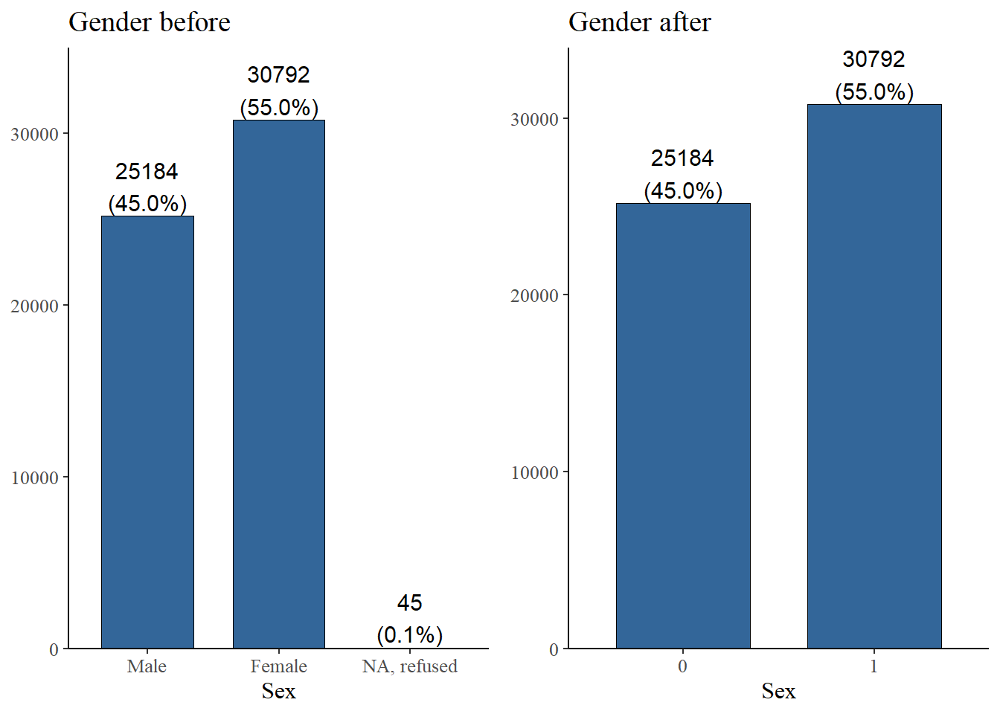

Data preparation
viernes 03 julio 2020 13:47:53
Document content: Data preparation
In this site the production and adjustment of the databases that are used for the multilevel analysis are exposed. The work in general focuses on selecting and recoding variables obtained from international databases such as the International Social Survey (ISSP) and the Standardized World Income Income Inequality Database (SWIID). In addition, factor analyzes are performed to subsequently impute predicted values that represent the estimated latent variables.
In diagram 1, a summary of the data processing is presented, which starts from international databases (input) to processed databases. As shown in the graph, the document is divided into 4 sections , corresponding to the subtitles of the codes.
In the first section, in addition to selecting and recoding ISSP variables, factor analyzes are performed to evaluate and create the latent variables of preferences about redistribution and inequality. In section 2, international SWIID and GOQ data are collected and added together with ISSP data, which includes predicted values for latent variables of meritocratic perceptions and preferences. In the next two sections, adjustments are made for multilevel analyzes for the pref.rda and meritocracy.rda databases.
load packages
library(sjPlot)
library(sjmisc) # several functions,ej read_stata
library(descr)
library(memisc) # codebook
library(psych) # cor2latex
library(corrplot) # graph correlations
library(lavaan)
library(stargazer)
library(semTools)
library(plyr) # count
library(dplyr)
#library(car) # recode
library(ggplot2)
#library(Hmisc)
library(tidyverse)
library(data.table)
library(stringr)
library(countrycode)
library(lme4)
library(texreg)
library(mice)
library(ggrepel) # for scatter labels in sjp.scatter
#library(semPlot)
library(haven)
library(sjlabelled)
library(kableExtra)
library(summarytools)
library(tidyselect)
library(magrittr)
library(semPlot)
#library(Hmisc)Section-1: Preparation individual variables ISSP
General preparation
load(file = "input/data/original/issp.rda")
#load(url('https://raw.githubusercontent.com/franciscomeneses/bases/master/issp.rda'))
# Check data
#names(issp2009)
### change variable names to lowercase
names(issp2009) <- tolower(names(issp2009))
### Check & generate IDs (v4: respondent, v5: country)
### Generate new sequential id individuals by country to merge
issp2009$id <- sequence(tabulate(issp2009
$v5))
issp2009$idtem=issp2009$v5*10000
issp2009$id=issp2009$idtem + issp2009$idPreparation-data of the redistributive preference scales: redistrib.rda
| Code | New Code | Variable |
|---|---|---|
| v33 | income_dif | Gov. resp to reduce differences in income |
| v34 | unemployed | Gov. resp to provide decent s andard of living for unemployed |
| v36 | taxes | People with high income should pay a larger / same smaller sha3re of income in taxes than those with low income |
| v38 | health | ok if people with high income can buy better health |
| v39 | educ | ok if people with high income can buy better education |
Rename & define object
# select
redistrib=issp2009[,c("v5","v33","v34","v36","v38","v39","id")]
# new names(issp2009)
redistrib$income_dif= redistrib$v33
redistrib$unemployed= redistrib$v34
redistrib$taxes = redistrib$v36
redistrib$health = redistrib$v38
redistrib$educ = redistrib$v39
#Delete old variables
redistrib=redistrib[-c(2:6)]
stargazer(redistrib[-c(1,2)], type="html") | Statistic | N | Mean | St. Dev. | Min | Pctl(25) | Pctl(75) | Max |
| income_dif | 56,021 | 2.302 | 1.483 | 1 | 1 | 3 | 9 |
| unemployed | 56,021 | 2.234 | 1.354 | 1 | 1 | 3 | 9 |
| taxes | 56,021 | 2.290 | 1.546 | 1 | 1 | 3 | 9 |
| health | 56,021 | 3.684 | 1.528 | 1 | 3 | 5 | 9 |
| educ | 56,021 | 3.650 | 1.545 | 1 | 2 | 5 | 9 |
Recode NAs
redistrib[3:7][redistrib[3:7] > 5] <- NA
stargazer(redistrib[-c(1,2)], type="html") | Statistic | N | Mean | St. Dev. | Min | Pctl(25) | Pctl(75) | Max |
| income_dif | 54,400 | 2.125 | 1.089 | 1.000 | 1.000 | 3.000 | 5.000 |
| unemployed | 54,698 | 2.088 | 0.987 | 1.000 | 1.000 | 3.000 | 5.000 |
| taxes | 53,258 | 1.984 | 0.779 | 1.000 | 1.000 | 2.000 | 5.000 |
| health | 54,237 | 3.536 | 1.312 | 1.000 | 2.000 | 5.000 | 5.000 |
| educ | 54,220 | 3.498 | 1.321 | 1.000 | 2.000 | 5.000 | 5.000 |
dim(redistrib)## [1] 56021 7adjust labels NAs
get_labels(redistrib$income_dif)
redistrib[,3:7] <-sjlabelled::set_na(redistrib[,c("income_dif","unemployed", "taxes", "health", "educ")], na = c(8,9)) ## [1] "Strongly agree" "Agree" "Neither agree nor disagree" "Disagree"
## [5] "Strongly disagree" "Cant choose" "NA"Reverse code for SEM models
redistrib[3:7]=6-redistrib[3:7]2.4 Factor scores
cfa_red1 <- '
# latent variables
redist =~ income_dif + unemployed + taxes
accum =~ health + educ
'
# generate 5 multiple complete datasets
out <- mice(redistrib[3:7], m=5) redistrib_sco [56021,9]
print(dfSummary(redistrib_sco, valid.col = FALSE, graph.magnif = 1),
max.tbl.height = 300, method = "render")Data Frame Summary
Dimensions: 56021 x 9Duplicates: 0
| No | Variable | Label | Stats / Values | Freqs (% of Valid) | Graph | Missing | ||||||||||||||||||||||||||||||
|---|---|---|---|---|---|---|---|---|---|---|---|---|---|---|---|---|---|---|---|---|---|---|---|---|---|---|---|---|---|---|---|---|---|---|---|---|
| 1 | v5 [numeric] | Country (see V4 for codes for the sample) | Mean (sd) : 432.7 (263.8) min < med < max: 32 < 392 < 862 IQR (CV) : 509 (0.6) | 41 distinct values |  |
0 (0%) | ||||||||||||||||||||||||||||||
| 2 | id [numeric] | Country (see V4 for codes for the sample) | Mean (sd) : 4328175.1 (2637921.7) min < med < max: 320001 < 3920423 < 8620969 IQR (CV) : 5090563 (0.6) | 56021 distinct values |  |
0 (0%) | ||||||||||||||||||||||||||||||
| 3 | income_dif [numeric] | Q6b It is responsib of governm to reduce differences in income betwn people with | Mean (sd) : 3.9 (1.1) min < med < max: 1 < 4 < 5 IQR (CV) : 2 (0.3) |
|
 |
1621 (2.89%) | ||||||||||||||||||||||||||||||
| 4 | unemployed [numeric] | Q6c The government should provide a decent standard of living for the unemployed | Mean (sd) : 3.9 (1) min < med < max: 1 < 4 < 5 IQR (CV) : 2 (0.3) |
|
 |
1323 (2.36%) | ||||||||||||||||||||||||||||||
| 5 | taxes [numeric] | Q7a Tax: Do you think people with high incomes should pay larger share of their | Mean (sd) : 4 (0.8) min < med < max: 1 < 4 < 5 IQR (CV) : 1 (0.2) |
|
 |
2763 (4.93%) | ||||||||||||||||||||||||||||||
| 6 | health [numeric] | Q8a Just or unjust - that people with higher incomes can buy better health care? | Mean (sd) : 2.5 (1.3) min < med < max: 1 < 2 < 5 IQR (CV) : 3 (0.5) |
|
 |
1784 (3.18%) | ||||||||||||||||||||||||||||||
| 7 | educ [numeric] | Q8b Just or unjust - that people with higher incomes can buy better education fo | Mean (sd) : 2.5 (1.3) min < med < max: 1 < 2 < 5 IQR (CV) : 3 (0.5) |
|
 |
1801 (3.21%) | ||||||||||||||||||||||||||||||
| 8 | redist [numeric] | Mean (sd) : 0 (0.6) min < med < max: -2.5 < 0.1 < 1 IQR (CV) : 0.9 (24655961432721340) | 7293 distinct values |  |
0 (0%) | |||||||||||||||||||||||||||||||
| 9 | accum [numeric] | Mean (sd) : 0 (1.1) min < med < max: -1.4 < -0.3 < 2.4 IQR (CV) : 1.8 (-15216043104484478) | 7293 distinct values |  |
0 (0%) |
Generated by summarytools 0.9.6 (R version 4.0.0)
2020-07-03
Individual level variables: Sociodemograficas.
### Select
indepvar= issp2009 %>% dplyr::select(contains("_inc"), "sex","age","degree", "hompop", "v44", "v45", "movstatus"="v46", "v5","id")
### Recode sex
sjPlot::plot_frq(indepvar$sex, title ="Gender before")
indepvar$sex=ifelse(indepvar$sex==1,0,ifelse(indepvar$sex==2,1,NA))
sjPlot::plot_frq(indepvar$sex, title ="gender after")
### Recode Age
# Age
sjPlot::plot_frq(indepvar$age, title = "Age before",show.mean = T , show.values = F,show.n = F)
#which(indepvar$age > 85) # / 461 casos !
#which(indepvar$age < 15) # / 0 casos !
indepvar$age[indepvar$age > 85] = NA
# Categorical age
indepvar$age_c=indepvar$age
indepvar$age_c[indepvar$age_c <= 25] = 1
indepvar$age_c[indepvar$age_c > 25 & indepvar$age_c <=35] = 2
indepvar$age_c[indepvar$age_c > 35 & indepvar$age_c <=45] = 3
indepvar$age_c[indepvar$age_c > 45 & indepvar$age_c <=55] = 4
indepvar$age_c[indepvar$age_c > 55 & indepvar$age_c <=65] = 5
indepvar$age_c[indepvar$age_c > 65] = 6
sjPlot::plot_frq(indepvar$age_c, title = "Age after", show.na = T)
### Recode Education
sjPlot::plot_frq(indepvar$degree, coord.flip = TRUE, title = "Degree before")
# Recode. Values over 5 are removed
indepvar$degree[indepvar$degree > 5]=NA
#### Dummy university
# Dummy university
indepvar$univ=indepvar$degree
indepvar$univ=ifelse(indepvar$univ<=4,0,
ifelse(indepvar$univ==5,1,NA))
sjPlot::plot_frq(indepvar$univ, coord.flip = TRUE, title = "Dummy university")
### Recode Income
stargazer(indepvar[1:41], type="html")| Statistic | N | Mean | St. Dev. | Min | Pctl(25) | Pctl(75) | Max |
| ar_inc | 56,021 | 984,244.900 | 124,278.700 | 0 | 999,990 | 999,990 | 999,997 |
| at_inc | 56,021 | 986,880.900 | 113,616.600 | 0 | 999,990 | 999,990 | 999,999 |
| au_inc | 56,021 | 977,568.200 | 143,500.200 | 0 | 999,990 | 999,990 | 999,999 |
| be_inc | 56,021 | 982,029.300 | 132,621.000 | 250 | 999,990 | 999,990 | 999,998 |
| bg_inc | 56,021 | 988,379.200 | 107,081.200 | 0 | 999,990 | 999,990 | 999,999 |
| ch_inc | 56,021 | 984,515.700 | 122,991.700 | 0 | 999,990 | 999,990 | 999,998 |
| cl_inc | 56,021 | 9,797,284.000 | 1,380,510.000 | 20,000 | 9,999,990 | 9,999,990 | 9,999,999 |
| cn_inc | 56,021 | 9,492,815.000 | 2,190,718.000 | 0 | 9,999,990 | 9,999,990 | 9,999,998 |
| cy_inc | 56,021 | 983,342.400 | 127,852.000 | 0 | 999,990 | 999,990 | 999,998 |
| cz_inc | 56,021 | 984,905.600 | 120,190.300 | 2,500 | 999,990 | 999,990 | 999,999 |
| de_inc | 56,021 | 979,209.000 | 142,475.600 | 0 | 999,990 | 999,990 | 999,999 |
| dk_inc | 56,021 | 9,758,927.000 | 1,493,889.000 | 70,000 | 9,999,990 | 9,999,990 | 9,999,999 |
| ee_inc | 56,021 | 984,775.200 | 121,645.800 | 0 | 999,990 | 999,990 | 999,998 |
| es_inc | 56,021 | 987,281.200 | 111,933.900 | 250 | 999,990 | 999,990 | 999,999 |
| fi_inc | 56,021 | 986,347.900 | 115,715.100 | 0 | 999,990 | 999,990 | 999,999 |
| fr_inc | 56,021 | 953,630.300 | 209,931.300 | 250 | 999,990 | 999,990 | 999,999 |
| gb_inc | 56,021 | 985,371.800 | 118,360.800 | 2,000 | 999,990 | 999,990 | 999,998 |
| hr_inc | 56,021 | 985,900.200 | 117,437.100 | 280 | 999,990 | 999,990 | 999,999 |
| hu_inc | 56,021 | 9,852,941.000 | 1,192,659.000 | 0 | 9,999,990 | 9,999,990 | 9,999,999 |
| il_inc | 56,021 | 984,166.600 | 124,257.700 | 0 | 999,990 | 999,990 | 999,999 |
| is_inc | 56,021 | 9,856,318.000 | 1,154,729.000 | 50,000 | 9,999,990 | 9,999,990 | 9,999,997 |
| it_inc | 56,021 | 982,893.000 | 129,482.600 | 400 | 999,990 | 999,990 | 999,998 |
| jp_inc | 56,021 | 98,036,021.000 | 13,460,874.000 | 1,000,000 | 99,999,990 | 99,999,990 | 99,999,999 |
| kr_inc | 56,021 | 97,340,038.000 | 15,774,210.000 | 0 | 99,999,990 | 99,999,990 | 99,999,998 |
| lt_inc | 56,021 | 986,784.400 | 114,061.400 | 0 | 999,990 | 999,990 | 999,999 |
| lv_inc | 56,021 | 986,805.300 | 114,036.500 | 0 | 999,990 | 999,990 | 999,998 |
| no_inc | 56,021 | 97,913,429.000 | 14,225,305.000 | 0 | 99,999,990 | 99,999,990 | 99,999,999 |
| nz_inc | 56,021 | 985,391.100 | 115,652.900 | 7,500 | 999,990 | 999,990 | 999,999 |
| ph_inc | 56,021 | 979,401.300 | 141,240.800 | 500 | 999,990 | 999,990 | 999,998 |
| pl_inc | 56,021 | 979,830.400 | 140,318.000 | 0 | 999,990 | 999,990 | 999,999 |
| pt_inc | 56,021 | 989,809.200 | 100,327.900 | 175 | 999,990 | 999,990 | 999,998 |
| ru_inc | 56,021 | 977,960.600 | 145,367.900 | 1,500 | 999,990 | 999,990 | 999,999 |
| se_inc | 56,021 | 982,544.200 | 128,212.300 | 0 | 999,990 | 999,990 | 999,999 |
| si_inc | 56,021 | 988,658.200 | 105,747.800 | 0 | 999,990 | 999,990 | 999,999 |
| sk_inc | 56,021 | 982,833.700 | 129,794.400 | 75 | 999,990 | 999,990 | 999,999 |
| tr_inc | 56,021 | 977,313.000 | 148,776.700 | 0 | 999,990 | 999,990 | 999,999 |
| tw_inc | 56,021 | 9,662,455.000 | 1,799,088.000 | 0 | 9,999,990 | 9,999,990 | 9,999,998 |
| ua_inc | 56,021 | 976,017.300 | 152,790.000 | 0 | 999,990 | 999,990 | 999,999 |
| us_inc | 56,021 | 975,711.200 | 149,425.700 | 500 | 999,990 | 999,990 | 999,998 |
| ve_inc | 56,021 | 984,899.800 | 121,648.900 | 300 | 999,990 | 999,990 | 999,999 |
| za_inc | 56,021 | 954,776.100 | 207,095.400 | 0 | 999,990 | 999,990 | 999,999 |
# Income (variables finish in _inc)
# Continuo
# Recode missings
# Para todos los paises, recode missings.
indepvar[1:41][indepvar[1:41] >= 9999990] <- NA
indepvar[1:41][indepvar[1:41] == 999990] =NA
indepvar[1:41][indepvar[1:41] == 999997] =NA
indepvar[1:41][indepvar[1:41] == 999998] =NA
indepvar[1:41][indepvar[1:41] == 999999] =NA
# Identificar ceros (para poder diferenciar de los NAs luego)
indepvar[1:41][indepvar[1:41] == 0] <- 111111
# Agregar ahora todos en un solo vector
indepvar$income=rowSums(indepvar[1:41],na.rm = TRUE)
indepvar$income[indepvar$income ==0]=NA
indepvar$income[indepvar$income ==1111]=0
stargazer(indepvar[1:41], type="html")| Statistic | N | Mean | St. Dev. | Min | Pctl(25) | Pctl(75) | Max |
| ar_inc | 885 | 3,567.738 | 5,787.233 | 200.000 | 1,600.000 | 4,300.000 | 111,111.000 |
| at_inc | 736 | 3,089.967 | 9,851.984 | 150.000 | 1,350.000 | 2,750.000 | 111,111.000 |
| au_inc | 1,337 | 61,914.800 | 34,999.700 | 5,200.000 | 28,600.000 | 104,000.000 | 111,111.000 |
| be_inc | 1,009 | 2,784.985 | 1,483.174 | 250.000 | 1,650.000 | 3,550.000 | 10,450.000 |
| bg_inc | 651 | 2,031.022 | 11,415.680 | 35.000 | 330.000 | 1,000.000 | 111,111.000 |
| ch_inc | 873 | 7,884.624 | 9,954.114 | 1,300.000 | 4,150.000 | 9,350.000 | 111,111.000 |
| cl_inc | 1,186 | 425,129.800 | 531,821.100 | 20,000.000 | 155,000.000 | 400,000.000 | 3,100,000.000 |
| cn_inc | 2,850 | 31,097.890 | 65,345.080 | 200.000 | 10,000.000 | 35,000.000 | 2,000,000.000 |
| cy_inc | 934 | 21,932.510 | 42,401.990 | 256.000 | 1,111.000 | 3,586.000 | 111,111.000 |
| cz_inc | 869 | 27,554.660 | 16,717.740 | 2,500.000 | 17,500.000 | 37,500.000 | 97,500.000 |
| de_inc | 1,167 | 3,648.516 | 11,510.090 | 100.000 | 1,400.000 | 3,000.000 | 111,111.000 |
| dk_inc | 1,423 | 509,768.100 | 283,174.100 | 70,000.000 | 275,000.000 | 750,000.000 | 1,050,000.000 |
| ee_inc | 863 | 12,460.230 | 11,569.720 | 2.000 | 5,000.000 | 15,000.000 | 111,111.000 |
| es_inc | 713 | 1,440.533 | 718.085 | 250.000 | 750.000 | 1,875.000 | 3,000.000 |
| fi_inc | 768 | 5,022.810 | 6,702.803 | 200.000 | 2,500.000 | 6,000.000 | 111,111.000 |
| fr_inc | 2,605 | 3,015.893 | 1,672.362 | 250.000 | 2,050.000 | 3,450.000 | 8,250.000 |
| gb_inc | 842 | 27,390.140 | 18,288.600 | 2,000.000 | 11,000.000 | 41,000.000 | 59,000.000 |
| hr_inc | 795 | 7,123.340 | 5,234.822 | 280.000 | 3,500.000 | 10,000.000 | 50,000.000 |
| hu_inc | 839 | 181,518.500 | 121,745.300 | 20,000.000 | 102,000.000 | 220,000.000 | 1,000,000.000 |
| il_inc | 894 | 11,799.210 | 18,258.250 | 2,250.000 | 5,000.000 | 12,000.000 | 111,111.000 |
| is_inc | 855 | 586,345.000 | 317,569.400 | 50,000.000 | 325,000.000 | 750,000.000 | 1,300,000.000 |
| it_inc | 960 | 2,288.906 | 1,259.237 | 400.000 | 1,400.000 | 2,750.000 | 5,500.000 |
| jp_inc | 1,012 | 4,697,628.000 | 2,456,239.000 | 1,000,000.000 | 2,500,000.000 | 6,500,000.000 | 9,500,000.000 |
| kr_inc | 1,473 | 3,368,615.000 | 2,031,564.000 | 40,000.000 | 2,000,000.000 | 4,500,000.000 | 9,500,000.000 |
| lt_inc | 741 | 14,064.980 | 34,528.560 | 130.000 | 900.000 | 3,000.000 | 111,111.000 |
| lv_inc | 739 | 1,105.689 | 8,130.357 | 18.000 | 250.000 | 650.000 | 111,111.000 |
| no_inc | 1,169 | 761,599.300 | 624,095.700 | 1,000.000 | 450,000.000 | 900,000.000 | 9,000,000.000 |
| nz_inc | 880 | 70,622.160 | 36,378.320 | 7,500.000 | 35,000.000 | 97,500.000 | 120,000.000 |
| ph_inc | 1,166 | 10,796.440 | 17,374.870 | 500.000 | 4,000.000 | 11,875.000 | 300,000.000 |
| pl_inc | 1,133 | 3,398.214 | 6,208.477 | 50.000 | 1,500.000 | 4,000.000 | 120,000.000 |
| pt_inc | 571 | 1,140.718 | 691.088 | 175.000 | 650.000 | 2,000.000 | 2,500.000 |
| ru_inc | 1,258 | 18,979.350 | 15,845.930 | 1,500.000 | 9,000.000 | 25,000.000 | 120,000.000 |
| se_inc | 1,019 | 41,533.380 | 23,812.050 | 1,000.000 | 23,000.000 | 52,000.000 | 240,000.000 |
| si_inc | 636 | 2,893.796 | 10,658.380 | 50.000 | 1,000.000 | 2,400.000 | 111,111.000 |
| sk_inc | 962 | 907.588 | 478.217 | 75.000 | 525.000 | 1,050.000 | 3,000.000 |
| tr_inc | 1,272 | 2,478.886 | 11,547.910 | 50.000 | 600.000 | 1,500.000 | 111,111.000 |
| tw_inc | 1,905 | 76,420.820 | 77,873.260 | 5,000.000 | 35,000.000 | 95,000.000 | 1,250,000.000 |
| ua_inc | 1,346 | 4,380.603 | 15,080.140 | 1.000 | 1,200.000 | 3,000.000 | 111,111.000 |
| us_inc | 1,444 | 58,076.700 | 43,419.130 | 500.000 | 23,750.000 | 82,500.000 | 160,000.000 |
| ve_inc | 849 | 4,263.894 | 3,120.142 | 300.000 | 2,500.000 | 5,000.000 | 34,000.000 |
| za_inc | 2,549 | 8,124.328 | 15,629.320 | 250.000 | 1,250.000 | 8,750.000 | 111,111.000 |
#summary(indepvar$income)
### Recode Household income
# Household income
# Preparar numero de personas en household
indepvar$hompop[indepvar$hompop==99]=NA
# Ahora dividir el vector income por n° de personas en hogar
indepvar$hhincome=indepvar$income/indepvar$hompop
summary(indepvar$hhincome)Min. 1st Qu. Median Mean 3rd Qu. Max. NA’s 0 750 2800 Inf 22222 Inf 10129
# Y ajustar NAs de la variable final ingreso continuo
indepvar$hhincome[indepvar$hhincome==0]= NA
indepvar$hhincome[indepvar$income==111111]= 0
indepvar$hhincome[indepvar$hompop==0]= NA
#Wsummary(indepvar$hhincome)
# check
income=indepvar[c("v5", "ar_inc", "hompop","income",
"hhincome")]
# View(income)
# Generar quintiles de ingreso
indepvar %>% group_by(v5) %>% mutate(quintile =
ntile(hhincome,5)) ->indepvar
# Check
#prop.table(table(indepvar$v5,indepvar$quintile),1)*100
# Generar quintiles con NA como categorÃ?a
indepvar$quintile_miss=indepvar$quintile
indepvar$quintile_miss[is.na(indepvar$quintile_miss)] = 6
sjPlot::plot_frq(indepvar$quintile_miss, coord.flip = TRUE, title = "Quintiles de ingreso")
#stargazer(indepvar$quintile_miss, type = "html")
### Recode Subjetive status
# Subjective status
# Individual
#freq(indepvar$v44)
indepvar$sstatus=indepvar$v44
indepvar$sstatus[indepvar$ssttus>10]=NA
#freq(indepvar$sstatus)
# Family
#freq(indepvar$v45)
indepvar$f_sstatus=indepvar$v45
indepvar$f_sstatus[indepvar$f_sstatus>10]=NA
#freq(indepvar$f_sstatus)
table(indepvar$movstatus)1 2 3 4 5 6 7 8 9 5598 15404 15877 7797 2948 3668 3090 790 849
indepvar$movstatus[indepvar$movstatus>=8]= NA
table(indepvar$movstatus)1 2 3 4 5 6 7 5598 15404 15877 7797 2948 3668 3090
Codigos por incorporar: se deben hacer ajustes de moneda y partidos por pais.
# Home value (ver Nota 3)
#summary(indepvar$v67)
# Party
#freq(issp2009$party_lr)
#prop.table(table(indepvar$v5,indepvar$party_lr),1)*100
# paises sin datos: CL, CN, CY, HU, IL, TW
#freq(indepvar$cl_prty) # estan
#freq(indepvar$cn_prty) # no
#freq(indepvar$cy_prty) # si
#freq(indepvar$hu_prty) # si
#freq(indepvar$il_prty) # si
#freq(indepvar$tw_prty) # si
# para usarlas habría que clasificar partidos de esos países#Eliminar income por paises.
indepvar=indepvar[-c(1:41)]
dim(indepvar)
View(indepvar)## [1] 56021 17#indepvar_graph<-as.data.frame(indepvar[,2:16])
print(dfSummary(indepvar[-c(7)], valid.col = FALSE, graph.magnif = 1),
max.tbl.height = 300, method = "render")Data Frame Summary
Group: v5 = 32Dimensions: 1133 x 16
Duplicates: 0
| No | Variable | Label | Stats / Values | Freqs (% of Valid) | Graph | Missing | ||||||||||||||||||||||||||||||||||||||||||||||||||||||||||||
|---|---|---|---|---|---|---|---|---|---|---|---|---|---|---|---|---|---|---|---|---|---|---|---|---|---|---|---|---|---|---|---|---|---|---|---|---|---|---|---|---|---|---|---|---|---|---|---|---|---|---|---|---|---|---|---|---|---|---|---|---|---|---|---|---|---|---|
| 1 | sex [numeric] | Min : 0 Mean : 0.5 Max : 1 |
|
 |
0 (0%) | |||||||||||||||||||||||||||||||||||||||||||||||||||||||||||||
| 2 | age [numeric] | R: Age | Mean (sd) : 46.5 (17.3) min < med < max: 18 < 46 < 85 IQR (CV) : 28 (0.4) | 68 distinct values |  |
4 (0.35%) | ||||||||||||||||||||||||||||||||||||||||||||||||||||||||||||
| 3 | degree [numeric] | R: Education II-highest education level | Mean (sd) : 2.3 (1.5) min < med < max: 0 < 2 < 5 IQR (CV) : 2 (0.6) |
|
 |
0 (0%) | ||||||||||||||||||||||||||||||||||||||||||||||||||||||||||||
| 4 | hompop [numeric] | How many persons in household | Mean (sd) : 3.6 (1.9) min < med < max: 1 < 3 < 21 IQR (CV) : 3 (0.5) | 13 distinct values |  |
0 (0%) | ||||||||||||||||||||||||||||||||||||||||||||||||||||||||||||
| 5 | v44 [numeric] | Q10a [TOPBOT] Groups tending towards top+bottom. Where would you put yourself on | Mean (sd) : 5.5 (7) min < med < max: 1 < 5 < 99 IQR (CV) : 2 (1.3) | 11 distinct values |  |
0 (0%) | ||||||||||||||||||||||||||||||||||||||||||||||||||||||||||||
| 6 | v45 [numeric] | Q10b Where did the family that you grew up in, fit in then? | Mean (sd) : 5.2 (6.5) min < med < max: 1 < 5 < 99 IQR (CV) : 3 (1.3) | 11 distinct values | |
0 (0%) | ||||||||||||||||||||||||||||||||||||||||||||||||||||||||||||
| 7 | v5 [numeric] | Country (see V4 for codes for the sample) | 1 distinct value |
|
 |
0 (0%) | ||||||||||||||||||||||||||||||||||||||||||||||||||||||||||||
| 8 | id [numeric] | Country (see V4 for codes for the sample) | Mean (sd) : 320567 (327.2) min < med < max: 320001 < 320567 < 321133 IQR (CV) : 566 (0) | 1133 distinct values |  |
0 (0%) | ||||||||||||||||||||||||||||||||||||||||||||||||||||||||||||
| 9 | age_c [numeric] | R: Age | Mean (sd) : 3.6 (1.7) min < med < max: 1 < 4 < 6 IQR (CV) : 3 (0.5) |
|
 |
4 (0.35%) | ||||||||||||||||||||||||||||||||||||||||||||||||||||||||||||
| 10 | univ [numeric] | Min : 0 Mean : 0.1 Max : 1 |
|
 |
0 (0%) | |||||||||||||||||||||||||||||||||||||||||||||||||||||||||||||
| 11 | income [numeric] | Mean (sd) : 3567.7 (5787.2) min < med < max: 200 < 2500 < 111111 IQR (CV) : 2700 (1.6) | 124 distinct values |  |
248 (21.89%) | |||||||||||||||||||||||||||||||||||||||||||||||||||||||||||||
| 12 | hhincome [numeric] | How many persons in household | Mean (sd) : 1159.1 (1239.5) min < med < max: 0 < 850 < 14000 IQR (CV) : 800 (1.1) | 222 distinct values |  |
248 (21.89%) | ||||||||||||||||||||||||||||||||||||||||||||||||||||||||||||
| 13 | quintile [integer] | Mean (sd) : 1.9 (0.8) min < med < max: 1 < 2 < 4 IQR (CV) : 1 (0.4) |
|
 |
248 (21.89%) | |||||||||||||||||||||||||||||||||||||||||||||||||||||||||||||
| 14 | quintile_miss [numeric] | Mean (sd) : 2.8 (1.8) min < med < max: 1 < 2 < 6 IQR (CV) : 2 (0.7) |
|
 |
0 (0%) | |||||||||||||||||||||||||||||||||||||||||||||||||||||||||||||
| 15 | sstatus [numeric] | Q10a [TOPBOT] Groups tending towards top+bottom. Where would you put yourself on | Mean (sd) : 5.5 (7) min < med < max: 1 < 5 < 99 IQR (CV) : 2 (1.3) | 11 distinct values | |
0 (0%) | ||||||||||||||||||||||||||||||||||||||||||||||||||||||||||||
| 16 | f_sstatus [numeric] | Q10b Where did the family that you grew up in, fit in then? | Mean (sd) : 4.8 (1.9) min < med < max: 1 < 5 < 10 IQR (CV) : 3 (0.4) |
|
 |
5 (0.44%) |
Dimensions: 1525 x 16
Duplicates: 0
| No | Variable | Label | Stats / Values | Freqs (% of Valid) | Graph | Missing | ||||||||||||||||||||||||||||||||||||||||||||||||||||||||||||
|---|---|---|---|---|---|---|---|---|---|---|---|---|---|---|---|---|---|---|---|---|---|---|---|---|---|---|---|---|---|---|---|---|---|---|---|---|---|---|---|---|---|---|---|---|---|---|---|---|---|---|---|---|---|---|---|---|---|---|---|---|---|---|---|---|---|---|
| 1 | sex [numeric] | Min : 0 Mean : 0.6 Max : 1 |
|
 |
31 (2.03%) | |||||||||||||||||||||||||||||||||||||||||||||||||||||||||||||
| 2 | age [numeric] | R: Age | Mean (sd) : 52.2 (16.5) min < med < max: 17 < 53 < 85 IQR (CV) : 24 (0.3) | 69 distinct values |  |
56 (3.67%) | ||||||||||||||||||||||||||||||||||||||||||||||||||||||||||||
| 3 | degree [numeric] | R: Education II-highest education level | Mean (sd) : 3.5 (1.6) min < med < max: 0 < 4 < 5 IQR (CV) : 2 (0.5) |
|
 |
54 (3.54%) | ||||||||||||||||||||||||||||||||||||||||||||||||||||||||||||
| 4 | hompop [numeric] | How many persons in household | Mean (sd) : 2.7 (1.3) min < med < max: 1 < 2 < 9 IQR (CV) : 2 (0.5) |
|
 |
45 (2.95%) | ||||||||||||||||||||||||||||||||||||||||||||||||||||||||||||
| 5 | v44 [numeric] | Q10a [TOPBOT] Groups tending towards top+bottom. Where would you put yourself on | Mean (sd) : 8.2 (14.6) min < med < max: 1 < 6 < 99 IQR (CV) : 2 (1.8) | 11 distinct values |  |
0 (0%) | ||||||||||||||||||||||||||||||||||||||||||||||||||||||||||||
| 6 | v45 [numeric] | Q10b Where did the family that you grew up in, fit in then? | Mean (sd) : 7.6 (14.7) min < med < max: 1 < 5 < 99 IQR (CV) : 3 (1.9) | 11 distinct values |  |
0 (0%) | ||||||||||||||||||||||||||||||||||||||||||||||||||||||||||||
| 7 | v5 [numeric] | Country (see V4 for codes for the sample) | 1 distinct value |
|
 |
0 (0%) | ||||||||||||||||||||||||||||||||||||||||||||||||||||||||||||
| 8 | id [numeric] | Country (see V4 for codes for the sample) | Mean (sd) : 360763 (440.4) min < med < max: 360001 < 360763 < 361525 IQR (CV) : 762 (0) | 1525 distinct values |  |
0 (0%) | ||||||||||||||||||||||||||||||||||||||||||||||||||||||||||||
| 9 | age_c [numeric] | R: Age | Mean (sd) : 4.1 (1.5) min < med < max: 1 < 4 < 6 IQR (CV) : 2 (0.4) |
|
 |
56 (3.67%) | ||||||||||||||||||||||||||||||||||||||||||||||||||||||||||||
| 10 | univ [numeric] | Min : 0 Mean : 0.3 Max : 1 |
|
 |
54 (3.54%) | |||||||||||||||||||||||||||||||||||||||||||||||||||||||||||||
| 11 | income [numeric] | Mean (sd) : 61914.8 (34999.7) min < med < max: 5200 < 65000 < 111111 IQR (CV) : 75400 (0.6) | 12 distinct values |  |
188 (12.33%) | |||||||||||||||||||||||||||||||||||||||||||||||||||||||||||||
| 12 | hhincome [numeric] | How many persons in household | Mean (sd) : 25312 (16650.2) min < med < max: 0 < 21666.7 < 104000 IQR (CV) : 19500 (0.7) | 61 distinct values |  |
207 (13.57%) | ||||||||||||||||||||||||||||||||||||||||||||||||||||||||||||
| 13 | quintile [integer] | Mean (sd) : 4.1 (0.7) min < med < max: 1 < 4 < 5 IQR (CV) : 0 (0.2) |
|
 |
207 (13.57%) | |||||||||||||||||||||||||||||||||||||||||||||||||||||||||||||
| 14 | quintile_miss [numeric] | Mean (sd) : 4.4 (0.9) min < med < max: 1 < 4 < 6 IQR (CV) : 1 (0.2) |
|
 |
0 (0%) | |||||||||||||||||||||||||||||||||||||||||||||||||||||||||||||
| 15 | sstatus [numeric] | Q10a [TOPBOT] Groups tending towards top+bottom. Where would you put yourself on | Mean (sd) : 8.2 (14.6) min < med < max: 1 < 6 < 99 IQR (CV) : 2 (1.8) | 11 distinct values |  |
0 (0%) | ||||||||||||||||||||||||||||||||||||||||||||||||||||||||||||
| 16 | f_sstatus [numeric] | Q10b Where did the family that you grew up in, fit in then? | Mean (sd) : 5.3 (1.8) min < med < max: 1 < 5 < 10 IQR (CV) : 2 (0.3) |
|
 |
38 (2.49%) |
Dimensions: 1019 x 16
Duplicates: 0
| No | Variable | Label | Stats / Values | Freqs (% of Valid) | Graph | Missing | ||||||||||||||||||||||||||||||||||||||||||||||||||||||||||||
|---|---|---|---|---|---|---|---|---|---|---|---|---|---|---|---|---|---|---|---|---|---|---|---|---|---|---|---|---|---|---|---|---|---|---|---|---|---|---|---|---|---|---|---|---|---|---|---|---|---|---|---|---|---|---|---|---|---|---|---|---|---|---|---|---|---|---|
| 1 | sex [numeric] | Min : 0 Mean : 0.5 Max : 1 |
|
 |
0 (0%) | |||||||||||||||||||||||||||||||||||||||||||||||||||||||||||||
| 2 | age [numeric] | R: Age | Mean (sd) : 44.9 (16.9) min < med < max: 16 < 45 < 85 IQR (CV) : 27 (0.4) | 70 distinct values |  |
4 (0.39%) | ||||||||||||||||||||||||||||||||||||||||||||||||||||||||||||
| 3 | degree [numeric] | R: Education II-highest education level | Mean (sd) : 2.4 (1.2) min < med < max: 0 < 2 < 5 IQR (CV) : 1 (0.5) |
|
 |
0 (0%) | ||||||||||||||||||||||||||||||||||||||||||||||||||||||||||||
| 4 | hompop [numeric] | How many persons in household | Mean (sd) : 2.3 (1.2) min < med < max: 1 < 2 < 7 IQR (CV) : 2 (0.5) |
|
 |
0 (0%) | ||||||||||||||||||||||||||||||||||||||||||||||||||||||||||||
| 5 | v44 [numeric] | Q10a [TOPBOT] Groups tending towards top+bottom. Where would you put yourself on | Mean (sd) : 6 (1.4) min < med < max: 1 < 6 < 10 IQR (CV) : 2 (0.2) |
|
 |
0 (0%) | ||||||||||||||||||||||||||||||||||||||||||||||||||||||||||||
| 6 | v45 [numeric] | Q10b Where did the family that you grew up in, fit in then? | Mean (sd) : 5.5 (1.7) min < med < max: 1 < 6 < 10 IQR (CV) : 3 (0.3) |
|
 |
0 (0%) | ||||||||||||||||||||||||||||||||||||||||||||||||||||||||||||
| 7 | v5 [numeric] | Country (see V4 for codes for the sample) | 1 distinct value |
|
|
0 (0%) | ||||||||||||||||||||||||||||||||||||||||||||||||||||||||||||
| 8 | id [numeric] | Country (see V4 for codes for the sample) | Mean (sd) : 400510 (294.3) min < med < max: 400001 < 400510 < 401019 IQR (CV) : 509 (0) | 1019 distinct values |  |
0 (0%) | ||||||||||||||||||||||||||||||||||||||||||||||||||||||||||||
| 9 | age_c [numeric] | R: Age | Mean (sd) : 3.4 (1.6) min < med < max: 1 < 3 < 6 IQR (CV) : 3 (0.5) |
|
 |
4 (0.39%) | ||||||||||||||||||||||||||||||||||||||||||||||||||||||||||||
| 10 | univ [numeric] | Min : 0 Mean : 0.1 Max : 1 |
|
 |
0 (0%) | |||||||||||||||||||||||||||||||||||||||||||||||||||||||||||||
| 11 | income [numeric] | Mean (sd) : 3090 (9852) min < med < max: 150 < 2250 < 111111 IQR (CV) : 1400 (3.2) | 12 distinct values |  |
283 (27.77%) | |||||||||||||||||||||||||||||||||||||||||||||||||||||||||||||
| 12 | hhincome [numeric] | How many persons in household | Mean (sd) : 1103.4 (540.3) min < med < max: 0 < 1000 < 4000 IQR (CV) : 625 (0.5) | 44 distinct values |  |
283 (27.77%) | ||||||||||||||||||||||||||||||||||||||||||||||||||||||||||||
| 13 | quintile [integer] | Mean (sd) : 2 (0.6) min < med < max: 1 < 2 < 3 IQR (CV) : 0 (0.3) |
|
 |
283 (27.77%) | |||||||||||||||||||||||||||||||||||||||||||||||||||||||||||||
| 14 | quintile_miss [numeric] | Mean (sd) : 3.1 (1.8) min < med < max: 1 < 2 < 6 IQR (CV) : 4 (0.6) |
|
 |
0 (0%) | |||||||||||||||||||||||||||||||||||||||||||||||||||||||||||||
| 15 | sstatus [numeric] | Q10a [TOPBOT] Groups tending towards top+bottom. Where would you put yourself on | Mean (sd) : 6 (1.4) min < med < max: 1 < 6 < 10 IQR (CV) : 2 (0.2) |
|
|
0 (0%) | ||||||||||||||||||||||||||||||||||||||||||||||||||||||||||||
| 16 | f_sstatus [numeric] | Q10b Where did the family that you grew up in, fit in then? | Mean (sd) : 5.5 (1.7) min < med < max: 1 < 6 < 10 IQR (CV) : 3 (0.3) |
|
 |
0 (0%) |
Dimensions: 1115 x 16
Duplicates: 0
| No | Variable | Label | Stats / Values | Freqs (% of Valid) | Graph | Missing | ||||||||||||||||||||||||||||||||||||||||||||||||||||||||||||
|---|---|---|---|---|---|---|---|---|---|---|---|---|---|---|---|---|---|---|---|---|---|---|---|---|---|---|---|---|---|---|---|---|---|---|---|---|---|---|---|---|---|---|---|---|---|---|---|---|---|---|---|---|---|---|---|---|---|---|---|---|---|---|---|---|---|---|
| 1 | sex [numeric] | Min : 0 Mean : 0.5 Max : 1 |
|
 |
0 (0%) | |||||||||||||||||||||||||||||||||||||||||||||||||||||||||||||
| 2 | age [numeric] | R: Age | Mean (sd) : 48.5 (17.3) min < med < max: 18 < 48 < 85 IQR (CV) : 27 (0.4) | 68 distinct values |  |
10 (0.9%) | ||||||||||||||||||||||||||||||||||||||||||||||||||||||||||||
| 3 | degree [numeric] | R: Education II-highest education level | Mean (sd) : 2.9 (1.2) min < med < max: 0 < 3 < 5 IQR (CV) : 2 (0.4) |
|
 |
0 (0%) | ||||||||||||||||||||||||||||||||||||||||||||||||||||||||||||
| 4 | hompop [numeric] | How many persons in household | Mean (sd) : 2.8 (1.3) min < med < max: 1 < 2 < 8 IQR (CV) : 2 (0.5) |
|
 |
4 (0.36%) | ||||||||||||||||||||||||||||||||||||||||||||||||||||||||||||
| 5 | v44 [numeric] | Q10a [TOPBOT] Groups tending towards top+bottom. Where would you put yourself on | Mean (sd) : 7.1 (10.8) min < med < max: 1 < 6 < 99 IQR (CV) : 2 (1.5) | 11 distinct values |  |
0 (0%) | ||||||||||||||||||||||||||||||||||||||||||||||||||||||||||||
| 6 | v45 [numeric] | Q10b Where did the family that you grew up in, fit in then? | Mean (sd) : 6.7 (9.8) min < med < max: 1 < 6 < 99 IQR (CV) : 2 (1.5) | 11 distinct values | |
0 (0%) | ||||||||||||||||||||||||||||||||||||||||||||||||||||||||||||
| 7 | v5 [numeric] | Country (see V4 for codes for the sample) | 1 distinct value |
|
 |
0 (0%) | ||||||||||||||||||||||||||||||||||||||||||||||||||||||||||||
| 8 | id [numeric] | Country (see V4 for codes for the sample) | Mean (sd) : 560558 (322) min < med < max: 560001 < 560558 < 561115 IQR (CV) : 557 (0) | 1115 distinct values |  |
0 (0%) | ||||||||||||||||||||||||||||||||||||||||||||||||||||||||||||
| 9 | age_c [numeric] | R: Age | Mean (sd) : 3.7 (1.6) min < med < max: 1 < 4 < 6 IQR (CV) : 3 (0.4) |
|
 |
10 (0.9%) | ||||||||||||||||||||||||||||||||||||||||||||||||||||||||||||
| 10 | univ [numeric] | Min : 0 Mean : 0.1 Max : 1 |
|
 |
0 (0%) | |||||||||||||||||||||||||||||||||||||||||||||||||||||||||||||
| 11 | income [numeric] | Mean (sd) : 2785 (1483.2) min < med < max: 250 < 2550 < 10450 IQR (CV) : 1900 (0.5) | 43 distinct values |  |
106 (9.51%) | |||||||||||||||||||||||||||||||||||||||||||||||||||||||||||||
| 12 | hhincome [numeric] | How many persons in household | Mean (sd) : 1107.2 (584) min < med < max: 110 < 975 < 5225 IQR (CV) : 587.5 (0.5) | 167 distinct values |  |
109 (9.78%) | ||||||||||||||||||||||||||||||||||||||||||||||||||||||||||||
| 13 | quintile [integer] | Mean (sd) : 2.1 (0.6) min < med < max: 1 < 2 < 3 IQR (CV) : 0 (0.3) |
|
 |
109 (9.78%) | |||||||||||||||||||||||||||||||||||||||||||||||||||||||||||||
| 14 | quintile_miss [numeric] | Mean (sd) : 2.5 (1.3) min < med < max: 1 < 2 < 6 IQR (CV) : 1 (0.5) |
|
 |
0 (0%) | |||||||||||||||||||||||||||||||||||||||||||||||||||||||||||||
| 15 | sstatus [numeric] | Q10a [TOPBOT] Groups tending towards top+bottom. Where would you put yourself on | Mean (sd) : 7.1 (10.8) min < med < max: 1 < 6 < 99 IQR (CV) : 2 (1.5) | 11 distinct values | |
0 (0%) | ||||||||||||||||||||||||||||||||||||||||||||||||||||||||||||
| 16 | f_sstatus [numeric] | Q10b Where did the family that you grew up in, fit in then? | Mean (sd) : 5.7 (1.8) min < med < max: 1 < 6 < 10 IQR (CV) : 2 (0.3) |
|
 |
12 (1.08%) |
Dimensions: 1000 x 16
Duplicates: 0
| No | Variable | Label | Stats / Values | Freqs (% of Valid) | Graph | Missing | ||||||||||||||||||||||||||||||||||||||||||||||||||||||||||||
|---|---|---|---|---|---|---|---|---|---|---|---|---|---|---|---|---|---|---|---|---|---|---|---|---|---|---|---|---|---|---|---|---|---|---|---|---|---|---|---|---|---|---|---|---|---|---|---|---|---|---|---|---|---|---|---|---|---|---|---|---|---|---|---|---|---|---|
| 1 | sex [numeric] | Min : 0 Mean : 0.6 Max : 1 |
|
 |
0 (0%) | |||||||||||||||||||||||||||||||||||||||||||||||||||||||||||||
| 2 | age [numeric] | R: Age | Mean (sd) : 49.1 (17.2) min < med < max: 18 < 49 < 85 IQR (CV) : 27 (0.4) | 68 distinct values |  |
4 (0.4%) | ||||||||||||||||||||||||||||||||||||||||||||||||||||||||||||
| 3 | degree [numeric] | R: Education II-highest education level | Mean (sd) : 3.4 (1.2) min < med < max: 0 < 4 < 5 IQR (CV) : 2 (0.4) |
|
 |
1 (0.1%) | ||||||||||||||||||||||||||||||||||||||||||||||||||||||||||||
| 4 | hompop [numeric] | How many persons in household | Mean (sd) : 2.7 (1.4) min < med < max: 1 < 3 < 12 IQR (CV) : 2 (0.5) | 11 distinct values |  |
7 (0.7%) | ||||||||||||||||||||||||||||||||||||||||||||||||||||||||||||
| 5 | v44 [numeric] | Q10a [TOPBOT] Groups tending towards top+bottom. Where would you put yourself on | Mean (sd) : 7.4 (17.6) min < med < max: 1 < 4 < 98 IQR (CV) : 2 (2.4) |
|
 |
0 (0%) | ||||||||||||||||||||||||||||||||||||||||||||||||||||||||||||
| 6 | v45 [numeric] | Q10b Where did the family that you grew up in, fit in then? | Mean (sd) : 8.8 (19.2) min < med < max: 1 < 5 < 98 IQR (CV) : 2 (2.2) | 11 distinct values |  |
0 (0%) | ||||||||||||||||||||||||||||||||||||||||||||||||||||||||||||
| 7 | v5 [numeric] | Country (see V4 for codes for the sample) | 1 distinct value |
|
 |
0 (0%) | ||||||||||||||||||||||||||||||||||||||||||||||||||||||||||||
| 8 | id [numeric] | Country (see V4 for codes for the sample) | Mean (sd) : 1000500.5 (288.8) min < med < max: 1000001 < 1000500.5 < 1001000 IQR (CV) : 499.5 (0) | 1000 distinct values |  |
0 (0%) | ||||||||||||||||||||||||||||||||||||||||||||||||||||||||||||
| 9 | age_c [numeric] | R: Age | Mean (sd) : 3.8 (1.6) min < med < max: 1 < 4 < 6 IQR (CV) : 3 (0.4) |
|
 |
4 (0.4%) | ||||||||||||||||||||||||||||||||||||||||||||||||||||||||||||
| 10 | univ [numeric] | Min : 0 Mean : 0.2 Max : 1 |
|
 |
1 (0.1%) | |||||||||||||||||||||||||||||||||||||||||||||||||||||||||||||
| 11 | income [numeric] | Mean (sd) : 2031 (11415.7) min < med < max: 35 < 600 < 111111 IQR (CV) : 670 (5.6) | 156 distinct values |  |
349 (34.9%) | |||||||||||||||||||||||||||||||||||||||||||||||||||||||||||||
| 12 | hhincome [numeric] | How many persons in household | Mean (sd) : 338.6 (322.8) min < med < max: 0 < 240 < 4000 IQR (CV) : 235 (1) | 202 distinct values |  |
352 (35.2%) | ||||||||||||||||||||||||||||||||||||||||||||||||||||||||||||
| 13 | quintile [integer] | Mean (sd) : 1.1 (0.4) min < med < max: 1 < 1 < 3 IQR (CV) : 0 (0.4) |
|
 |
352 (35.2%) | |||||||||||||||||||||||||||||||||||||||||||||||||||||||||||||
| 14 | quintile_miss [numeric] | Mean (sd) : 2.9 (2.3) min < med < max: 1 < 1 < 6 IQR (CV) : 5 (0.8) |
|
 |
0 (0%) | |||||||||||||||||||||||||||||||||||||||||||||||||||||||||||||
| 15 | sstatus [numeric] | Q10a [TOPBOT] Groups tending towards top+bottom. Where would you put yourself on | Mean (sd) : 7.4 (17.6) min < med < max: 1 < 4 < 98 IQR (CV) : 2 (2.4) |
|
 |
0 (0%) | ||||||||||||||||||||||||||||||||||||||||||||||||||||||||||||
| 16 | f_sstatus [numeric] | Q10b Where did the family that you grew up in, fit in then? | Mean (sd) : 4.7 (1.7) min < med < max: 1 < 5 < 10 IQR (CV) : 2 (0.4) |
|
 |
44 (4.4%) |
Dimensions: 1505 x 16
Duplicates: 0
| No | Variable | Label | Stats / Values | Freqs (% of Valid) | Graph | Missing | ||||||||||||||||||||||||||||||||||||||||||||||||||||||||||||
|---|---|---|---|---|---|---|---|---|---|---|---|---|---|---|---|---|---|---|---|---|---|---|---|---|---|---|---|---|---|---|---|---|---|---|---|---|---|---|---|---|---|---|---|---|---|---|---|---|---|---|---|---|---|---|---|---|---|---|---|---|---|---|---|---|---|---|
| 1 | sex [numeric] | Min : 0 Mean : 0.6 Max : 1 |
|
 |
0 (0%) | |||||||||||||||||||||||||||||||||||||||||||||||||||||||||||||
| 2 | age [numeric] | R: Age | Mean (sd) : 46.2 (17.3) min < med < max: 18 < 44.5 < 85 IQR (CV) : 26 (0.4) | 68 distinct values |  |
13 (0.86%) | ||||||||||||||||||||||||||||||||||||||||||||||||||||||||||||
| 3 | degree [numeric] | R: Education II-highest education level | Mean (sd) : 2.5 (1.4) min < med < max: 0 < 3 < 5 IQR (CV) : 3 (0.6) |
|
 |
8 (0.53%) | ||||||||||||||||||||||||||||||||||||||||||||||||||||||||||||
| 4 | hompop [numeric] | How many persons in household | Mean (sd) : 3.8 (1.9) min < med < max: 1 < 4 < 15 IQR (CV) : 3 (0.5) | 14 distinct values |  |
2 (0.13%) | ||||||||||||||||||||||||||||||||||||||||||||||||||||||||||||
| 5 | v44 [numeric] | Q10a [TOPBOT] Groups tending towards top+bottom. Where would you put yourself on | Mean (sd) : 5 (9.5) min < med < max: 1 < 4 < 99 IQR (CV) : 2 (1.9) | 12 distinct values |  |
0 (0%) | ||||||||||||||||||||||||||||||||||||||||||||||||||||||||||||
| 6 | v45 [numeric] | Q10b Where did the family that you grew up in, fit in then? | Mean (sd) : 5.3 (11.7) min < med < max: 1 < 4 < 99 IQR (CV) : 2 (2.2) | 12 distinct values | |
0 (0%) | ||||||||||||||||||||||||||||||||||||||||||||||||||||||||||||
| 7 | v5 [numeric] | Country (see V4 for codes for the sample) | 1 distinct value |
|
 |
0 (0%) | ||||||||||||||||||||||||||||||||||||||||||||||||||||||||||||
| 8 | id [numeric] | Country (see V4 for codes for the sample) | Mean (sd) : 1520753 (434.6) min < med < max: 1520001 < 1520753 < 1521505 IQR (CV) : 752 (0) | 1505 distinct values |  |
0 (0%) | ||||||||||||||||||||||||||||||||||||||||||||||||||||||||||||
| 9 | age_c [numeric] | R: Age | Mean (sd) : 3.5 (1.6) min < med < max: 1 < 3 < 6 IQR (CV) : 3 (0.5) |
|
 |
13 (0.86%) | ||||||||||||||||||||||||||||||||||||||||||||||||||||||||||||
| 10 | univ [numeric] | Min : 0 Mean : 0.1 Max : 1 |
|
 |
8 (0.53%) | |||||||||||||||||||||||||||||||||||||||||||||||||||||||||||||
| 11 | income [numeric] | Mean (sd) : 425129.8 (531821.1) min < med < max: 20000 < 250000 < 3100000 IQR (CV) : 245000 (1.3) | 14 distinct values |  |
319 (21.2%) | |||||||||||||||||||||||||||||||||||||||||||||||||||||||||||||
| 12 | hhincome [numeric] | How many persons in household | Mean (sd) : 136547.9 (192518.9) min < med < max: 2857.1 < 77500 < 2500000 IQR (CV) : 108333.3 (1.4) | 96 distinct values |  |
319 (21.2%) | ||||||||||||||||||||||||||||||||||||||||||||||||||||||||||||
| 13 | quintile [integer] | Mean (sd) : 4.8 (0.4) min < med < max: 3 < 5 < 5 IQR (CV) : 0 (0.1) |
|
 |
319 (21.2%) | |||||||||||||||||||||||||||||||||||||||||||||||||||||||||||||
| 14 | quintile_miss [numeric] | Mean (sd) : 5.1 (0.6) min < med < max: 3 < 5 < 6 IQR (CV) : 0 (0.1) |
|
 |
0 (0%) | |||||||||||||||||||||||||||||||||||||||||||||||||||||||||||||
| 15 | sstatus [numeric] | Q10a [TOPBOT] Groups tending towards top+bottom. Where would you put yourself on | Mean (sd) : 5 (9.5) min < med < max: 1 < 4 < 99 IQR (CV) : 2 (1.9) | 12 distinct values | |
0 (0%) | ||||||||||||||||||||||||||||||||||||||||||||||||||||||||||||
| 16 | f_sstatus [numeric] | Q10b Where did the family that you grew up in, fit in then? | Mean (sd) : 3.9 (1.9) min < med < max: 1 < 4 < 10 IQR (CV) : 2 (0.5) |
|
 |
23 (1.53%) |
Dimensions: 3010 x 16
Duplicates: 0
| No | Variable | Label | Stats / Values | Freqs (% of Valid) | Graph | Missing | ||||||||||||||||||||||||||||||||||||||||||||||||||||||||||||
|---|---|---|---|---|---|---|---|---|---|---|---|---|---|---|---|---|---|---|---|---|---|---|---|---|---|---|---|---|---|---|---|---|---|---|---|---|---|---|---|---|---|---|---|---|---|---|---|---|---|---|---|---|---|---|---|---|---|---|---|---|---|---|---|---|---|---|
| 1 | sex [numeric] | Min : 0 Mean : 0.5 Max : 1 |
|
 |
0 (0%) | |||||||||||||||||||||||||||||||||||||||||||||||||||||||||||||
| 2 | age [numeric] | R: Age | Mean (sd) : 43 (14.1) min < med < max: 18 < 42 < 84 IQR (CV) : 21 (0.3) | 66 distinct values |  |
2 (0.07%) | ||||||||||||||||||||||||||||||||||||||||||||||||||||||||||||
| 3 | degree [numeric] | R: Education II-highest education level | Mean (sd) : 2.2 (1.3) min < med < max: 0 < 2 < 5 IQR (CV) : 2 (0.6) |
|
 |
5 (0.17%) | ||||||||||||||||||||||||||||||||||||||||||||||||||||||||||||
| 4 | hompop [numeric] | How many persons in household | Mean (sd) : 3.2 (1.4) min < med < max: 1 < 3 < 11 IQR (CV) : 2 (0.4) |
|
 |
0 (0%) | ||||||||||||||||||||||||||||||||||||||||||||||||||||||||||||
| 5 | v44 [numeric] | Q10a [TOPBOT] Groups tending towards top+bottom. Where would you put yourself on | Mean (sd) : 4.6 (2) min < med < max: 1 < 5 < 10 IQR (CV) : 3 (0.4) |
|
 |
0 (0%) | ||||||||||||||||||||||||||||||||||||||||||||||||||||||||||||
| 6 | v45 [numeric] | Q10b Where did the family that you grew up in, fit in then? | Mean (sd) : 3.6 (2.2) min < med < max: 1 < 3 < 10 IQR (CV) : 3 (0.6) |
|
 |
0 (0%) | ||||||||||||||||||||||||||||||||||||||||||||||||||||||||||||
| 7 | v5 [numeric] | Country (see V4 for codes for the sample) | 1 distinct value |
|
|
0 (0%) | ||||||||||||||||||||||||||||||||||||||||||||||||||||||||||||
| 8 | id [numeric] | Country (see V4 for codes for the sample) | Mean (sd) : 1561505.5 (869.1) min < med < max: 1560001 < 1561505.5 < 1563010 IQR (CV) : 1504.5 (0) | 3010 distinct values | |
0 (0%) | ||||||||||||||||||||||||||||||||||||||||||||||||||||||||||||
| 9 | age_c [numeric] | R: Age | Mean (sd) : 3.2 (1.4) min < med < max: 1 < 3 < 6 IQR (CV) : 2 (0.4) |
|
 |
2 (0.07%) | ||||||||||||||||||||||||||||||||||||||||||||||||||||||||||||
| 10 | univ [numeric] | Min : 0 Mean : 0.1 Max : 1 |
|
 |
5 (0.17%) | |||||||||||||||||||||||||||||||||||||||||||||||||||||||||||||
| 11 | income [numeric] | Mean (sd) : 31097.9 (65345.1) min < med < max: 200 < 20000 < 2000000 IQR (CV) : 25000 (2.1) | 207 distinct values |  |
160 (5.32%) | |||||||||||||||||||||||||||||||||||||||||||||||||||||||||||||
| 12 | hhincome [numeric] | How many persons in household | Mean (sd) : 12325.7 (42876.9) min < med < max: 0 < 6666.7 < 1200000 IQR (CV) : 10150 (3.5) | 322 distinct values |  |
160 (5.32%) | ||||||||||||||||||||||||||||||||||||||||||||||||||||||||||||
| 13 | quintile [integer] | Mean (sd) : 3.4 (0.8) min < med < max: 1 < 4 < 5 IQR (CV) : 1 (0.2) |
|
 |
160 (5.32%) | |||||||||||||||||||||||||||||||||||||||||||||||||||||||||||||
| 14 | quintile_miss [numeric] | Mean (sd) : 3.6 (1) min < med < max: 1 < 4 < 6 IQR (CV) : 1 (0.3) |
|
 |
0 (0%) | |||||||||||||||||||||||||||||||||||||||||||||||||||||||||||||
| 15 | sstatus [numeric] | Q10a [TOPBOT] Groups tending towards top+bottom. Where would you put yourself on | Mean (sd) : 4.6 (2) min < med < max: 1 < 5 < 10 IQR (CV) : 3 (0.4) |
|
 |
0 (0%) | ||||||||||||||||||||||||||||||||||||||||||||||||||||||||||||
| 16 | f_sstatus [numeric] | Q10b Where did the family that you grew up in, fit in then? | Mean (sd) : 3.6 (2.2) min < med < max: 1 < 3 < 10 IQR (CV) : 3 (0.6) |
|
 |
0 (0%) |
Dimensions: 2026 x 16
Duplicates: 0
| No | Variable | Label | Stats / Values | Freqs (% of Valid) | Graph | Missing | ||||||||||||||||||||||||||||||||||||||||||||||||||||||||||||
|---|---|---|---|---|---|---|---|---|---|---|---|---|---|---|---|---|---|---|---|---|---|---|---|---|---|---|---|---|---|---|---|---|---|---|---|---|---|---|---|---|---|---|---|---|---|---|---|---|---|---|---|---|---|---|---|---|---|---|---|---|---|---|---|---|---|---|
| 1 | sex [numeric] | Min : 0 Mean : 0.5 Max : 1 |
|
 |
0 (0%) | |||||||||||||||||||||||||||||||||||||||||||||||||||||||||||||
| 2 | age [numeric] | R: Age | Mean (sd) : 44.7 (16.4) min < med < max: 19 < 44 < 85 IQR (CV) : 25 (0.4) | 67 distinct values |  |
7 (0.35%) | ||||||||||||||||||||||||||||||||||||||||||||||||||||||||||||
| 3 | degree [numeric] | R: Education II-highest education level | Mean (sd) : 2.9 (1.5) min < med < max: 0 < 3 < 5 IQR (CV) : 2 (0.5) |
|
 |
0 (0%) | ||||||||||||||||||||||||||||||||||||||||||||||||||||||||||||
| 4 | hompop [numeric] | How many persons in household | Mean (sd) : 4.4 (2.1) min < med < max: 1 < 4 < 25 IQR (CV) : 2 (0.5) | 18 distinct values |  |
3 (0.15%) | ||||||||||||||||||||||||||||||||||||||||||||||||||||||||||||
| 5 | v44 [numeric] | Q10a [TOPBOT] Groups tending towards top+bottom. Where would you put yourself on | Mean (sd) : 4.7 (6.8) min < med < max: 1 < 5 < 98 IQR (CV) : 2 (1.4) | 11 distinct values | |
0 (0%) | ||||||||||||||||||||||||||||||||||||||||||||||||||||||||||||
| 6 | v45 [numeric] | Q10b Where did the family that you grew up in, fit in then? | Mean (sd) : 4.2 (6.9) min < med < max: 1 < 3 < 98 IQR (CV) : 3 (1.7) | 11 distinct values | |
0 (0%) | ||||||||||||||||||||||||||||||||||||||||||||||||||||||||||||
| 7 | v5 [numeric] | Country (see V4 for codes for the sample) | 1 distinct value |
|
 |
0 (0%) | ||||||||||||||||||||||||||||||||||||||||||||||||||||||||||||
| 8 | id [numeric] | Country (see V4 for codes for the sample) | Mean (sd) : 1581013.5 (585) min < med < max: 1580001 < 1581013.5 < 1582026 IQR (CV) : 1012.5 (0) | 2026 distinct values |  |
0 (0%) | ||||||||||||||||||||||||||||||||||||||||||||||||||||||||||||
| 9 | age_c [numeric] | R: Age | Mean (sd) : 3.4 (1.6) min < med < max: 1 < 3 < 6 IQR (CV) : 3 (0.5) |
|
 |
7 (0.35%) | ||||||||||||||||||||||||||||||||||||||||||||||||||||||||||||
| 10 | univ [numeric] | Min : 0 Mean : 0.2 Max : 1 |
|
 |
0 (0%) | |||||||||||||||||||||||||||||||||||||||||||||||||||||||||||||
| 11 | income [numeric] | Mean (sd) : 76420.8 (77873.3) min < med < max: 5000 < 65000 < 1250000 IQR (CV) : 60000 (1) | 26 distinct values |  |
121 (5.97%) | |||||||||||||||||||||||||||||||||||||||||||||||||||||||||||||
| 12 | hhincome [numeric] | How many persons in household | Mean (sd) : 18991.9 (21225.5) min < med < max: 0 < 14166.7 < 416666.7 IQR (CV) : 15468.8 (1.1) | 170 distinct values |  |
122 (6.02%) | ||||||||||||||||||||||||||||||||||||||||||||||||||||||||||||
| 13 | quintile [integer] | Mean (sd) : 3.9 (0.7) min < med < max: 1 < 4 < 5 IQR (CV) : 0 (0.2) |
|
 |
122 (6.02%) | |||||||||||||||||||||||||||||||||||||||||||||||||||||||||||||
| 14 | quintile_miss [numeric] | Mean (sd) : 4 (0.8) min < med < max: 1 < 4 < 6 IQR (CV) : 0 (0.2) |
|
 |
0 (0%) | |||||||||||||||||||||||||||||||||||||||||||||||||||||||||||||
| 15 | sstatus [numeric] | Q10a [TOPBOT] Groups tending towards top+bottom. Where would you put yourself on | Mean (sd) : 4.7 (6.8) min < med < max: 1 < 5 < 98 IQR (CV) : 2 (1.4) | 11 distinct values |  |
0 (0%) | ||||||||||||||||||||||||||||||||||||||||||||||||||||||||||||
| 16 | f_sstatus [numeric] | Q10b Where did the family that you grew up in, fit in then? | Mean (sd) : 3.7 (1.9) min < med < max: 1 < 3 < 10 IQR (CV) : 3 (0.5) |
|
 |
10 (0.49%) |
Dimensions: 1201 x 16
Duplicates: 0
| No | Variable | Label | Stats / Values | Freqs (% of Valid) | Graph | Missing | ||||||||||||||||||||||||||||||||||||||||||||||||||||||||||||
|---|---|---|---|---|---|---|---|---|---|---|---|---|---|---|---|---|---|---|---|---|---|---|---|---|---|---|---|---|---|---|---|---|---|---|---|---|---|---|---|---|---|---|---|---|---|---|---|---|---|---|---|---|---|---|---|---|---|---|---|---|---|---|---|---|---|---|
| 1 | sex [numeric] | Min : 0 Mean : 0.6 Max : 1 |
|
 |
0 (0%) | |||||||||||||||||||||||||||||||||||||||||||||||||||||||||||||
| 2 | age [numeric] | R: Age | Mean (sd) : 45.6 (17.5) min < med < max: 18 < 45 < 85 IQR (CV) : 29 (0.4) | 67 distinct values |  |
3 (0.25%) | ||||||||||||||||||||||||||||||||||||||||||||||||||||||||||||
| 3 | degree [numeric] | R: Education II-highest education level | Mean (sd) : 2.7 (1.3) min < med < max: 0 < 3 < 5 IQR (CV) : 1 (0.5) |
|
 |
12 (1%) | ||||||||||||||||||||||||||||||||||||||||||||||||||||||||||||
| 4 | hompop [numeric] | How many persons in household | Mean (sd) : 3.1 (1.5) min < med < max: 1 < 3 < 10 IQR (CV) : 2 (0.5) |
|
 |
3 (0.25%) | ||||||||||||||||||||||||||||||||||||||||||||||||||||||||||||
| 5 | v44 [numeric] | Q10a [TOPBOT] Groups tending towards top+bottom. Where would you put yourself on | Mean (sd) : 8 (17.6) min < med < max: 1 < 5 < 99 IQR (CV) : 2 (2.2) | 12 distinct values |  |
0 (0%) | ||||||||||||||||||||||||||||||||||||||||||||||||||||||||||||
| 6 | v45 [numeric] | Q10b Where did the family that you grew up in, fit in then? | Mean (sd) : 8.2 (17.3) min < med < max: 1 < 5 < 99 IQR (CV) : 4 (2.1) | 12 distinct values | |
0 (0%) | ||||||||||||||||||||||||||||||||||||||||||||||||||||||||||||
| 7 | v5 [numeric] | Country (see V4 for codes for the sample) | 1 distinct value |
|
 |
0 (0%) | ||||||||||||||||||||||||||||||||||||||||||||||||||||||||||||
| 8 | id [numeric] | Country (see V4 for codes for the sample) | Mean (sd) : 1910601 (346.8) min < med < max: 1910001 < 1910601 < 1911201 IQR (CV) : 600 (0) | 1201 distinct values |  |
0 (0%) | ||||||||||||||||||||||||||||||||||||||||||||||||||||||||||||
| 9 | age_c [numeric] | R: Age | Mean (sd) : 3.5 (1.7) min < med < max: 1 < 3 < 6 IQR (CV) : 3 (0.5) |
|
 |
3 (0.25%) | ||||||||||||||||||||||||||||||||||||||||||||||||||||||||||||
| 10 | univ [numeric] | Min : 0 Mean : 0.1 Max : 1 |
|
 |
12 (1%) | |||||||||||||||||||||||||||||||||||||||||||||||||||||||||||||
| 11 | income [numeric] | Mean (sd) : 7123.3 (5234.8) min < med < max: 280 < 6000 < 50000 IQR (CV) : 6500 (0.7) | 117 distinct values |  |
406 (33.81%) | |||||||||||||||||||||||||||||||||||||||||||||||||||||||||||||
| 12 | hhincome [numeric] | How many persons in household | Mean (sd) : 2631.6 (1846.7) min < med < max: 60 < 2166.7 < 18000 IQR (CV) : 1906.5 (0.7) | 177 distinct values |  |
406 (33.81%) | ||||||||||||||||||||||||||||||||||||||||||||||||||||||||||||
| 13 | quintile [integer] | Mean (sd) : 2.8 (0.6) min < med < max: 1 < 3 < 4 IQR (CV) : 0 (0.2) |
|
 |
406 (33.81%) | |||||||||||||||||||||||||||||||||||||||||||||||||||||||||||||
| 14 | quintile_miss [numeric] | Mean (sd) : 3.9 (1.6) min < med < max: 1 < 3 < 6 IQR (CV) : 3 (0.4) |
|
 |
0 (0%) | |||||||||||||||||||||||||||||||||||||||||||||||||||||||||||||
| 15 | sstatus [numeric] | Q10a [TOPBOT] Groups tending towards top+bottom. Where would you put yourself on | Mean (sd) : 8 (17.6) min < med < max: 1 < 5 < 99 IQR (CV) : 2 (2.2) | 12 distinct values | |
0 (0%) | ||||||||||||||||||||||||||||||||||||||||||||||||||||||||||||
| 16 | f_sstatus [numeric] | Q10b Where did the family that you grew up in, fit in then? | Mean (sd) : 5 (2.1) min < med < max: 1 < 5 < 10 IQR (CV) : 3 (0.4) |
|
 |
42 (3.5%) |
Dimensions: 1000 x 16
Duplicates: 0
| No | Variable | Label | Stats / Values | Freqs (% of Valid) | Graph | Missing | ||||||||||||||||||||||||||||||||||||||||||||||||||||||||||||
|---|---|---|---|---|---|---|---|---|---|---|---|---|---|---|---|---|---|---|---|---|---|---|---|---|---|---|---|---|---|---|---|---|---|---|---|---|---|---|---|---|---|---|---|---|---|---|---|---|---|---|---|---|---|---|---|---|---|---|---|---|---|---|---|---|---|---|
| 1 | sex [numeric] | Min : 0 Mean : 0.5 Max : 1 |
|
 |
0 (0%) | |||||||||||||||||||||||||||||||||||||||||||||||||||||||||||||
| 2 | age [numeric] | R: Age | Mean (sd) : 42.6 (15.4) min < med < max: 18 < 41 < 75 IQR (CV) : 26 (0.4) | 58 distinct values |  |
0 (0%) | ||||||||||||||||||||||||||||||||||||||||||||||||||||||||||||
| 3 | degree [numeric] | R: Education II-highest education level | Mean (sd) : 3.1 (1.4) min < med < max: 0 < 3 < 5 IQR (CV) : 2 (0.5) |
|
 |
0 (0%) | ||||||||||||||||||||||||||||||||||||||||||||||||||||||||||||
| 4 | hompop [numeric] | How many persons in household | Mean (sd) : 3.2 (1.4) min < med < max: 1 < 3 < 7 IQR (CV) : 2 (0.4) |
|
 |
0 (0%) | ||||||||||||||||||||||||||||||||||||||||||||||||||||||||||||
| 5 | v44 [numeric] | Q10a [TOPBOT] Groups tending towards top+bottom. Where would you put yourself on | Mean (sd) : 10 (19.9) min < med < max: 1 < 5 < 98 IQR (CV) : 2 (2) | 12 distinct values |  |
0 (0%) | ||||||||||||||||||||||||||||||||||||||||||||||||||||||||||||
| 6 | v45 [numeric] | Q10b Where did the family that you grew up in, fit in then? | Mean (sd) : 9.4 (20.5) min < med < max: 1 < 5 < 99 IQR (CV) : 2 (2.2) | 12 distinct values | |
0 (0%) | ||||||||||||||||||||||||||||||||||||||||||||||||||||||||||||
| 7 | v5 [numeric] | Country (see V4 for codes for the sample) | 1 distinct value |
|
|
0 (0%) | ||||||||||||||||||||||||||||||||||||||||||||||||||||||||||||
| 8 | id [numeric] | Country (see V4 for codes for the sample) | Mean (sd) : 1960500.5 (288.8) min < med < max: 1960001 < 1960500.5 < 1961000 IQR (CV) : 499.5 (0) | 1000 distinct values |  |
0 (0%) | ||||||||||||||||||||||||||||||||||||||||||||||||||||||||||||
| 9 | age_c [numeric] | R: Age | Mean (sd) : 3.2 (1.6) min < med < max: 1 < 3 < 6 IQR (CV) : 2 (0.5) |
|
 |
0 (0%) | ||||||||||||||||||||||||||||||||||||||||||||||||||||||||||||
| 10 | univ [numeric] | Min : 0 Mean : 0.2 Max : 1 |
|
 |
0 (0%) | |||||||||||||||||||||||||||||||||||||||||||||||||||||||||||||
| 11 | income [numeric] | Mean (sd) : 21730.3 (42503.4) min < med < max: 0 < 1709 < 111111 IQR (CV) : 2902 (2) |
|
 |
66 (6.6%) | |||||||||||||||||||||||||||||||||||||||||||||||||||||||||||||
| 12 | hhincome [numeric] | How many persons in household | Mean (sd) : 621 (666.9) min < med < max: 0 < 427.2 < 5980 IQR (CV) : 726.5 (1.1) | 40 distinct values |  |
236 (23.6%) | ||||||||||||||||||||||||||||||||||||||||||||||||||||||||||||
| 13 | quintile [integer] | Mean (sd) : 1.5 (0.7) min < med < max: 1 < 1 < 3 IQR (CV) : 1 (0.5) |
|
 |
236 (23.6%) | |||||||||||||||||||||||||||||||||||||||||||||||||||||||||||||
| 14 | quintile_miss [numeric] | Mean (sd) : 2.6 (2) min < med < max: 1 < 2 < 6 IQR (CV) : 2 (0.8) |
|
 |
0 (0%) | |||||||||||||||||||||||||||||||||||||||||||||||||||||||||||||
| 15 | sstatus [numeric] | Q10a [TOPBOT] Groups tending towards top+bottom. Where would you put yourself on | Mean (sd) : 10 (19.9) min < med < max: 1 < 5 < 98 IQR (CV) : 2 (2) | 12 distinct values |  |
0 (0%) | ||||||||||||||||||||||||||||||||||||||||||||||||||||||||||||
| 16 | f_sstatus [numeric] | Q10b Where did the family that you grew up in, fit in then? | Mean (sd) : 4.7 (1.6) min < med < max: 1 < 5 < 10 IQR (CV) : 1 (0.3) |
|
 |
50 (5%) |
Dimensions: 1205 x 16
Duplicates: 0
| No | Variable | Label | Stats / Values | Freqs (% of Valid) | Graph | Missing | ||||||||||||||||||||||||||||||||||||||||||||||||||||||||||||
|---|---|---|---|---|---|---|---|---|---|---|---|---|---|---|---|---|---|---|---|---|---|---|---|---|---|---|---|---|---|---|---|---|---|---|---|---|---|---|---|---|---|---|---|---|---|---|---|---|---|---|---|---|---|---|---|---|---|---|---|---|---|---|---|---|---|---|
| 1 | sex [numeric] | Min : 0 Mean : 0.6 Max : 1 |
|
 |
0 (0%) | |||||||||||||||||||||||||||||||||||||||||||||||||||||||||||||
| 2 | age [numeric] | R: Age | Mean (sd) : 46.7 (16.7) min < med < max: 18 < 48 < 84 IQR (CV) : 29 (0.4) | 66 distinct values |  |
6 (0.5%) | ||||||||||||||||||||||||||||||||||||||||||||||||||||||||||||
| 3 | degree [numeric] | R: Education II-highest education level | Mean (sd) : 2.6 (1.1) min < med < max: 1 < 2 < 5 IQR (CV) : 1 (0.4) |
|
 |
5 (0.41%) | ||||||||||||||||||||||||||||||||||||||||||||||||||||||||||||
| 4 | hompop [numeric] | How many persons in household | Mean (sd) : 2.5 (1.2) min < med < max: 1 < 2 < 8 IQR (CV) : 1 (0.5) |
|
 |
3 (0.25%) | ||||||||||||||||||||||||||||||||||||||||||||||||||||||||||||
| 5 | v44 [numeric] | Q10a [TOPBOT] Groups tending towards top+bottom. Where would you put yourself on | Mean (sd) : 4.9 (3.1) min < med < max: 1 < 5 < 99 IQR (CV) : 2 (0.6) | 11 distinct values |  |
0 (0%) | ||||||||||||||||||||||||||||||||||||||||||||||||||||||||||||
| 6 | v45 [numeric] | Q10b Where did the family that you grew up in, fit in then? | Mean (sd) : 5.6 (9.5) min < med < max: 1 < 5 < 99 IQR (CV) : 2 (1.7) | 11 distinct values |  |
0 (0%) | ||||||||||||||||||||||||||||||||||||||||||||||||||||||||||||
| 7 | v5 [numeric] | Country (see V4 for codes for the sample) | 1 distinct value |
|
 |
0 (0%) | ||||||||||||||||||||||||||||||||||||||||||||||||||||||||||||
| 8 | id [numeric] | Country (see V4 for codes for the sample) | Mean (sd) : 2030603 (348) min < med < max: 2030001 < 2030603 < 2031205 IQR (CV) : 602 (0) | 1205 distinct values |  |
0 (0%) | ||||||||||||||||||||||||||||||||||||||||||||||||||||||||||||
| 9 | age_c [numeric] | R: Age | Mean (sd) : 3.6 (1.6) min < med < max: 1 < 4 < 6 IQR (CV) : 3 (0.5) |
|
 |
6 (0.5%) | ||||||||||||||||||||||||||||||||||||||||||||||||||||||||||||
| 10 | univ [numeric] | Min : 0 Mean : 0.1 Max : 1 |
|
 |
5 (0.41%) | |||||||||||||||||||||||||||||||||||||||||||||||||||||||||||||
| 11 | income [numeric] | Mean (sd) : 27554.7 (16717.7) min < med < max: 2500 < 22500 < 97500 IQR (CV) : 20000 (0.6) | 16 distinct values |  |
336 (27.88%) | |||||||||||||||||||||||||||||||||||||||||||||||||||||||||||||
| 12 | hhincome [numeric] | How many persons in household | Mean (sd) : 12536.8 (6861.5) min < med < max: 1250 < 11250 < 52500 IQR (CV) : 6041.7 (0.5) | 63 distinct values |  |
337 (27.97%) | ||||||||||||||||||||||||||||||||||||||||||||||||||||||||||||
| 13 | quintile [integer] | Mean (sd) : 3.9 (0.3) min < med < max: 2 < 4 < 5 IQR (CV) : 0 (0.1) |
|
 |
337 (27.97%) | |||||||||||||||||||||||||||||||||||||||||||||||||||||||||||||
| 14 | quintile_miss [numeric] | Mean (sd) : 4.5 (1) min < med < max: 2 < 4 < 6 IQR (CV) : 2 (0.2) |
|
 |
0 (0%) | |||||||||||||||||||||||||||||||||||||||||||||||||||||||||||||
| 15 | sstatus [numeric] | Q10a [TOPBOT] Groups tending towards top+bottom. Where would you put yourself on | Mean (sd) : 4.9 (3.1) min < med < max: 1 < 5 < 99 IQR (CV) : 2 (0.6) | 11 distinct values | |
0 (0%) | ||||||||||||||||||||||||||||||||||||||||||||||||||||||||||||
| 16 | f_sstatus [numeric] | Q10b Where did the family that you grew up in, fit in then? | Mean (sd) : 4.6 (1.5) min < med < max: 1 < 5 < 10 IQR (CV) : 2 (0.3) |
|
 |
12 (1%) |
Dimensions: 1518 x 16
Duplicates: 0
| No | Variable | Label | Stats / Values | Freqs (% of Valid) | Graph | Missing | ||||||||||||||||||||||||||||||||||||||||||||||||||||||||||||
|---|---|---|---|---|---|---|---|---|---|---|---|---|---|---|---|---|---|---|---|---|---|---|---|---|---|---|---|---|---|---|---|---|---|---|---|---|---|---|---|---|---|---|---|---|---|---|---|---|---|---|---|---|---|---|---|---|---|---|---|---|---|---|---|---|---|---|
| 1 | sex [numeric] | Min : 0 Mean : 0.5 Max : 1 |
|
 |
0 (0%) | |||||||||||||||||||||||||||||||||||||||||||||||||||||||||||||
| 2 | age [numeric] | R: Age | Mean (sd) : 49.7 (16.4) min < med < max: 18 < 50 < 85 IQR (CV) : 26 (0.3) | 68 distinct values |  |
19 (1.25%) | ||||||||||||||||||||||||||||||||||||||||||||||||||||||||||||
| 3 | degree [numeric] | R: Education II-highest education level | Mean (sd) : 3.4 (1.2) min < med < max: 0 < 4 < 5 IQR (CV) : 1 (0.3) |
|
 |
0 (0%) | ||||||||||||||||||||||||||||||||||||||||||||||||||||||||||||
| 4 | hompop [numeric] | How many persons in household | Mean (sd) : 2.5 (1.3) min < med < max: 1 < 2 < 13 IQR (CV) : 1 (0.5) |
|
 |
12 (0.79%) | ||||||||||||||||||||||||||||||||||||||||||||||||||||||||||||
| 5 | v44 [numeric] | Q10a [TOPBOT] Groups tending towards top+bottom. Where would you put yourself on | Mean (sd) : 7 (10.8) min < med < max: 1 < 6 < 99 IQR (CV) : 2 (1.5) | 11 distinct values |  |
0 (0%) | ||||||||||||||||||||||||||||||||||||||||||||||||||||||||||||
| 6 | v45 [numeric] | Q10b Where did the family that you grew up in, fit in then? | Mean (sd) : 6.4 (10.3) min < med < max: 1 < 5 < 99 IQR (CV) : 2 (1.6) | 11 distinct values | |
0 (0%) | ||||||||||||||||||||||||||||||||||||||||||||||||||||||||||||
| 7 | v5 [numeric] | Country (see V4 for codes for the sample) | 1 distinct value |
|
 |
0 (0%) | ||||||||||||||||||||||||||||||||||||||||||||||||||||||||||||
| 8 | id [numeric] | Country (see V4 for codes for the sample) | Mean (sd) : 2080759.5 (438.4) min < med < max: 2080001 < 2080759.5 < 2081518 IQR (CV) : 758.5 (0) | 1518 distinct values |  |
0 (0%) | ||||||||||||||||||||||||||||||||||||||||||||||||||||||||||||
| 9 | age_c [numeric] | R: Age | Mean (sd) : 3.9 (1.6) min < med < max: 1 < 4 < 6 IQR (CV) : 2 (0.4) |
|
 |
19 (1.25%) | ||||||||||||||||||||||||||||||||||||||||||||||||||||||||||||
| 10 | univ [numeric] | Min : 0 Mean : 0.1 Max : 1 |
|
 |
0 (0%) | |||||||||||||||||||||||||||||||||||||||||||||||||||||||||||||
| 11 | income [numeric] | Mean (sd) : 509768.1 (283174.1) min < med < max: 70000 < 450000 < 1050000 IQR (CV) : 475000 (0.6) | 13 distinct values |  |
95 (6.26%) | |||||||||||||||||||||||||||||||||||||||||||||||||||||||||||||
| 12 | hhincome [numeric] | How many persons in household | Mean (sd) : 214429.3 (116273.3) min < med < max: 8750 < 183333.3 < 1050000 IQR (CV) : 145000 (0.5) | 61 distinct values |  |
101 (6.65%) | ||||||||||||||||||||||||||||||||||||||||||||||||||||||||||||
| 13 | quintile [integer] | Min : 4 Mean : 5 Max : 5 |
|
 |
101 (6.65%) | |||||||||||||||||||||||||||||||||||||||||||||||||||||||||||||
| 14 | quintile_miss [numeric] | Mean (sd) : 5.1 (0.3) min < med < max: 4 < 5 < 6 IQR (CV) : 0 (0.1) |
|
 |
0 (0%) | |||||||||||||||||||||||||||||||||||||||||||||||||||||||||||||
| 15 | sstatus [numeric] | Q10a [TOPBOT] Groups tending towards top+bottom. Where would you put yourself on | Mean (sd) : 7 (10.8) min < med < max: 1 < 6 < 99 IQR (CV) : 2 (1.5) | 11 distinct values | |
0 (0%) | ||||||||||||||||||||||||||||||||||||||||||||||||||||||||||||
| 16 | f_sstatus [numeric] | Q10b Where did the family that you grew up in, fit in then? | Mean (sd) : 5.3 (1.8) min < med < max: 1 < 5 < 10 IQR (CV) : 2 (0.3) |
|
 |
18 (1.19%) |
Dimensions: 1005 x 16
Duplicates: 0
| No | Variable | Label | Stats / Values | Freqs (% of Valid) | Graph | Missing | ||||||||||||||||||||||||||||||||||||||||||||||||||||||||||||
|---|---|---|---|---|---|---|---|---|---|---|---|---|---|---|---|---|---|---|---|---|---|---|---|---|---|---|---|---|---|---|---|---|---|---|---|---|---|---|---|---|---|---|---|---|---|---|---|---|---|---|---|---|---|---|---|---|---|---|---|---|---|---|---|---|---|---|
| 1 | sex [numeric] | Min : 0 Mean : 0.6 Max : 1 |
|
 |
0 (0%) | |||||||||||||||||||||||||||||||||||||||||||||||||||||||||||||
| 2 | age [numeric] | R: Age | Mean (sd) : 50.6 (18.5) min < med < max: 18 < 52 < 85 IQR (CV) : 31 (0.4) | 68 distinct values |  |
10 (1%) | ||||||||||||||||||||||||||||||||||||||||||||||||||||||||||||
| 3 | degree [numeric] | R: Education II-highest education level | Mean (sd) : 3.2 (1.1) min < med < max: 0 < 3 < 5 IQR (CV) : 2 (0.3) |
|
 |
4 (0.4%) | ||||||||||||||||||||||||||||||||||||||||||||||||||||||||||||
| 4 | hompop [numeric] | How many persons in household | Mean (sd) : 2.2 (1.3) min < med < max: 1 < 2 < 11 IQR (CV) : 2 (0.6) |
|
 |
0 (0%) | ||||||||||||||||||||||||||||||||||||||||||||||||||||||||||||
| 5 | v44 [numeric] | Q10a [TOPBOT] Groups tending towards top+bottom. Where would you put yourself on | Mean (sd) : 7 (13.7) min < med < max: 1 < 5 < 98 IQR (CV) : 2 (2) | 11 distinct values |  |
0 (0%) | ||||||||||||||||||||||||||||||||||||||||||||||||||||||||||||
| 6 | v45 [numeric] | Q10b Where did the family that you grew up in, fit in then? | Mean (sd) : 6.3 (11.1) min < med < max: 1 < 5 < 98 IQR (CV) : 2 (1.7) | 11 distinct values |  |
0 (0%) | ||||||||||||||||||||||||||||||||||||||||||||||||||||||||||||
| 7 | v5 [numeric] | Country (see V4 for codes for the sample) | 1 distinct value |
|
 |
0 (0%) | ||||||||||||||||||||||||||||||||||||||||||||||||||||||||||||
| 8 | id [numeric] | Country (see V4 for codes for the sample) | Mean (sd) : 2330503 (290.3) min < med < max: 2330001 < 2330503 < 2331005 IQR (CV) : 502 (0) | 1005 distinct values |  |
0 (0%) | ||||||||||||||||||||||||||||||||||||||||||||||||||||||||||||
| 9 | age_c [numeric] | R: Age | Mean (sd) : 3.9 (1.7) min < med < max: 1 < 4 < 6 IQR (CV) : 4 (0.4) |
|
 |
10 (1%) | ||||||||||||||||||||||||||||||||||||||||||||||||||||||||||||
| 10 | univ [numeric] | Min : 0 Mean : 0.2 Max : 1 |
|
 |
4 (0.4%) | |||||||||||||||||||||||||||||||||||||||||||||||||||||||||||||
| 11 | income [numeric] | Mean (sd) : 12460.2 (11569.7) min < med < max: 2 < 9000 < 111111 IQR (CV) : 10000 (0.9) | 131 distinct values |  |
142 (14.13%) | |||||||||||||||||||||||||||||||||||||||||||||||||||||||||||||
| 12 | hhincome [numeric] | How many persons in household | Mean (sd) : 6253 (6037.8) min < med < max: 0 < 4700 < 58000 IQR (CV) : 2916.7 (1) | 171 distinct values |  |
142 (14.13%) | ||||||||||||||||||||||||||||||||||||||||||||||||||||||||||||
| 13 | quintile [integer] | Mean (sd) : 3.2 (0.6) min < med < max: 1 < 3 < 5 IQR (CV) : 1 (0.2) |
|
 |
142 (14.13%) | |||||||||||||||||||||||||||||||||||||||||||||||||||||||||||||
| 14 | quintile_miss [numeric] | Mean (sd) : 3.6 (1.1) min < med < max: 1 < 3 < 6 IQR (CV) : 1 (0.3) |
|
 |
0 (0%) | |||||||||||||||||||||||||||||||||||||||||||||||||||||||||||||
| 15 | sstatus [numeric] | Q10a [TOPBOT] Groups tending towards top+bottom. Where would you put yourself on | Mean (sd) : 7 (13.7) min < med < max: 1 < 5 < 98 IQR (CV) : 2 (2) | 11 distinct values | |
0 (0%) | ||||||||||||||||||||||||||||||||||||||||||||||||||||||||||||
| 16 | f_sstatus [numeric] | Q10b Where did the family that you grew up in, fit in then? | Mean (sd) : 5 (1.9) min < med < max: 1 < 5 < 10 IQR (CV) : 2 (0.4) |
|
 |
14 (1.39%) |
Dimensions: 880 x 16
Duplicates: 0
| No | Variable | Label | Stats / Values | Freqs (% of Valid) | Graph | Missing | ||||||||||||||||||||||||||||||||||||||||||||||||||||||||||||
|---|---|---|---|---|---|---|---|---|---|---|---|---|---|---|---|---|---|---|---|---|---|---|---|---|---|---|---|---|---|---|---|---|---|---|---|---|---|---|---|---|---|---|---|---|---|---|---|---|---|---|---|---|---|---|---|---|---|---|---|---|---|---|---|---|---|---|
| 1 | sex [numeric] | Min : 0 Mean : 0.5 Max : 1 |
|
 |
0 (0%) | |||||||||||||||||||||||||||||||||||||||||||||||||||||||||||||
| 2 | age [numeric] | R: Age | Mean (sd) : 47.6 (16.5) min < med < max: 15 < 50 < 75 IQR (CV) : 27 (0.3) | 61 distinct values |  |
1 (0.11%) | ||||||||||||||||||||||||||||||||||||||||||||||||||||||||||||
| 3 | degree [numeric] | R: Education II-highest education level | Mean (sd) : 3 (1.5) min < med < max: 0 < 3 < 5 IQR (CV) : 2 (0.5) |
|
 |
24 (2.73%) | ||||||||||||||||||||||||||||||||||||||||||||||||||||||||||||
| 4 | hompop [numeric] | How many persons in household | Mean (sd) : 2.5 (1.2) min < med < max: 1 < 2 < 11 IQR (CV) : 1 (0.5) |
|
 |
9 (1.02%) | ||||||||||||||||||||||||||||||||||||||||||||||||||||||||||||
| 5 | v44 [numeric] | Q10a [TOPBOT] Groups tending towards top+bottom. Where would you put yourself on | Mean (sd) : 7 (7.2) min < med < max: 1 < 7 < 99 IQR (CV) : 3 (1) | 11 distinct values |  |
0 (0%) | ||||||||||||||||||||||||||||||||||||||||||||||||||||||||||||
| 6 | v45 [numeric] | Q10b Where did the family that you grew up in, fit in then? | Mean (sd) : 6.3 (6.6) min < med < max: 1 < 6 < 99 IQR (CV) : 2 (1) | 11 distinct values | |
0 (0%) | ||||||||||||||||||||||||||||||||||||||||||||||||||||||||||||
| 7 | v5 [numeric] | Country (see V4 for codes for the sample) | 1 distinct value |
|
 |
0 (0%) | ||||||||||||||||||||||||||||||||||||||||||||||||||||||||||||
| 8 | id [numeric] | Country (see V4 for codes for the sample) | Mean (sd) : 2460440.5 (254.2) min < med < max: 2460001 < 2460440.5 < 2460880 IQR (CV) : 439.5 (0) | 880 distinct values |  |
0 (0%) | ||||||||||||||||||||||||||||||||||||||||||||||||||||||||||||
| 9 | age_c [numeric] | R: Age | Mean (sd) : 3.7 (1.6) min < med < max: 1 < 4 < 6 IQR (CV) : 3 (0.4) |
|
 |
1 (0.11%) | ||||||||||||||||||||||||||||||||||||||||||||||||||||||||||||
| 10 | univ [numeric] | Min : 0 Mean : 0.2 Max : 1 |
|
 |
24 (2.73%) | |||||||||||||||||||||||||||||||||||||||||||||||||||||||||||||
| 11 | income [numeric] | Mean (sd) : 5022.8 (6702.8) min < med < max: 200 < 4000 < 111111 IQR (CV) : 3500 (1.3) | 149 distinct values |  |
112 (12.73%) | |||||||||||||||||||||||||||||||||||||||||||||||||||||||||||||
| 12 | hhincome [numeric] | How many persons in household | Mean (sd) : 2121.5 (2117.9) min < med < max: 0 < 1750 < 30000 IQR (CV) : 1400 (1) | 177 distinct values |  |
115 (13.07%) | ||||||||||||||||||||||||||||||||||||||||||||||||||||||||||||
| 13 | quintile [integer] | Mean (sd) : 2.6 (0.7) min < med < max: 1 < 3 < 4 IQR (CV) : 1 (0.3) |
|
 |
115 (13.07%) | |||||||||||||||||||||||||||||||||||||||||||||||||||||||||||||
| 14 | quintile_miss [numeric] | Mean (sd) : 3 (1.3) min < med < max: 1 < 3 < 6 IQR (CV) : 1 (0.4) |
|
 |
0 (0%) | |||||||||||||||||||||||||||||||||||||||||||||||||||||||||||||
| 15 | sstatus [numeric] | Q10a [TOPBOT] Groups tending towards top+bottom. Where would you put yourself on | Mean (sd) : 7 (7.2) min < med < max: 1 < 7 < 99 IQR (CV) : 3 (1) | 11 distinct values |  |
0 (0%) | ||||||||||||||||||||||||||||||||||||||||||||||||||||||||||||
| 16 | f_sstatus [numeric] | Q10b Where did the family that you grew up in, fit in then? | Mean (sd) : 5.9 (2) min < med < max: 1 < 6 < 10 IQR (CV) : 2 (0.3) |
|
 |
4 (0.45%) |
Dimensions: 2817 x 16
Duplicates: 0
| No | Variable | Label | Stats / Values | Freqs (% of Valid) | Graph | Missing | ||||||||||||||||||||||||||||||||||||||||||||||||||||||||||||
|---|---|---|---|---|---|---|---|---|---|---|---|---|---|---|---|---|---|---|---|---|---|---|---|---|---|---|---|---|---|---|---|---|---|---|---|---|---|---|---|---|---|---|---|---|---|---|---|---|---|---|---|---|---|---|---|---|---|---|---|---|---|---|---|---|---|---|
| 1 | sex [numeric] | Min : 0 Mean : 0.5 Max : 1 |
|
 |
0 (0%) | |||||||||||||||||||||||||||||||||||||||||||||||||||||||||||||
| 2 | age [numeric] | R: Age | Mean (sd) : 54.7 (15.3) min < med < max: 18 < 56 < 85 IQR (CV) : 22 (0.3) | 68 distinct values |  |
32 (1.14%) | ||||||||||||||||||||||||||||||||||||||||||||||||||||||||||||
| 3 | degree [numeric] | R: Education II-highest education level | Mean (sd) : 2.8 (1.5) min < med < max: 0 < 2.5 < 5 IQR (CV) : 2 (0.5) |
|
 |
25 (0.89%) | ||||||||||||||||||||||||||||||||||||||||||||||||||||||||||||
| 4 | hompop [numeric] | How many persons in household | Mean (sd) : 2.5 (1.3) min < med < max: 1 < 2 < 8 IQR (CV) : 1 (0.5) |
|
 |
101 (3.59%) | ||||||||||||||||||||||||||||||||||||||||||||||||||||||||||||
| 5 | v44 [numeric] | Q10a [TOPBOT] Groups tending towards top+bottom. Where would you put yourself on | Mean (sd) : 6.6 (12.8) min < med < max: 1 < 5 < 99 IQR (CV) : 2 (1.9) | 11 distinct values |  |
0 (0%) | ||||||||||||||||||||||||||||||||||||||||||||||||||||||||||||
| 6 | v45 [numeric] | Q10b Where did the family that you grew up in, fit in then? | Mean (sd) : 5.9 (12.1) min < med < max: 1 < 4 < 99 IQR (CV) : 3 (2.1) | 11 distinct values | |
0 (0%) | ||||||||||||||||||||||||||||||||||||||||||||||||||||||||||||
| 7 | v5 [numeric] | Country (see V4 for codes for the sample) | 1 distinct value |
|
 |
0 (0%) | ||||||||||||||||||||||||||||||||||||||||||||||||||||||||||||
| 8 | id [numeric] | Country (see V4 for codes for the sample) | Mean (sd) : 2501409 (813.3) min < med < max: 2500001 < 2501409 < 2502817 IQR (CV) : 1408 (0) | 2817 distinct values |  |
0 (0%) | ||||||||||||||||||||||||||||||||||||||||||||||||||||||||||||
| 9 | age_c [numeric] | R: Age | Mean (sd) : 4.3 (1.4) min < med < max: 1 < 5 < 6 IQR (CV) : 3 (0.3) |
|
 |
32 (1.14%) | ||||||||||||||||||||||||||||||||||||||||||||||||||||||||||||
| 10 | univ [numeric] | Min : 0 Mean : 0.2 Max : 1 |
|
 |
25 (0.89%) | |||||||||||||||||||||||||||||||||||||||||||||||||||||||||||||
| 11 | income [numeric] | Mean (sd) : 3015.9 (1672.4) min < med < max: 250 < 2750 < 8250 IQR (CV) : 1400 (0.6) | 11 distinct values |  |
212 (7.53%) | |||||||||||||||||||||||||||||||||||||||||||||||||||||||||||||
| 12 | hhincome [numeric] | How many persons in household | Mean (sd) : 1429.7 (1017.2) min < med < max: 35.7 < 1150 < 8250 IQR (CV) : 1025 (0.7) | 71 distinct values |  |
280 (9.94%) | ||||||||||||||||||||||||||||||||||||||||||||||||||||||||||||
| 13 | quintile [integer] | Mean (sd) : 2.2 (0.7) min < med < max: 1 < 2 < 4 IQR (CV) : 1 (0.3) |
|
 |
280 (9.94%) | |||||||||||||||||||||||||||||||||||||||||||||||||||||||||||||
| 14 | quintile_miss [numeric] | Mean (sd) : 2.6 (1.3) min < med < max: 1 < 2 < 6 IQR (CV) : 1 (0.5) |
|
 |
0 (0%) | |||||||||||||||||||||||||||||||||||||||||||||||||||||||||||||
| 15 | sstatus [numeric] | Q10a [TOPBOT] Groups tending towards top+bottom. Where would you put yourself on | Mean (sd) : 6.6 (12.8) min < med < max: 1 < 5 < 99 IQR (CV) : 2 (1.9) | 11 distinct values |  |
0 (0%) | ||||||||||||||||||||||||||||||||||||||||||||||||||||||||||||
| 16 | f_sstatus [numeric] | Q10b Where did the family that you grew up in, fit in then? | Mean (sd) : 4.4 (1.9) min < med < max: 1 < 4 < 10 IQR (CV) : 3 (0.4) |
|
 |
46 (1.63%) |
Dimensions: 1395 x 16
Duplicates: 0
| No | Variable | Label | Stats / Values | Freqs (% of Valid) | Graph | Missing | ||||||||||||||||||||||||||||||||||||||||||||||||||||||||||||
|---|---|---|---|---|---|---|---|---|---|---|---|---|---|---|---|---|---|---|---|---|---|---|---|---|---|---|---|---|---|---|---|---|---|---|---|---|---|---|---|---|---|---|---|---|---|---|---|---|---|---|---|---|---|---|---|---|---|---|---|---|---|---|---|---|---|---|
| 1 | sex [numeric] | Min : 0 Mean : 0.5 Max : 1 |
|
 |
0 (0%) | |||||||||||||||||||||||||||||||||||||||||||||||||||||||||||||
| 2 | age [numeric] | R: Age | Mean (sd) : 49.1 (17.5) min < med < max: 18 < 49 < 85 IQR (CV) : 28 (0.4) | 68 distinct values |  |
22 (1.58%) | ||||||||||||||||||||||||||||||||||||||||||||||||||||||||||||
| 3 | degree [numeric] | R: Education II-highest education level | Mean (sd) : 2.2 (1.4) min < med < max: 0 < 2 < 5 IQR (CV) : 2 (0.6) |
|
 |
10 (0.72%) | ||||||||||||||||||||||||||||||||||||||||||||||||||||||||||||
| 4 | hompop [numeric] | How many persons in household | Mean (sd) : 2.5 (1.3) min < med < max: 1 < 2 < 9 IQR (CV) : 1 (0.5) |
|
 |
16 (1.15%) | ||||||||||||||||||||||||||||||||||||||||||||||||||||||||||||
| 5 | v44 [numeric] | Q10a [TOPBOT] Groups tending towards top+bottom. Where would you put yourself on | Mean (sd) : 7.9 (14.3) min < med < max: 1 < 6 < 99 IQR (CV) : 2 (1.8) | 11 distinct values | |
0 (0%) | ||||||||||||||||||||||||||||||||||||||||||||||||||||||||||||
| 6 | v45 [numeric] | Q10b Where did the family that you grew up in, fit in then? | Mean (sd) : 8.9 (18) min < med < max: 1 < 6 < 99 IQR (CV) : 3 (2) | 11 distinct values |  |
0 (0%) | ||||||||||||||||||||||||||||||||||||||||||||||||||||||||||||
| 7 | v5 [numeric] | Country (see V4 for codes for the sample) | 1 distinct value |
|
 |
0 (0%) | ||||||||||||||||||||||||||||||||||||||||||||||||||||||||||||
| 8 | id [numeric] | Country (see V4 for codes for the sample) | Mean (sd) : 2760698 (402.8) min < med < max: 2760001 < 2760698 < 2761395 IQR (CV) : 697 (0) | 1395 distinct values |  |
0 (0%) | ||||||||||||||||||||||||||||||||||||||||||||||||||||||||||||
| 9 | age_c [numeric] | R: Age | Mean (sd) : 3.8 (1.7) min < med < max: 1 < 4 < 6 IQR (CV) : 3 (0.4) |
|
 |
22 (1.58%) | ||||||||||||||||||||||||||||||||||||||||||||||||||||||||||||
| 10 | univ [numeric] | Min : 0 Mean : 0.1 Max : 1 |
|
 |
10 (0.72%) | |||||||||||||||||||||||||||||||||||||||||||||||||||||||||||||
| 11 | income [numeric] | Mean (sd) : 3648.5 (11510.1) min < med < max: 100 < 2125 < 111111 IQR (CV) : 1600 (3.2) | 181 distinct values |  |
228 (16.34%) | |||||||||||||||||||||||||||||||||||||||||||||||||||||||||||||
| 12 | hhincome [numeric] | How many persons in household | Mean (sd) : 1107.9 (695) min < med < max: 0 < 950 < 7000 IQR (CV) : 750 (0.6) | 263 distinct values |  |
235 (16.85%) | ||||||||||||||||||||||||||||||||||||||||||||||||||||||||||||
| 13 | quintile [integer] | Mean (sd) : 2 (0.7) min < med < max: 1 < 2 < 4 IQR (CV) : 1 (0.3) |
|
 |
235 (16.85%) | |||||||||||||||||||||||||||||||||||||||||||||||||||||||||||||
| 14 | quintile_miss [numeric] | Mean (sd) : 2.7 (1.6) min < med < max: 1 < 2 < 6 IQR (CV) : 1 (0.6) |
|
 |
0 (0%) | |||||||||||||||||||||||||||||||||||||||||||||||||||||||||||||
| 15 | sstatus [numeric] | Q10a [TOPBOT] Groups tending towards top+bottom. Where would you put yourself on | Mean (sd) : 7.9 (14.3) min < med < max: 1 < 6 < 99 IQR (CV) : 2 (1.8) | 11 distinct values | |
0 (0%) | ||||||||||||||||||||||||||||||||||||||||||||||||||||||||||||
| 16 | f_sstatus [numeric] | Q10b Where did the family that you grew up in, fit in then? | Mean (sd) : 5.3 (1.9) min < med < max: 1 < 5 < 10 IQR (CV) : 3 (0.3) |
|
 |
53 (3.8%) |
Dimensions: 1010 x 16
Duplicates: 0
| No | Variable | Label | Stats / Values | Freqs (% of Valid) | Graph | Missing | ||||||||||||||||||||||||||||||||||||||||||||||||||||||||||||
|---|---|---|---|---|---|---|---|---|---|---|---|---|---|---|---|---|---|---|---|---|---|---|---|---|---|---|---|---|---|---|---|---|---|---|---|---|---|---|---|---|---|---|---|---|---|---|---|---|---|---|---|---|---|---|---|---|---|---|---|---|---|---|---|---|---|---|
| 1 | sex [numeric] | Min : 0 Mean : 0.5 Max : 1 |
|
 |
0 (0%) | |||||||||||||||||||||||||||||||||||||||||||||||||||||||||||||
| 2 | age [numeric] | R: Age | Mean (sd) : 46 (15.8) min < med < max: 18 < 45 < 85 IQR (CV) : 23 (0.3) | 67 distinct values |  |
3 (0.3%) | ||||||||||||||||||||||||||||||||||||||||||||||||||||||||||||
| 3 | degree [numeric] | R: Education II-highest education level | Mean (sd) : 2.5 (1.2) min < med < max: 0 < 2 < 5 IQR (CV) : 1 (0.5) |
|
 |
0 (0%) | ||||||||||||||||||||||||||||||||||||||||||||||||||||||||||||
| 4 | hompop [numeric] | How many persons in household | Mean (sd) : 2.7 (1.4) min < med < max: 1 < 2 < 9 IQR (CV) : 2 (0.5) |
|
 |
0 (0%) | ||||||||||||||||||||||||||||||||||||||||||||||||||||||||||||
| 5 | v44 [numeric] | Q10a [TOPBOT] Groups tending towards top+bottom. Where would you put yourself on | Mean (sd) : 4.2 (4.5) min < med < max: 1 < 4 < 99 IQR (CV) : 2 (1.1) | 11 distinct values |  |
0 (0%) | ||||||||||||||||||||||||||||||||||||||||||||||||||||||||||||
| 6 | v45 [numeric] | Q10b Where did the family that you grew up in, fit in then? | Mean (sd) : 5.6 (9.4) min < med < max: 1 < 5 < 99 IQR (CV) : 2 (1.7) | 12 distinct values |  |
0 (0%) | ||||||||||||||||||||||||||||||||||||||||||||||||||||||||||||
| 7 | v5 [numeric] | Country (see V4 for codes for the sample) | 1 distinct value |
|
 |
0 (0%) | ||||||||||||||||||||||||||||||||||||||||||||||||||||||||||||
| 8 | id [numeric] | Country (see V4 for codes for the sample) | Mean (sd) : 3480505.5 (291.7) min < med < max: 3480001 < 3480505.5 < 3481010 IQR (CV) : 504.5 (0) | 1010 distinct values |  |
0 (0%) | ||||||||||||||||||||||||||||||||||||||||||||||||||||||||||||
| 9 | age_c [numeric] | R: Age | Mean (sd) : 3.5 (1.5) min < med < max: 1 < 3 < 6 IQR (CV) : 3 (0.4) |
|
 |
3 (0.3%) | ||||||||||||||||||||||||||||||||||||||||||||||||||||||||||||
| 10 | univ [numeric] | Min : 0 Mean : 0 Max : 1 |
|
 |
0 (0%) | |||||||||||||||||||||||||||||||||||||||||||||||||||||||||||||
| 11 | income [numeric] | Mean (sd) : 181518.5 (121745.3) min < med < max: 20000 < 154000 < 1000000 IQR (CV) : 118000 (0.7) | 160 distinct values |  |
171 (16.93%) | |||||||||||||||||||||||||||||||||||||||||||||||||||||||||||||
| 12 | hhincome [numeric] | How many persons in household | Mean (sd) : 78502.4 (52470.2) min < med < max: 0 < 67500 < 500000 IQR (CV) : 49250 (0.7) | 203 distinct values |  |
171 (16.93%) | ||||||||||||||||||||||||||||||||||||||||||||||||||||||||||||
| 13 | quintile [integer] | Mean (sd) : 4.9 (0.3) min < med < max: 1 < 5 < 5 IQR (CV) : 0 (0.1) |
|
 |
171 (16.93%) | |||||||||||||||||||||||||||||||||||||||||||||||||||||||||||||
| 14 | quintile_miss [numeric] | Mean (sd) : 5.1 (0.5) min < med < max: 1 < 5 < 6 IQR (CV) : 0 (0.1) |
|
 |
0 (0%) | |||||||||||||||||||||||||||||||||||||||||||||||||||||||||||||
| 15 | sstatus [numeric] | Q10a [TOPBOT] Groups tending towards top+bottom. Where would you put yourself on | Mean (sd) : 4.2 (4.5) min < med < max: 1 < 4 < 99 IQR (CV) : 2 (1.1) | 11 distinct values |  |
0 (0%) | ||||||||||||||||||||||||||||||||||||||||||||||||||||||||||||
| 16 | f_sstatus [numeric] | Q10b Where did the family that you grew up in, fit in then? | Mean (sd) : 4.7 (1.7) min < med < max: 1 < 5 < 10 IQR (CV) : 3 (0.4) |
|
 |
10 (0.99%) |
Dimensions: 947 x 16
Duplicates: 0
| No | Variable | Label | Stats / Values | Freqs (% of Valid) | Graph | Missing | ||||||||||||||||||||||||||||||||||||||||||||||||||||||||||||
|---|---|---|---|---|---|---|---|---|---|---|---|---|---|---|---|---|---|---|---|---|---|---|---|---|---|---|---|---|---|---|---|---|---|---|---|---|---|---|---|---|---|---|---|---|---|---|---|---|---|---|---|---|---|---|---|---|---|---|---|---|---|---|---|---|---|---|
| 1 | sex [numeric] | Min : 0 Mean : 0.5 Max : 1 |
|
 |
0 (0%) | |||||||||||||||||||||||||||||||||||||||||||||||||||||||||||||
| 2 | age [numeric] | R: Age | Mean (sd) : 45.8 (17.1) min < med < max: 18 < 45 < 85 IQR (CV) : 27 (0.4) | 68 distinct values |  |
5 (0.53%) | ||||||||||||||||||||||||||||||||||||||||||||||||||||||||||||
| 3 | degree [numeric] | R: Education II-highest education level | Mean (sd) : 2.8 (1.6) min < med < max: 0 < 2 < 5 IQR (CV) : 4 (0.6) |
|
 |
7 (0.74%) | ||||||||||||||||||||||||||||||||||||||||||||||||||||||||||||
| 4 | hompop [numeric] | How many persons in household | Mean (sd) : 3.1 (2.2) min < med < max: 1 < 3 < 44 IQR (CV) : 2 (0.7) | 12 distinct values |  |
59 (6.23%) | ||||||||||||||||||||||||||||||||||||||||||||||||||||||||||||
| 5 | v44 [numeric] | Q10a [TOPBOT] Groups tending towards top+bottom. Where would you put yourself on | Mean (sd) : 8 (14.1) min < med < max: 1 < 6 < 99 IQR (CV) : 2 (1.8) | 11 distinct values |  |
0 (0%) | ||||||||||||||||||||||||||||||||||||||||||||||||||||||||||||
| 6 | v45 [numeric] | Q10b Where did the family that you grew up in, fit in then? | Mean (sd) : 8 (14.8) min < med < max: 1 < 6 < 99 IQR (CV) : 2 (1.9) | 11 distinct values | |
0 (0%) | ||||||||||||||||||||||||||||||||||||||||||||||||||||||||||||
| 7 | v5 [numeric] | Country (see V4 for codes for the sample) | 1 distinct value |
|
 |
0 (0%) | ||||||||||||||||||||||||||||||||||||||||||||||||||||||||||||
| 8 | id [numeric] | Country (see V4 for codes for the sample) | Mean (sd) : 3520474 (273.5) min < med < max: 3520001 < 3520474 < 3520947 IQR (CV) : 473 (0) | 947 distinct values |  |
0 (0%) | ||||||||||||||||||||||||||||||||||||||||||||||||||||||||||||
| 9 | age_c [numeric] | R: Age | Mean (sd) : 3.5 (1.6) min < med < max: 1 < 3 < 6 IQR (CV) : 3 (0.5) |
|
 |
5 (0.53%) | ||||||||||||||||||||||||||||||||||||||||||||||||||||||||||||
| 10 | univ [numeric] | Min : 0 Mean : 0.3 Max : 1 |
|
 |
7 (0.74%) | |||||||||||||||||||||||||||||||||||||||||||||||||||||||||||||
| 11 | income [numeric] | Mean (sd) : 586345 (317569.4) min < med < max: 50000 < 525000 < 1300000 IQR (CV) : 425000 (0.5) | 17 distinct values |  |
92 (9.71%) | |||||||||||||||||||||||||||||||||||||||||||||||||||||||||||||
| 12 | hhincome [numeric] | How many persons in household | Mean (sd) : 220613.4 (135878.4) min < med < max: 5000 < 187500 < 1300000 IQR (CV) : 137500 (0.6) | 80 distinct values |  |
148 (15.63%) | ||||||||||||||||||||||||||||||||||||||||||||||||||||||||||||
| 13 | quintile [integer] | Mean (sd) : 5 (0.1) min < med < max: 3 < 5 < 5 IQR (CV) : 0 (0) |
|
 |
148 (15.63%) | |||||||||||||||||||||||||||||||||||||||||||||||||||||||||||||
| 14 | quintile_miss [numeric] | Mean (sd) : 5.1 (0.4) min < med < max: 3 < 5 < 6 IQR (CV) : 0 (0.1) |
|
 |
0 (0%) | |||||||||||||||||||||||||||||||||||||||||||||||||||||||||||||
| 15 | sstatus [numeric] | Q10a [TOPBOT] Groups tending towards top+bottom. Where would you put yourself on | Mean (sd) : 8 (14.1) min < med < max: 1 < 6 < 99 IQR (CV) : 2 (1.8) | 11 distinct values | |
0 (0%) | ||||||||||||||||||||||||||||||||||||||||||||||||||||||||||||
| 16 | f_sstatus [numeric] | Q10b Where did the family that you grew up in, fit in then? | Mean (sd) : 5.6 (1.8) min < med < max: 1 < 6 < 10 IQR (CV) : 2 (0.3) |
|
 |
24 (2.53%) |
Dimensions: 1193 x 16
Duplicates: 0
| No | Variable | Label | Stats / Values | Freqs (% of Valid) | Graph | Missing | ||||||||||||||||||||||||||||||||||||||||||||||||||||||||||||
|---|---|---|---|---|---|---|---|---|---|---|---|---|---|---|---|---|---|---|---|---|---|---|---|---|---|---|---|---|---|---|---|---|---|---|---|---|---|---|---|---|---|---|---|---|---|---|---|---|---|---|---|---|---|---|---|---|---|---|---|---|---|---|---|---|---|---|
| 1 | sex [numeric] | Min : 0 Mean : 0.5 Max : 1 |
|
 |
0 (0%) | |||||||||||||||||||||||||||||||||||||||||||||||||||||||||||||
| 2 | age [numeric] | R: Age | Mean (sd) : 43.2 (17.2) min < med < max: 18 < 41 < 85 IQR (CV) : 28 (0.4) | 68 distinct values |  |
12 (1.01%) | ||||||||||||||||||||||||||||||||||||||||||||||||||||||||||||
| 3 | degree [numeric] | R: Education II-highest education level | Mean (sd) : 3.1 (1.3) min < med < max: 0 < 3 < 5 IQR (CV) : 2 (0.4) |
|
 |
5 (0.42%) | ||||||||||||||||||||||||||||||||||||||||||||||||||||||||||||
| 4 | hompop [numeric] | How many persons in household | Mean (sd) : 3.8 (2.1) min < med < max: 1 < 3 < 15 IQR (CV) : 3 (0.6) | 15 distinct values |  |
5 (0.42%) | ||||||||||||||||||||||||||||||||||||||||||||||||||||||||||||
| 5 | v44 [numeric] | Q10a [TOPBOT] Groups tending towards top+bottom. Where would you put yourself on | Mean (sd) : 6.9 (11.8) min < med < max: 1 < 6 < 99 IQR (CV) : 3 (1.7) | 12 distinct values |  |
0 (0%) | ||||||||||||||||||||||||||||||||||||||||||||||||||||||||||||
| 6 | v45 [numeric] | Q10b Where did the family that you grew up in, fit in then? | Mean (sd) : 6.7 (11.6) min < med < max: 1 < 5 < 99 IQR (CV) : 3 (1.7) | 12 distinct values | |
0 (0%) | ||||||||||||||||||||||||||||||||||||||||||||||||||||||||||||
| 7 | v5 [numeric] | Country (see V4 for codes for the sample) | 1 distinct value |
|
 |
0 (0%) | ||||||||||||||||||||||||||||||||||||||||||||||||||||||||||||
| 8 | id [numeric] | Country (see V4 for codes for the sample) | Mean (sd) : 3760597 (344.5) min < med < max: 3760001 < 3760597 < 3761193 IQR (CV) : 596 (0) | 1193 distinct values |  |
0 (0%) | ||||||||||||||||||||||||||||||||||||||||||||||||||||||||||||
| 9 | age_c [numeric] | R: Age | Mean (sd) : 3.2 (1.7) min < med < max: 1 < 3 < 6 IQR (CV) : 3 (0.5) |
|
 |
12 (1.01%) | ||||||||||||||||||||||||||||||||||||||||||||||||||||||||||||
| 10 | univ [numeric] | Min : 0 Mean : 0.2 Max : 1 |
|
 |
5 (0.42%) | |||||||||||||||||||||||||||||||||||||||||||||||||||||||||||||
| 11 | income [numeric] | Mean (sd) : 11799.2 (18258.2) min < med < max: 2250 < 8000 < 111111 IQR (CV) : 7000 (1.5) | 11 distinct values |  |
299 (25.06%) | |||||||||||||||||||||||||||||||||||||||||||||||||||||||||||||
| 12 | hhincome [numeric] | How many persons in household | Mean (sd) : 2831.7 (2339.6) min < med < max: 0 < 2250 < 22000 IQR (CV) : 2750 (0.8) | 90 distinct values |  |
303 (25.4%) | ||||||||||||||||||||||||||||||||||||||||||||||||||||||||||||
| 13 | quintile [integer] | Mean (sd) : 2.7 (0.7) min < med < max: 1 < 3 < 4 IQR (CV) : 1 (0.3) |
|
 |
303 (25.4%) | |||||||||||||||||||||||||||||||||||||||||||||||||||||||||||||
| 14 | quintile_miss [numeric] | Mean (sd) : 3.5 (1.6) min < med < max: 1 < 3 < 6 IQR (CV) : 3 (0.5) |
|
 |
0 (0%) | |||||||||||||||||||||||||||||||||||||||||||||||||||||||||||||
| 15 | sstatus [numeric] | Q10a [TOPBOT] Groups tending towards top+bottom. Where would you put yourself on | Mean (sd) : 6.9 (11.8) min < med < max: 1 < 6 < 99 IQR (CV) : 3 (1.7) | 12 distinct values |  |
0 (0%) | ||||||||||||||||||||||||||||||||||||||||||||||||||||||||||||
| 16 | f_sstatus [numeric] | Q10b Where did the family that you grew up in, fit in then? | Mean (sd) : 5.3 (2.2) min < med < max: 1 < 5 < 10 IQR (CV) : 3 (0.4) |
|
 |
18 (1.51%) |
Dimensions: 1084 x 16
Duplicates: 0
| No | Variable | Label | Stats / Values | Freqs (% of Valid) | Graph | Missing | ||||||||||||||||||||||||||||||||||||||||||||||||||||||||||||
|---|---|---|---|---|---|---|---|---|---|---|---|---|---|---|---|---|---|---|---|---|---|---|---|---|---|---|---|---|---|---|---|---|---|---|---|---|---|---|---|---|---|---|---|---|---|---|---|---|---|---|---|---|---|---|---|---|---|---|---|---|---|---|---|---|---|---|
| 1 | sex [numeric] | Min : 0 Mean : 0.5 Max : 1 |
|
 |
14 (1.29%) | |||||||||||||||||||||||||||||||||||||||||||||||||||||||||||||
| 2 | age [numeric] | R: Age | Mean (sd) : 48 (16.7) min < med < max: 16 < 48 < 85 IQR (CV) : 25 (0.3) | 70 distinct values |  |
37 (3.41%) | ||||||||||||||||||||||||||||||||||||||||||||||||||||||||||||
| 3 | degree [numeric] | R: Education II-highest education level | Mean (sd) : 3 (1.3) min < med < max: 0 < 3 < 5 IQR (CV) : 1 (0.4) |
|
 |
10 (0.92%) | ||||||||||||||||||||||||||||||||||||||||||||||||||||||||||||
| 4 | hompop [numeric] | How many persons in household | Mean (sd) : 3.1 (1.2) min < med < max: 1 < 3 < 9 IQR (CV) : 2 (0.4) |
|
 |
77 (7.1%) | ||||||||||||||||||||||||||||||||||||||||||||||||||||||||||||
| 5 | v44 [numeric] | Q10a [TOPBOT] Groups tending towards top+bottom. Where would you put yourself on | Mean (sd) : 6.6 (13.7) min < med < max: 1 < 5 < 99 IQR (CV) : 2 (2.1) | 12 distinct values |  |
0 (0%) | ||||||||||||||||||||||||||||||||||||||||||||||||||||||||||||
| 6 | v45 [numeric] | Q10b Where did the family that you grew up in, fit in then? | Mean (sd) : 5.9 (12.3) min < med < max: 1 < 4 < 99 IQR (CV) : 3 (2.1) | 11 distinct values | |
0 (0%) | ||||||||||||||||||||||||||||||||||||||||||||||||||||||||||||
| 7 | v5 [numeric] | Country (see V4 for codes for the sample) | 1 distinct value |
|
 |
0 (0%) | ||||||||||||||||||||||||||||||||||||||||||||||||||||||||||||
| 8 | id [numeric] | Country (see V4 for codes for the sample) | Mean (sd) : 3800542.5 (313.1) min < med < max: 3800001 < 3800542.5 < 3801084 IQR (CV) : 541.5 (0) | 1084 distinct values |  |
0 (0%) | ||||||||||||||||||||||||||||||||||||||||||||||||||||||||||||
| 9 | age_c [numeric] | R: Age | Mean (sd) : 3.7 (1.6) min < med < max: 1 < 4 < 6 IQR (CV) : 2 (0.4) |
|
 |
37 (3.41%) | ||||||||||||||||||||||||||||||||||||||||||||||||||||||||||||
| 10 | univ [numeric] | Min : 0 Mean : 0.2 Max : 1 |
|
 |
10 (0.92%) | |||||||||||||||||||||||||||||||||||||||||||||||||||||||||||||
| 11 | income [numeric] | Mean (sd) : 2288.9 (1259.2) min < med < max: 400 < 1950 < 5500 IQR (CV) : 1350 (0.6) |
|
 |
124 (11.44%) | |||||||||||||||||||||||||||||||||||||||||||||||||||||||||||||
| 12 | hhincome [numeric] | How many persons in household | Mean (sd) : 827 (523.2) min < med < max: 57.1 < 687.5 < 3500 IQR (CV) : 658.3 (0.6) | 57 distinct values |  |
190 (17.53%) | ||||||||||||||||||||||||||||||||||||||||||||||||||||||||||||
| 13 | quintile [integer] | Mean (sd) : 1.7 (0.7) min < med < max: 1 < 2 < 3 IQR (CV) : 1 (0.4) |
|
 |
190 (17.53%) | |||||||||||||||||||||||||||||||||||||||||||||||||||||||||||||
| 14 | quintile_miss [numeric] | Mean (sd) : 2.4 (1.7) min < med < max: 1 < 2 < 6 IQR (CV) : 2 (0.7) |
|
 |
0 (0%) | |||||||||||||||||||||||||||||||||||||||||||||||||||||||||||||
| 15 | sstatus [numeric] | Q10a [TOPBOT] Groups tending towards top+bottom. Where would you put yourself on | Mean (sd) : 6.6 (13.7) min < med < max: 1 < 5 < 99 IQR (CV) : 2 (2.1) | 12 distinct values |  |
0 (0%) | ||||||||||||||||||||||||||||||||||||||||||||||||||||||||||||
| 16 | f_sstatus [numeric] | Q10b Where did the family that you grew up in, fit in then? | Mean (sd) : 4.3 (1.9) min < med < max: 1 < 4 < 10 IQR (CV) : 3 (0.4) |
|
 |
18 (1.66%) |
Dimensions: 1296 x 16
Duplicates: 0
| No | Variable | Label | Stats / Values | Freqs (% of Valid) | Graph | Missing | ||||||||||||||||||||||||||||||||||||||||||||||||||||||||||||
|---|---|---|---|---|---|---|---|---|---|---|---|---|---|---|---|---|---|---|---|---|---|---|---|---|---|---|---|---|---|---|---|---|---|---|---|---|---|---|---|---|---|---|---|---|---|---|---|---|---|---|---|---|---|---|---|---|---|---|---|---|---|---|---|---|---|---|
| 1 | sex [numeric] | Min : 0 Mean : 0.5 Max : 1 |
|
 |
0 (0%) | |||||||||||||||||||||||||||||||||||||||||||||||||||||||||||||
| 2 | age [numeric] | R: Age | Mean (sd) : 49 (17.4) min < med < max: 16 < 49 < 85 IQR (CV) : 29 (0.4) | 70 distinct values |  |
8 (0.62%) | ||||||||||||||||||||||||||||||||||||||||||||||||||||||||||||
| 3 | degree [numeric] | R: Education II-highest education level | Mean (sd) : 3.2 (1.3) min < med < max: 1 < 3 < 5 IQR (CV) : 1 (0.4) |
|
 |
12 (0.93%) | ||||||||||||||||||||||||||||||||||||||||||||||||||||||||||||
| 4 | hompop [numeric] | How many persons in household | Mean (sd) : 3.6 (1.6) min < med < max: 1 < 4 < 10 IQR (CV) : 3 (0.4) |
|
 |
2 (0.15%) | ||||||||||||||||||||||||||||||||||||||||||||||||||||||||||||
| 5 | v44 [numeric] | Q10a [TOPBOT] Groups tending towards top+bottom. Where would you put yourself on | Mean (sd) : 5.8 (10.5) min < med < max: 1 < 5 < 99 IQR (CV) : 2 (1.8) | 11 distinct values |  |
0 (0%) | ||||||||||||||||||||||||||||||||||||||||||||||||||||||||||||
| 6 | v45 [numeric] | Q10b Where did the family that you grew up in, fit in then? | Mean (sd) : 5.9 (10.9) min < med < max: 1 < 5 < 99 IQR (CV) : 2 (1.8) | 11 distinct values | |
0 (0%) | ||||||||||||||||||||||||||||||||||||||||||||||||||||||||||||
| 7 | v5 [numeric] | Country (see V4 for codes for the sample) | 1 distinct value |
|
 |
0 (0%) | ||||||||||||||||||||||||||||||||||||||||||||||||||||||||||||
| 8 | id [numeric] | Country (see V4 for codes for the sample) | Mean (sd) : 3920648.5 (374.3) min < med < max: 3920001 < 3920648.5 < 3921296 IQR (CV) : 647.5 (0) | 1296 distinct values |  |
0 (0%) | ||||||||||||||||||||||||||||||||||||||||||||||||||||||||||||
| 9 | age_c [numeric] | R: Age | Mean (sd) : 3.8 (1.7) min < med < max: 1 < 4 < 6 IQR (CV) : 3 (0.4) |
|
 |
8 (0.62%) | ||||||||||||||||||||||||||||||||||||||||||||||||||||||||||||
| 10 | univ [numeric] | Min : 0 Mean : 0.2 Max : 1 |
|
 |
12 (0.93%) | |||||||||||||||||||||||||||||||||||||||||||||||||||||||||||||
| 11 | income [numeric] | Mean (sd) : 4697628.5 (2456239) min < med < max: 1000000 < 4500000 < 9500000 IQR (CV) : 4000000 (0.5) |
|
 |
284 (21.91%) | |||||||||||||||||||||||||||||||||||||||||||||||||||||||||||||
| 12 | hhincome [numeric] | How many persons in household | Mean (sd) : 1542438.2 (998338.8) min < med < max: 142857.1 < 1250000 < 9500000 IQR (CV) : 1000000 (0.6) | 64 distinct values |  |
284 (21.91%) | ||||||||||||||||||||||||||||||||||||||||||||||||||||||||||||
| 13 | quintile [integer] | 1 distinct value |
|
|
284 (21.91%) | |||||||||||||||||||||||||||||||||||||||||||||||||||||||||||||
| 14 | quintile_miss [numeric] | Min : 5 Mean : 5.2 Max : 6 |
|
 |
0 (0%) | |||||||||||||||||||||||||||||||||||||||||||||||||||||||||||||
| 15 | sstatus [numeric] | Q10a [TOPBOT] Groups tending towards top+bottom. Where would you put yourself on | Mean (sd) : 5.8 (10.5) min < med < max: 1 < 5 < 99 IQR (CV) : 2 (1.8) | 11 distinct values | |
0 (0%) | ||||||||||||||||||||||||||||||||||||||||||||||||||||||||||||
| 16 | f_sstatus [numeric] | Q10b Where did the family that you grew up in, fit in then? | Mean (sd) : 4.7 (1.7) min < med < max: 1 < 5 < 10 IQR (CV) : 2 (0.4) |
|
 |
17 (1.31%) |
Dimensions: 1599 x 16
Duplicates: 0
| No | Variable | Label | Stats / Values | Freqs (% of Valid) | Graph | Missing | ||||||||||||||||||||||||||||||||||||||||||||||||||||||||||||
|---|---|---|---|---|---|---|---|---|---|---|---|---|---|---|---|---|---|---|---|---|---|---|---|---|---|---|---|---|---|---|---|---|---|---|---|---|---|---|---|---|---|---|---|---|---|---|---|---|---|---|---|---|---|---|---|---|---|---|---|---|---|---|---|---|---|---|
| 1 | sex [numeric] | Min : 0 Mean : 0.5 Max : 1 |
|
 |
0 (0%) | |||||||||||||||||||||||||||||||||||||||||||||||||||||||||||||
| 2 | age [numeric] | R: Age | Mean (sd) : 43.3 (15) min < med < max: 18 < 42 < 85 IQR (CV) : 20 (0.3) | 68 distinct values |  |
12 (0.75%) | ||||||||||||||||||||||||||||||||||||||||||||||||||||||||||||
| 3 | degree [numeric] | R: Education II-highest education level | Mean (sd) : 3.4 (1.3) min < med < max: 0 < 3 < 5 IQR (CV) : 2 (0.4) |
|
 |
3 (0.19%) | ||||||||||||||||||||||||||||||||||||||||||||||||||||||||||||
| 4 | hompop [numeric] | How many persons in household | Mean (sd) : 3 (1.2) min < med < max: 1 < 3 < 8 IQR (CV) : 2 (0.4) |
|
 |
0 (0%) | ||||||||||||||||||||||||||||||||||||||||||||||||||||||||||||
| 5 | v44 [numeric] | Q10a [TOPBOT] Groups tending towards top+bottom. Where would you put yourself on | Mean (sd) : 4.5 (1.6) min < med < max: 1 < 5 < 10 IQR (CV) : 3 (0.3) |
|
 |
0 (0%) | ||||||||||||||||||||||||||||||||||||||||||||||||||||||||||||
| 6 | v45 [numeric] | Q10b Where did the family that you grew up in, fit in then? | Mean (sd) : 4.3 (3) min < med < max: 1 < 4 < 98 IQR (CV) : 2 (0.7) | 11 distinct values |  |
0 (0%) | ||||||||||||||||||||||||||||||||||||||||||||||||||||||||||||
| 7 | v5 [numeric] | Country (see V4 for codes for the sample) | 1 distinct value |
|
|
0 (0%) | ||||||||||||||||||||||||||||||||||||||||||||||||||||||||||||
| 8 | id [numeric] | Country (see V4 for codes for the sample) | Mean (sd) : 4100800 (461.7) min < med < max: 4100001 < 4100800 < 4101599 IQR (CV) : 799 (0) | 1599 distinct values |  |
0 (0%) | ||||||||||||||||||||||||||||||||||||||||||||||||||||||||||||
| 9 | age_c [numeric] | R: Age | Mean (sd) : 3.3 (1.5) min < med < max: 1 < 3 < 6 IQR (CV) : 2 (0.4) |
|
 |
12 (0.75%) | ||||||||||||||||||||||||||||||||||||||||||||||||||||||||||||
| 10 | univ [numeric] | Min : 0 Mean : 0.3 Max : 1 |
|
 |
3 (0.19%) | |||||||||||||||||||||||||||||||||||||||||||||||||||||||||||||
| 11 | income [numeric] | Mean (sd) : 3368615.1 (2031564.1) min < med < max: 40000 < 3000000 < 9500000 IQR (CV) : 2500000 (0.6) | 190 distinct values |  |
126 (7.88%) | |||||||||||||||||||||||||||||||||||||||||||||||||||||||||||||
| 12 | hhincome [numeric] | How many persons in household | Mean (sd) : 1210906.1 (908000.3) min < med < max: 0 < 1000000 < 9000000 IQR (CV) : 850000 (0.7) | 271 distinct values |  |
126 (7.88%) | ||||||||||||||||||||||||||||||||||||||||||||||||||||||||||||
| 13 | quintile [integer] | Mean (sd) : 5 (0.4) min < med < max: 1 < 5 < 5 IQR (CV) : 0 (0.1) |
|
 |
126 (7.88%) | |||||||||||||||||||||||||||||||||||||||||||||||||||||||||||||
| 14 | quintile_miss [numeric] | Mean (sd) : 5 (0.5) min < med < max: 1 < 5 < 6 IQR (CV) : 0 (0.1) |
|
 |
0 (0%) | |||||||||||||||||||||||||||||||||||||||||||||||||||||||||||||
| 15 | sstatus [numeric] | Q10a [TOPBOT] Groups tending towards top+bottom. Where would you put yourself on | Mean (sd) : 4.5 (1.6) min < med < max: 1 < 5 < 10 IQR (CV) : 3 (0.3) |
|
 |
0 (0%) | ||||||||||||||||||||||||||||||||||||||||||||||||||||||||||||
| 16 | f_sstatus [numeric] | Q10b Where did the family that you grew up in, fit in then? | Mean (sd) : 4.3 (1.9) min < med < max: 1 < 4 < 10 IQR (CV) : 2 (0.5) |
|
 |
1 (0.06%) |
Dimensions: 1069 x 16
Duplicates: 0
| No | Variable | Label | Stats / Values | Freqs (% of Valid) | Graph | Missing | ||||||||||||||||||||||||||||||||||||||||||||||||||||||||||||
|---|---|---|---|---|---|---|---|---|---|---|---|---|---|---|---|---|---|---|---|---|---|---|---|---|---|---|---|---|---|---|---|---|---|---|---|---|---|---|---|---|---|---|---|---|---|---|---|---|---|---|---|---|---|---|---|---|---|---|---|---|---|---|---|---|---|---|
| 1 | sex [numeric] | Min : 0 Mean : 0.6 Max : 1 |
|
 |
0 (0%) | |||||||||||||||||||||||||||||||||||||||||||||||||||||||||||||
| 2 | age [numeric] | R: Age | Mean (sd) : 44.4 (17) min < med < max: 18 < 44 < 74 IQR (CV) : 29 (0.4) | 57 distinct values |  |
0 (0%) | ||||||||||||||||||||||||||||||||||||||||||||||||||||||||||||
| 3 | degree [numeric] | R: Education II-highest education level | Mean (sd) : 3.1 (1.2) min < med < max: 0 < 3 < 5 IQR (CV) : 1 (0.4) |
|
 |
0 (0%) | ||||||||||||||||||||||||||||||||||||||||||||||||||||||||||||
| 4 | hompop [numeric] | How many persons in household | Mean (sd) : 2.9 (1.6) min < med < max: 1 < 3 < 13 IQR (CV) : 2 (0.5) | 11 distinct values |  |
0 (0%) | ||||||||||||||||||||||||||||||||||||||||||||||||||||||||||||
| 5 | v44 [numeric] | Q10a [TOPBOT] Groups tending towards top+bottom. Where would you put yourself on | Mean (sd) : 7.2 (15.8) min < med < max: 1 < 5 < 98 IQR (CV) : 3 (2.2) | 11 distinct values |  |
0 (0%) | ||||||||||||||||||||||||||||||||||||||||||||||||||||||||||||
| 6 | v45 [numeric] | Q10b Where did the family that you grew up in, fit in then? | Mean (sd) : 10.4 (21.2) min < med < max: 1 < 6 < 98 IQR (CV) : 3 (2) | 11 distinct values |  |
0 (0%) | ||||||||||||||||||||||||||||||||||||||||||||||||||||||||||||
| 7 | v5 [numeric] | Country (see V4 for codes for the sample) | 1 distinct value |
|
 |
0 (0%) | ||||||||||||||||||||||||||||||||||||||||||||||||||||||||||||
| 8 | id [numeric] | Country (see V4 for codes for the sample) | Mean (sd) : 4280535 (308.7) min < med < max: 4280001 < 4280535 < 4281069 IQR (CV) : 534 (0) | 1069 distinct values |  |
0 (0%) | ||||||||||||||||||||||||||||||||||||||||||||||||||||||||||||
| 9 | age_c [numeric] | R: Age | Mean (sd) : 3.4 (1.7) min < med < max: 1 < 3 < 6 IQR (CV) : 3 (0.5) |
|
 |
0 (0%) | ||||||||||||||||||||||||||||||||||||||||||||||||||||||||||||
| 10 | univ [numeric] | Min : 0 Mean : 0.2 Max : 1 |
|
 |
0 (0%) | |||||||||||||||||||||||||||||||||||||||||||||||||||||||||||||
| 11 | income [numeric] | Mean (sd) : 1105.7 (8130.4) min < med < max: 18 < 400 < 111111 IQR (CV) : 400 (7.4) | 164 distinct values |  |
330 (30.87%) | |||||||||||||||||||||||||||||||||||||||||||||||||||||||||||||
| 12 | hhincome [numeric] | How many persons in household | Mean (sd) : 201.6 (160.2) min < med < max: 0 < 164 < 2000 IQR (CV) : 130.2 (0.8) | 204 distinct values |  |
330 (30.87%) | ||||||||||||||||||||||||||||||||||||||||||||||||||||||||||||
| 13 | quintile [integer] | Mean (sd) : 1 (0.2) min < med < max: 1 < 1 < 3 IQR (CV) : 0 (0.2) |
|
 |
330 (30.87%) | |||||||||||||||||||||||||||||||||||||||||||||||||||||||||||||
| 14 | quintile_miss [numeric] | Mean (sd) : 2.6 (2.3) min < med < max: 1 < 1 < 6 IQR (CV) : 5 (0.9) |
|
 |
0 (0%) | |||||||||||||||||||||||||||||||||||||||||||||||||||||||||||||
| 15 | sstatus [numeric] | Q10a [TOPBOT] Groups tending towards top+bottom. Where would you put yourself on | Mean (sd) : 7.2 (15.8) min < med < max: 1 < 5 < 98 IQR (CV) : 3 (2.2) | 11 distinct values |  |
0 (0%) | ||||||||||||||||||||||||||||||||||||||||||||||||||||||||||||
| 16 | f_sstatus [numeric] | Q10b Where did the family that you grew up in, fit in then? | Mean (sd) : 5.3 (1.7) min < med < max: 1 < 5 < 10 IQR (CV) : 3 (0.3) |
|
 |
59 (5.52%) |
Dimensions: 1023 x 16
Duplicates: 0
| No | Variable | Label | Stats / Values | Freqs (% of Valid) | Graph | Missing | ||||||||||||||||||||||||||||||||||||||||||||||||||||||||||||
|---|---|---|---|---|---|---|---|---|---|---|---|---|---|---|---|---|---|---|---|---|---|---|---|---|---|---|---|---|---|---|---|---|---|---|---|---|---|---|---|---|---|---|---|---|---|---|---|---|---|---|---|---|---|---|---|---|---|---|---|---|---|---|---|---|---|---|
| 1 | sex [numeric] | Min : 0 Mean : 0.7 Max : 1 |
|
 |
0 (0%) | |||||||||||||||||||||||||||||||||||||||||||||||||||||||||||||
| 2 | age [numeric] | R: Age | Mean (sd) : 51.1 (18.1) min < med < max: 18 < 52 < 85 IQR (CV) : 28.5 (0.4) | 68 distinct values |  |
16 (1.56%) | ||||||||||||||||||||||||||||||||||||||||||||||||||||||||||||
| 3 | degree [numeric] | R: Education II-highest education level | Mean (sd) : 3.2 (1.3) min < med < max: 0 < 3 < 5 IQR (CV) : 2 (0.4) |
|
 |
7 (0.68%) | ||||||||||||||||||||||||||||||||||||||||||||||||||||||||||||
| 4 | hompop [numeric] | How many persons in household | Mean (sd) : 2.3 (1.5) min < med < max: 0 < 2 < 11 IQR (CV) : 2 (0.6) | 11 distinct values |  |
0 (0%) | ||||||||||||||||||||||||||||||||||||||||||||||||||||||||||||
| 5 | v44 [numeric] | Q10a [TOPBOT] Groups tending towards top+bottom. Where would you put yourself on | Mean (sd) : 6.6 (14.9) min < med < max: 1 < 4 < 99 IQR (CV) : 2 (2.2) | 12 distinct values |  |
0 (0%) | ||||||||||||||||||||||||||||||||||||||||||||||||||||||||||||
| 6 | v45 [numeric] | Q10b Where did the family that you grew up in, fit in then? | Mean (sd) : 7.4 (16.2) min < med < max: 1 < 5 < 99 IQR (CV) : 3 (2.2) | 12 distinct values |  |
0 (0%) | ||||||||||||||||||||||||||||||||||||||||||||||||||||||||||||
| 7 | v5 [numeric] | Country (see V4 for codes for the sample) | 1 distinct value |
|
 |
0 (0%) | ||||||||||||||||||||||||||||||||||||||||||||||||||||||||||||
| 8 | id [numeric] | Country (see V4 for codes for the sample) | Mean (sd) : 4400512 (295.5) min < med < max: 4400001 < 4400512 < 4401023 IQR (CV) : 511 (0) | 1023 distinct values |  |
0 (0%) | ||||||||||||||||||||||||||||||||||||||||||||||||||||||||||||
| 9 | age_c [numeric] | R: Age | Mean (sd) : 3.9 (1.7) min < med < max: 1 < 4 < 6 IQR (CV) : 2.5 (0.4) |
|
 |
16 (1.56%) | ||||||||||||||||||||||||||||||||||||||||||||||||||||||||||||
| 10 | univ [numeric] | Min : 0 Mean : 0.2 Max : 1 |
|
 |
7 (0.68%) | |||||||||||||||||||||||||||||||||||||||||||||||||||||||||||||
| 11 | income [numeric] | Mean (sd) : 14065 (34528.6) min < med < max: 130 < 1500 < 111111 IQR (CV) : 2100 (2.5) | 133 distinct values |  |
282 (27.57%) | |||||||||||||||||||||||||||||||||||||||||||||||||||||||||||||
| 12 | hhincome [numeric] | How many persons in household | Mean (sd) : 865 (699.1) min < med < max: 0 < 750 < 8505 IQR (CV) : 500 (0.8) | 170 distinct values |  |
356 (34.8%) | ||||||||||||||||||||||||||||||||||||||||||||||||||||||||||||
| 13 | quintile [integer] | Mean (sd) : 1.8 (0.7) min < med < max: 1 < 2 < 4 IQR (CV) : 1 (0.4) |
|
 |
356 (34.8%) | |||||||||||||||||||||||||||||||||||||||||||||||||||||||||||||
| 14 | quintile_miss [numeric] | Mean (sd) : 3.3 (2.1) min < med < max: 1 < 2 < 6 IQR (CV) : 4 (0.6) |
|
 |
0 (0%) | |||||||||||||||||||||||||||||||||||||||||||||||||||||||||||||
| 15 | sstatus [numeric] | Q10a [TOPBOT] Groups tending towards top+bottom. Where would you put yourself on | Mean (sd) : 6.6 (14.9) min < med < max: 1 < 4 < 99 IQR (CV) : 2 (2.2) | 12 distinct values | |
0 (0%) | ||||||||||||||||||||||||||||||||||||||||||||||||||||||||||||
| 16 | f_sstatus [numeric] | Q10b Where did the family that you grew up in, fit in then? | Mean (sd) : 4.6 (2) min < med < max: 1 < 5 < 10 IQR (CV) : 3 (0.4) |
|
 |
31 (3.03%) |
Dimensions: 935 x 16
Duplicates: 0
| No | Variable | Label | Stats / Values | Freqs (% of Valid) | Graph | Missing | ||||||||||||||||||||||||||||||||||||||||||||||||||||||||||||
|---|---|---|---|---|---|---|---|---|---|---|---|---|---|---|---|---|---|---|---|---|---|---|---|---|---|---|---|---|---|---|---|---|---|---|---|---|---|---|---|---|---|---|---|---|---|---|---|---|---|---|---|---|---|---|---|---|---|---|---|---|---|---|---|---|---|---|
| 1 | sex [numeric] | Min : 0 Mean : 0.6 Max : 1 |
|
 |
0 (0%) | |||||||||||||||||||||||||||||||||||||||||||||||||||||||||||||
| 2 | age [numeric] | R: Age | Mean (sd) : 50.3 (16.7) min < med < max: 18 < 51 < 85 IQR (CV) : 27 (0.3) | 68 distinct values |  |
14 (1.5%) | ||||||||||||||||||||||||||||||||||||||||||||||||||||||||||||
| 3 | degree [numeric] | R: Education II-highest education level | Mean (sd) : 3.3 (1.6) min < med < max: 0 < 4 < 5 IQR (CV) : 2.8 (0.5) |
|
 |
9 (0.96%) | ||||||||||||||||||||||||||||||||||||||||||||||||||||||||||||
| 4 | hompop [numeric] | How many persons in household | Mean (sd) : 2.9 (1.5) min < med < max: 1 < 2 < 11 IQR (CV) : 2 (0.5) | 11 distinct values |  |
0 (0%) | ||||||||||||||||||||||||||||||||||||||||||||||||||||||||||||
| 5 | v44 [numeric] | Q10a [TOPBOT] Groups tending towards top+bottom. Where would you put yourself on | Mean (sd) : 8 (13.9) min < med < max: 1 < 6 < 99 IQR (CV) : 2 (1.7) | 11 distinct values | |
0 (0%) | ||||||||||||||||||||||||||||||||||||||||||||||||||||||||||||
| 6 | v45 [numeric] | Q10b Where did the family that you grew up in, fit in then? | Mean (sd) : 7.7 (14.6) min < med < max: 1 < 5 < 99 IQR (CV) : 3 (1.9) | 11 distinct values | |
0 (0%) | ||||||||||||||||||||||||||||||||||||||||||||||||||||||||||||
| 7 | v5 [numeric] | Country (see V4 for codes for the sample) | 1 distinct value |
|
|
0 (0%) | ||||||||||||||||||||||||||||||||||||||||||||||||||||||||||||
| 8 | id [numeric] | Country (see V4 for codes for the sample) | Mean (sd) : 5540468 (270.1) min < med < max: 5540001 < 5540468 < 5540935 IQR (CV) : 467 (0) | 935 distinct values |  |
0 (0%) | ||||||||||||||||||||||||||||||||||||||||||||||||||||||||||||
| 9 | age_c [numeric] | R: Age | Mean (sd) : 3.9 (1.6) min < med < max: 1 < 4 < 6 IQR (CV) : 2 (0.4) |
|
 |
14 (1.5%) | ||||||||||||||||||||||||||||||||||||||||||||||||||||||||||||
| 10 | univ [numeric] | Min : 0 Mean : 0.3 Max : 1 |
|
 |
9 (0.96%) | |||||||||||||||||||||||||||||||||||||||||||||||||||||||||||||
| 11 | income [numeric] | Mean (sd) : 70622.2 (36378.3) min < med < max: 7500 < 75000 < 120000 IQR (CV) : 62500 (0.5) | 14 distinct values |  |
55 (5.88%) | |||||||||||||||||||||||||||||||||||||||||||||||||||||||||||||
| 12 | hhincome [numeric] | How many persons in household | Mean (sd) : 28656.8 (17430.2) min < med < max: 1500 < 25000 < 120000 IQR (CV) : 21250 (0.6) | 65 distinct values |  |
55 (5.88%) | ||||||||||||||||||||||||||||||||||||||||||||||||||||||||||||
| 13 | quintile [integer] | Mean (sd) : 4.3 (0.5) min < med < max: 3 < 4 < 5 IQR (CV) : 1 (0.1) |
|
 |
55 (5.88%) | |||||||||||||||||||||||||||||||||||||||||||||||||||||||||||||
| 14 | quintile_miss [numeric] | Mean (sd) : 4.4 (0.7) min < med < max: 3 < 4 < 6 IQR (CV) : 1 (0.1) |
|
 |
0 (0%) | |||||||||||||||||||||||||||||||||||||||||||||||||||||||||||||
| 15 | sstatus [numeric] | Q10a [TOPBOT] Groups tending towards top+bottom. Where would you put yourself on | Mean (sd) : 8 (13.9) min < med < max: 1 < 6 < 99 IQR (CV) : 2 (1.7) | 11 distinct values | |
0 (0%) | ||||||||||||||||||||||||||||||||||||||||||||||||||||||||||||
| 16 | f_sstatus [numeric] | Q10b Where did the family that you grew up in, fit in then? | Mean (sd) : 5.4 (1.9) min < med < max: 1 < 5 < 10 IQR (CV) : 3 (0.3) |
|
 |
23 (2.46%) |
Dimensions: 1246 x 16
Duplicates: 0
| No | Variable | Label | Stats / Values | Freqs (% of Valid) | Graph | Missing | ||||||||||||||||||||||||||||||||||||||||||||||||||||||||||||
|---|---|---|---|---|---|---|---|---|---|---|---|---|---|---|---|---|---|---|---|---|---|---|---|---|---|---|---|---|---|---|---|---|---|---|---|---|---|---|---|---|---|---|---|---|---|---|---|---|---|---|---|---|---|---|---|---|---|---|---|---|---|---|---|---|---|---|
| 1 | sex [numeric] | Min : 0 Mean : 0.5 Max : 1 |
|
 |
0 (0%) | |||||||||||||||||||||||||||||||||||||||||||||||||||||||||||||
| 2 | age [numeric] | R: Age | Mean (sd) : 48 (15.2) min < med < max: 19 < 47.5 < 80 IQR (CV) : 24 (0.3) | 62 distinct values |  |
0 (0%) | ||||||||||||||||||||||||||||||||||||||||||||||||||||||||||||
| 3 | degree [numeric] | R: Education II-highest education level | Mean (sd) : 3.6 (1.3) min < med < max: 1 < 3 < 5 IQR (CV) : 2 (0.4) |
|
 |
21 (1.69%) | ||||||||||||||||||||||||||||||||||||||||||||||||||||||||||||
| 4 | hompop [numeric] | How many persons in household | Mean (sd) : 2.7 (1.5) min < med < max: 1 < 2 < 25 IQR (CV) : 2 (0.6) | 12 distinct values |  |
21 (1.69%) | ||||||||||||||||||||||||||||||||||||||||||||||||||||||||||||
| 5 | v44 [numeric] | Q10a [TOPBOT] Groups tending towards top+bottom. Where would you put yourself on | Mean (sd) : 7.5 (11.2) min < med < max: 1 < 6 < 99 IQR (CV) : 1 (1.5) | 11 distinct values |  |
0 (0%) | ||||||||||||||||||||||||||||||||||||||||||||||||||||||||||||
| 6 | v45 [numeric] | Q10b Where did the family that you grew up in, fit in then? | Mean (sd) : 6.9 (11.3) min < med < max: 1 < 6 < 99 IQR (CV) : 3 (1.6) | 11 distinct values | |
0 (0%) | ||||||||||||||||||||||||||||||||||||||||||||||||||||||||||||
| 7 | v5 [numeric] | Country (see V4 for codes for the sample) | 1 distinct value |
|
 |
0 (0%) | ||||||||||||||||||||||||||||||||||||||||||||||||||||||||||||
| 8 | id [numeric] | Country (see V4 for codes for the sample) | Mean (sd) : 5780623.5 (359.8) min < med < max: 5780001 < 5780623.5 < 5781246 IQR (CV) : 622.5 (0) | 1246 distinct values |  |
0 (0%) | ||||||||||||||||||||||||||||||||||||||||||||||||||||||||||||
| 9 | age_c [numeric] | R: Age | Mean (sd) : 3.7 (1.5) min < med < max: 1 < 4 < 6 IQR (CV) : 2 (0.4) |
|
 |
0 (0%) | ||||||||||||||||||||||||||||||||||||||||||||||||||||||||||||
| 10 | univ [numeric] | Min : 0 Mean : 0.4 Max : 1 |
|
 |
21 (1.69%) | |||||||||||||||||||||||||||||||||||||||||||||||||||||||||||||
| 11 | income [numeric] | Mean (sd) : 761599.3 (624095.7) min < med < max: 1000 < 695000 < 9000000 IQR (CV) : 450000 (0.8) | 199 distinct values |  |
77 (6.18%) | |||||||||||||||||||||||||||||||||||||||||||||||||||||||||||||
| 12 | hhincome [numeric] | How many persons in household | Mean (sd) : 319244.2 (332220.8) min < med < max: 0 < 255000 < 5000000 IQR (CV) : 188333.3 (1) | 250 distinct values |  |
86 (6.9%) | ||||||||||||||||||||||||||||||||||||||||||||||||||||||||||||
| 13 | quintile [integer] | Mean (sd) : 5 (0.3) min < med < max: 1 < 5 < 5 IQR (CV) : 0 (0.1) |
|
 |
86 (6.9%) | |||||||||||||||||||||||||||||||||||||||||||||||||||||||||||||
| 14 | quintile_miss [numeric] | Mean (sd) : 5 (0.4) min < med < max: 1 < 5 < 6 IQR (CV) : 0 (0.1) |
|
 |
0 (0%) | |||||||||||||||||||||||||||||||||||||||||||||||||||||||||||||
| 15 | sstatus [numeric] | Q10a [TOPBOT] Groups tending towards top+bottom. Where would you put yourself on | Mean (sd) : 7.5 (11.2) min < med < max: 1 < 6 < 99 IQR (CV) : 1 (1.5) | 11 distinct values | |
0 (0%) | ||||||||||||||||||||||||||||||||||||||||||||||||||||||||||||
| 16 | f_sstatus [numeric] | Q10b Where did the family that you grew up in, fit in then? | Mean (sd) : 5.5 (1.7) min < med < max: 1 < 6 < 10 IQR (CV) : 3 (0.3) |
|
 |
18 (1.44%) |
Dimensions: 1200 x 16
Duplicates: 0
| No | Variable | Label | Stats / Values | Freqs (% of Valid) | Graph | Missing | ||||||||||||||||||||||||||||||||||||||||||||||||||||||||||||
|---|---|---|---|---|---|---|---|---|---|---|---|---|---|---|---|---|---|---|---|---|---|---|---|---|---|---|---|---|---|---|---|---|---|---|---|---|---|---|---|---|---|---|---|---|---|---|---|---|---|---|---|---|---|---|---|---|---|---|---|---|---|---|---|---|---|---|
| 1 | sex [numeric] | Min : 0 Mean : 0.5 Max : 1 |
|
 |
0 (0%) | |||||||||||||||||||||||||||||||||||||||||||||||||||||||||||||
| 2 | age [numeric] | R: Age | Mean (sd) : 42.4 (16) min < med < max: 18 < 40 < 85 IQR (CV) : 25 (0.4) | 67 distinct values |  |
2 (0.17%) | ||||||||||||||||||||||||||||||||||||||||||||||||||||||||||||
| 3 | degree [numeric] | R: Education II-highest education level | Mean (sd) : 2.6 (1.4) min < med < max: 0 < 3 < 5 IQR (CV) : 3 (0.5) |
|
 |
0 (0%) | ||||||||||||||||||||||||||||||||||||||||||||||||||||||||||||
| 4 | hompop [numeric] | How many persons in household | Mean (sd) : 4.9 (2.2) min < med < max: 1 < 5 < 19 IQR (CV) : 3 (0.5) | 15 distinct values |  |
0 (0%) | ||||||||||||||||||||||||||||||||||||||||||||||||||||||||||||
| 5 | v44 [numeric] | Q10a [TOPBOT] Groups tending towards top+bottom. Where would you put yourself on | Mean (sd) : 4.5 (1.9) min < med < max: 1 < 5 < 10 IQR (CV) : 2 (0.4) |
|
 |
0 (0%) | ||||||||||||||||||||||||||||||||||||||||||||||||||||||||||||
| 6 | v45 [numeric] | Q10b Where did the family that you grew up in, fit in then? | Mean (sd) : 4.8 (2.1) min < med < max: 1 < 5 < 10 IQR (CV) : 3 (0.4) |
|
 |
0 (0%) | ||||||||||||||||||||||||||||||||||||||||||||||||||||||||||||
| 7 | v5 [numeric] | Country (see V4 for codes for the sample) | 1 distinct value |
|
|
0 (0%) | ||||||||||||||||||||||||||||||||||||||||||||||||||||||||||||
| 8 | id [numeric] | Country (see V4 for codes for the sample) | Mean (sd) : 6080600.5 (346.6) min < med < max: 6080001 < 6080600.5 < 6081200 IQR (CV) : 599.5 (0) | 1200 distinct values |  |
0 (0%) | ||||||||||||||||||||||||||||||||||||||||||||||||||||||||||||
| 9 | age_c [numeric] | R: Age | Mean (sd) : 3.2 (1.6) min < med < max: 1 < 3 < 6 IQR (CV) : 2 (0.5) |
|
 |
2 (0.17%) | ||||||||||||||||||||||||||||||||||||||||||||||||||||||||||||
| 10 | univ [numeric] | Min : 0 Mean : 0.1 Max : 1 |
|
 |
0 (0%) | |||||||||||||||||||||||||||||||||||||||||||||||||||||||||||||
| 11 | income [numeric] | Mean (sd) : 10796.4 (17374.9) min < med < max: 500 < 6660 < 300000 IQR (CV) : 7875 (1.6) | 113 distinct values |  |
34 (2.83%) | |||||||||||||||||||||||||||||||||||||||||||||||||||||||||||||
| 12 | hhincome [numeric] | How many persons in household | Mean (sd) : 2599.3 (4778.4) min < med < max: 62.5 < 1500 < 100000 IQR (CV) : 1766.7 (1.8) | 208 distinct values |  |
34 (2.83%) | ||||||||||||||||||||||||||||||||||||||||||||||||||||||||||||
| 13 | quintile [integer] | Mean (sd) : 2.5 (0.8) min < med < max: 1 < 3 < 5 IQR (CV) : 1 (0.3) |
|
 |
34 (2.83%) | |||||||||||||||||||||||||||||||||||||||||||||||||||||||||||||
| 14 | quintile_miss [numeric] | Mean (sd) : 2.6 (1) min < med < max: 1 < 3 < 6 IQR (CV) : 1 (0.4) |
|
 |
0 (0%) | |||||||||||||||||||||||||||||||||||||||||||||||||||||||||||||
| 15 | sstatus [numeric] | Q10a [TOPBOT] Groups tending towards top+bottom. Where would you put yourself on | Mean (sd) : 4.5 (1.9) min < med < max: 1 < 5 < 10 IQR (CV) : 2 (0.4) |
|
|
0 (0%) | ||||||||||||||||||||||||||||||||||||||||||||||||||||||||||||
| 16 | f_sstatus [numeric] | Q10b Where did the family that you grew up in, fit in then? | Mean (sd) : 4.8 (2.1) min < med < max: 1 < 5 < 10 IQR (CV) : 3 (0.4) |
|
|
0 (0%) |
Dimensions: 1263 x 16
Duplicates: 0
| No | Variable | Label | Stats / Values | Freqs (% of Valid) | Graph | Missing | ||||||||||||||||||||||||||||||||||||||||||||||||||||||||||||
|---|---|---|---|---|---|---|---|---|---|---|---|---|---|---|---|---|---|---|---|---|---|---|---|---|---|---|---|---|---|---|---|---|---|---|---|---|---|---|---|---|---|---|---|---|---|---|---|---|---|---|---|---|---|---|---|---|---|---|---|---|---|---|---|---|---|---|
| 1 | sex [numeric] | Min : 0 Mean : 0.5 Max : 1 |
|
 |
0 (0%) | |||||||||||||||||||||||||||||||||||||||||||||||||||||||||||||
| 2 | age [numeric] | R: Age | Mean (sd) : 46 (17.1) min < med < max: 18 < 46 < 80 IQR (CV) : 28.5 (0.4) | 63 distinct values |  |
0 (0%) | ||||||||||||||||||||||||||||||||||||||||||||||||||||||||||||
| 3 | degree [numeric] | R: Education II-highest education level | Mean (sd) : 2.9 (1.3) min < med < max: 0 < 3 < 5 IQR (CV) : 2 (0.5) |
|
 |
0 (0%) | ||||||||||||||||||||||||||||||||||||||||||||||||||||||||||||
| 4 | hompop [numeric] | How many persons in household | Mean (sd) : 2.8 (1.5) min < med < max: 1 < 3 < 12 IQR (CV) : 2 (0.5) |
|
 |
0 (0%) | ||||||||||||||||||||||||||||||||||||||||||||||||||||||||||||
| 5 | v44 [numeric] | Q10a [TOPBOT] Groups tending towards top+bottom. Where would you put yourself on | Mean (sd) : 5.7 (6.7) min < med < max: 1 < 5 < 99 IQR (CV) : 2 (1.2) | 12 distinct values |  |
0 (0%) | ||||||||||||||||||||||||||||||||||||||||||||||||||||||||||||
| 6 | v45 [numeric] | Q10b Where did the family that you grew up in, fit in then? | Mean (sd) : 5.7 (7.7) min < med < max: 1 < 5 < 99 IQR (CV) : 2 (1.4) | 11 distinct values |  |
0 (0%) | ||||||||||||||||||||||||||||||||||||||||||||||||||||||||||||
| 7 | v5 [numeric] | Country (see V4 for codes for the sample) | 1 distinct value |
|
 |
0 (0%) | ||||||||||||||||||||||||||||||||||||||||||||||||||||||||||||
| 8 | id [numeric] | Country (see V4 for codes for the sample) | Mean (sd) : 6160632 (364.7) min < med < max: 6160001 < 6160632 < 6161263 IQR (CV) : 631 (0) | 1263 distinct values |  |
0 (0%) | ||||||||||||||||||||||||||||||||||||||||||||||||||||||||||||
| 9 | age_c [numeric] | R: Age | Mean (sd) : 3.5 (1.7) min < med < max: 1 < 4 < 6 IQR (CV) : 3 (0.5) |
|
 |
0 (0%) | ||||||||||||||||||||||||||||||||||||||||||||||||||||||||||||
| 10 | univ [numeric] | Min : 0 Mean : 0.2 Max : 1 |
|
 |
0 (0%) | |||||||||||||||||||||||||||||||||||||||||||||||||||||||||||||
| 11 | income [numeric] | Mean (sd) : 3398.2 (6208.5) min < med < max: 50 < 2500 < 120000 IQR (CV) : 2500 (1.8) | 160 distinct values |  |
130 (10.29%) | |||||||||||||||||||||||||||||||||||||||||||||||||||||||||||||
| 12 | hhincome [numeric] | How many persons in household | Mean (sd) : 1332.6 (1620.5) min < med < max: 0 < 1000 < 40000 IQR (CV) : 830 (1.2) | 229 distinct values |  |
130 (10.29%) | ||||||||||||||||||||||||||||||||||||||||||||||||||||||||||||
| 13 | quintile [integer] | Mean (sd) : 2.1 (0.7) min < med < max: 1 < 2 < 5 IQR (CV) : 1 (0.3) |
|
 |
130 (10.29%) | |||||||||||||||||||||||||||||||||||||||||||||||||||||||||||||
| 14 | quintile_miss [numeric] | Mean (sd) : 2.5 (1.4) min < med < max: 1 < 2 < 6 IQR (CV) : 1 (0.5) |
|
 |
0 (0%) | |||||||||||||||||||||||||||||||||||||||||||||||||||||||||||||
| 15 | sstatus [numeric] | Q10a [TOPBOT] Groups tending towards top+bottom. Where would you put yourself on | Mean (sd) : 5.7 (6.7) min < med < max: 1 < 5 < 99 IQR (CV) : 2 (1.2) | 12 distinct values | |
0 (0%) | ||||||||||||||||||||||||||||||||||||||||||||||||||||||||||||
| 16 | f_sstatus [numeric] | Q10b Where did the family that you grew up in, fit in then? | Mean (sd) : 5.1 (1.9) min < med < max: 1 < 5 < 10 IQR (CV) : 2 (0.4) |
|
 |
8 (0.63%) |
Dimensions: 1000 x 16
Duplicates: 0
| No | Variable | Label | Stats / Values | Freqs (% of Valid) | Graph | Missing | ||||||||||||||||||||||||||||||||||||||||||||||||||||||||||||
|---|---|---|---|---|---|---|---|---|---|---|---|---|---|---|---|---|---|---|---|---|---|---|---|---|---|---|---|---|---|---|---|---|---|---|---|---|---|---|---|---|---|---|---|---|---|---|---|---|---|---|---|---|---|---|---|---|---|---|---|---|---|---|---|---|---|---|
| 1 | sex [numeric] | Min : 0 Mean : 0.6 Max : 1 |
|
 |
0 (0%) | |||||||||||||||||||||||||||||||||||||||||||||||||||||||||||||
| 2 | age [numeric] | R: Age | Mean (sd) : 48.9 (17.7) min < med < max: 18 < 47 < 85 IQR (CV) : 29 (0.4) | 68 distinct values |  |
12 (1.2%) | ||||||||||||||||||||||||||||||||||||||||||||||||||||||||||||
| 3 | degree [numeric] | R: Education II-highest education level | Mean (sd) : 2 (1.5) min < med < max: 0 < 1 < 5 IQR (CV) : 2 (0.7) |
|
 |
0 (0%) | ||||||||||||||||||||||||||||||||||||||||||||||||||||||||||||
| 4 | hompop [numeric] | How many persons in household | Mean (sd) : 2.6 (1.3) min < med < max: 1 < 2 < 8 IQR (CV) : 2 (0.5) |
|
 |
0 (0%) | ||||||||||||||||||||||||||||||||||||||||||||||||||||||||||||
| 5 | v44 [numeric] | Q10a [TOPBOT] Groups tending towards top+bottom. Where would you put yourself on | Mean (sd) : 9.1 (20.5) min < med < max: 1 < 5 < 99 IQR (CV) : 3 (2.3) | 12 distinct values |  |
0 (0%) | ||||||||||||||||||||||||||||||||||||||||||||||||||||||||||||
| 6 | v45 [numeric] | Q10b Where did the family that you grew up in, fit in then? | Mean (sd) : 9.1 (21.4) min < med < max: 1 < 4 < 99 IQR (CV) : 4 (2.3) | 12 distinct values |  |
0 (0%) | ||||||||||||||||||||||||||||||||||||||||||||||||||||||||||||
| 7 | v5 [numeric] | Country (see V4 for codes for the sample) | 1 distinct value |
|
|
0 (0%) | ||||||||||||||||||||||||||||||||||||||||||||||||||||||||||||
| 8 | id [numeric] | Country (see V4 for codes for the sample) | Mean (sd) : 6200500.5 (288.8) min < med < max: 6200001 < 6200500.5 < 6201000 IQR (CV) : 499.5 (0) | 1000 distinct values |  |
0 (0%) | ||||||||||||||||||||||||||||||||||||||||||||||||||||||||||||
| 9 | age_c [numeric] | R: Age | Mean (sd) : 3.7 (1.7) min < med < max: 1 < 4 < 6 IQR (CV) : 3 (0.4) |
|
 |
12 (1.2%) | ||||||||||||||||||||||||||||||||||||||||||||||||||||||||||||
| 10 | univ [numeric] | Min : 0 Mean : 0.1 Max : 1 |
|
 |
0 (0%) | |||||||||||||||||||||||||||||||||||||||||||||||||||||||||||||
| 11 | income [numeric] | Mean (sd) : 1140.7 (691.1) min < med < max: 175 < 1150 < 2500 IQR (CV) : 1350 (0.6) |
|
 |
429 (42.9%) | |||||||||||||||||||||||||||||||||||||||||||||||||||||||||||||
| 12 | hhincome [numeric] | How many persons in household | Mean (sd) : 492 (337.2) min < med < max: 43.8 < 400 < 2500 IQR (CV) : 362.5 (0.7) | 33 distinct values |  |
429 (42.9%) | ||||||||||||||||||||||||||||||||||||||||||||||||||||||||||||
| 13 | quintile [integer] | Mean (sd) : 1.3 (0.5) min < med < max: 1 < 1 < 3 IQR (CV) : 1 (0.4) |
|
 |
429 (42.9%) | |||||||||||||||||||||||||||||||||||||||||||||||||||||||||||||
| 14 | quintile_miss [numeric] | Mean (sd) : 3.3 (2.4) min < med < max: 1 < 2 < 6 IQR (CV) : 5 (0.7) |
|
 |
0 (0%) | |||||||||||||||||||||||||||||||||||||||||||||||||||||||||||||
| 15 | sstatus [numeric] | Q10a [TOPBOT] Groups tending towards top+bottom. Where would you put yourself on | Mean (sd) : 9.1 (20.5) min < med < max: 1 < 5 < 99 IQR (CV) : 3 (2.3) | 12 distinct values |  |
0 (0%) | ||||||||||||||||||||||||||||||||||||||||||||||||||||||||||||
| 16 | f_sstatus [numeric] | Q10b Where did the family that you grew up in, fit in then? | Mean (sd) : 4 (2.2) min < med < max: 1 < 4 < 10 IQR (CV) : 4 (0.5) |
|
 |
54 (5.4%) |
Dimensions: 1603 x 16
Duplicates: 0
| No | Variable | Label | Stats / Values | Freqs (% of Valid) | Graph | Missing | ||||||||||||||||||||||||||||||||||||||||||||||||||||||||||||
|---|---|---|---|---|---|---|---|---|---|---|---|---|---|---|---|---|---|---|---|---|---|---|---|---|---|---|---|---|---|---|---|---|---|---|---|---|---|---|---|---|---|---|---|---|---|---|---|---|---|---|---|---|---|---|---|---|---|---|---|---|---|---|---|---|---|---|
| 1 | sex [numeric] | Min : 0 Mean : 0.6 Max : 1 |
|
 |
0 (0%) | |||||||||||||||||||||||||||||||||||||||||||||||||||||||||||||
| 2 | age [numeric] | R: Age | Mean (sd) : 46.7 (18.3) min < med < max: 18 < 47 < 85 IQR (CV) : 30.2 (0.4) | 68 distinct values |  |
7 (0.44%) | ||||||||||||||||||||||||||||||||||||||||||||||||||||||||||||
| 3 | degree [numeric] | R: Education II-highest education level | Mean (sd) : 3.5 (1.2) min < med < max: 1 < 4 < 5 IQR (CV) : 1 (0.3) |
|
 |
0 (0%) | ||||||||||||||||||||||||||||||||||||||||||||||||||||||||||||
| 4 | hompop [numeric] | How many persons in household | Mean (sd) : 2.5 (1.2) min < med < max: 1 < 2 < 7 IQR (CV) : 1 (0.5) |
|
 |
0 (0%) | ||||||||||||||||||||||||||||||||||||||||||||||||||||||||||||
| 5 | v44 [numeric] | Q10a [TOPBOT] Groups tending towards top+bottom. Where would you put yourself on | Mean (sd) : 4.7 (3) min < med < max: 1 < 5 < 98 IQR (CV) : 3 (0.6) | 11 distinct values |  |
0 (0%) | ||||||||||||||||||||||||||||||||||||||||||||||||||||||||||||
| 6 | v45 [numeric] | Q10b Where did the family that you grew up in, fit in then? | Mean (sd) : 5.5 (6.4) min < med < max: 1 < 5 < 98 IQR (CV) : 2 (1.2) | 11 distinct values | |
0 (0%) | ||||||||||||||||||||||||||||||||||||||||||||||||||||||||||||
| 7 | v5 [numeric] | Country (see V4 for codes for the sample) | 1 distinct value |
|
 |
0 (0%) | ||||||||||||||||||||||||||||||||||||||||||||||||||||||||||||
| 8 | id [numeric] | Country (see V4 for codes for the sample) | Mean (sd) : 6430802 (462.9) min < med < max: 6430001 < 6430802 < 6431603 IQR (CV) : 801 (0) | 1603 distinct values |  |
0 (0%) | ||||||||||||||||||||||||||||||||||||||||||||||||||||||||||||
| 9 | age_c [numeric] | R: Age | Mean (sd) : 3.6 (1.8) min < med < max: 1 < 4 < 6 IQR (CV) : 3 (0.5) |
|
 |
7 (0.44%) | ||||||||||||||||||||||||||||||||||||||||||||||||||||||||||||
| 10 | univ [numeric] | Min : 0 Mean : 0.2 Max : 1 |
|
 |
0 (0%) | |||||||||||||||||||||||||||||||||||||||||||||||||||||||||||||
| 11 | income [numeric] | Mean (sd) : 18979.3 (15845.9) min < med < max: 1500 < 15000 < 120000 IQR (CV) : 16000 (0.8) | 145 distinct values |  |
345 (21.52%) | |||||||||||||||||||||||||||||||||||||||||||||||||||||||||||||
| 12 | hhincome [numeric] | How many persons in household | Mean (sd) : 8644.5 (7279.1) min < med < max: 400 < 6666.7 < 100000 IQR (CV) : 5000 (0.8) | 188 distinct values |  |
345 (21.52%) | ||||||||||||||||||||||||||||||||||||||||||||||||||||||||||||
| 13 | quintile [integer] | Mean (sd) : 3.6 (0.5) min < med < max: 1 < 4 < 5 IQR (CV) : 1 (0.2) |
|
 |
345 (21.52%) | |||||||||||||||||||||||||||||||||||||||||||||||||||||||||||||
| 14 | quintile_miss [numeric] | Mean (sd) : 4.1 (1.1) min < med < max: 1 < 4 < 6 IQR (CV) : 1 (0.3) |
|
 |
0 (0%) | |||||||||||||||||||||||||||||||||||||||||||||||||||||||||||||
| 15 | sstatus [numeric] | Q10a [TOPBOT] Groups tending towards top+bottom. Where would you put yourself on | Mean (sd) : 4.7 (3) min < med < max: 1 < 5 < 98 IQR (CV) : 3 (0.6) | 11 distinct values | |
0 (0%) | ||||||||||||||||||||||||||||||||||||||||||||||||||||||||||||
| 16 | f_sstatus [numeric] | Q10b Where did the family that you grew up in, fit in then? | Mean (sd) : 5.1 (1.9) min < med < max: 1 < 5 < 10 IQR (CV) : 2 (0.4) |
|
 |
7 (0.44%) |
Dimensions: 1159 x 16
Duplicates: 0
| No | Variable | Label | Stats / Values | Freqs (% of Valid) | Graph | Missing | ||||||||||||||||||||||||||||||||||||||||||||||||||||||||||||
|---|---|---|---|---|---|---|---|---|---|---|---|---|---|---|---|---|---|---|---|---|---|---|---|---|---|---|---|---|---|---|---|---|---|---|---|---|---|---|---|---|---|---|---|---|---|---|---|---|---|---|---|---|---|---|---|---|---|---|---|---|---|---|---|---|---|---|
| 1 | sex [numeric] | Min : 0 Mean : 0.6 Max : 1 |
|
 |
0 (0%) | |||||||||||||||||||||||||||||||||||||||||||||||||||||||||||||
| 2 | age [numeric] | R: Age | Mean (sd) : 46.3 (16.3) min < med < max: 18 < 47 < 85 IQR (CV) : 26 (0.4) | 67 distinct values |  |
5 (0.43%) | ||||||||||||||||||||||||||||||||||||||||||||||||||||||||||||
| 3 | degree [numeric] | R: Education II-highest education level | Mean (sd) : 2.7 (1.2) min < med < max: 0 < 3 < 5 IQR (CV) : 1 (0.4) |
|
 |
1 (0.09%) | ||||||||||||||||||||||||||||||||||||||||||||||||||||||||||||
| 4 | hompop [numeric] | How many persons in household | Mean (sd) : 3.1 (1.5) min < med < max: 1 < 3 < 10 IQR (CV) : 2 (0.5) |
|
 |
2 (0.17%) | ||||||||||||||||||||||||||||||||||||||||||||||||||||||||||||
| 5 | v44 [numeric] | Q10a [TOPBOT] Groups tending towards top+bottom. Where would you put yourself on | Mean (sd) : 7.6 (15.8) min < med < max: 1 < 5 < 99 IQR (CV) : 2 (2.1) | 12 distinct values |  |
0 (0%) | ||||||||||||||||||||||||||||||||||||||||||||||||||||||||||||
| 6 | v45 [numeric] | Q10b Where did the family that you grew up in, fit in then? | Mean (sd) : 6.7 (13.4) min < med < max: 1 < 5 < 99 IQR (CV) : 2 (2) | 12 distinct values |  |
0 (0%) | ||||||||||||||||||||||||||||||||||||||||||||||||||||||||||||
| 7 | v5 [numeric] | Country (see V4 for codes for the sample) | 1 distinct value |
|
|
0 (0%) | ||||||||||||||||||||||||||||||||||||||||||||||||||||||||||||
| 8 | id [numeric] | Country (see V4 for codes for the sample) | Mean (sd) : 7030580 (334.7) min < med < max: 7030001 < 7030580 < 7031159 IQR (CV) : 579 (0) | 1159 distinct values |  |
0 (0%) | ||||||||||||||||||||||||||||||||||||||||||||||||||||||||||||
| 9 | age_c [numeric] | R: Age | Mean (sd) : 3.5 (1.6) min < med < max: 1 < 4 < 6 IQR (CV) : 3 (0.4) |
|
 |
5 (0.43%) | ||||||||||||||||||||||||||||||||||||||||||||||||||||||||||||
| 10 | univ [numeric] | Min : 0 Mean : 0.1 Max : 1 |
|
 |
1 (0.09%) | |||||||||||||||||||||||||||||||||||||||||||||||||||||||||||||
| 11 | income [numeric] | Mean (sd) : 907.6 (478.2) min < med < max: 75 < 825 < 3000 IQR (CV) : 525 (0.5) | 11 distinct values |  |
197 (17%) | |||||||||||||||||||||||||||||||||||||||||||||||||||||||||||||
| 12 | hhincome [numeric] | How many persons in household | Mean (sd) : 336.9 (181.7) min < med < max: 25 < 337.5 < 1750 IQR (CV) : 200.3 (0.5) | 56 distinct values |  |
197 (17%) | ||||||||||||||||||||||||||||||||||||||||||||||||||||||||||||
| 13 | quintile [integer] | Mean (sd) : 1.1 (0.3) min < med < max: 1 < 1 < 3 IQR (CV) : 0 (0.2) |
|
 |
197 (17%) | |||||||||||||||||||||||||||||||||||||||||||||||||||||||||||||
| 14 | quintile_miss [numeric] | Mean (sd) : 1.9 (1.9) min < med < max: 1 < 1 < 6 IQR (CV) : 0 (1) |
|
 |
0 (0%) | |||||||||||||||||||||||||||||||||||||||||||||||||||||||||||||
| 15 | sstatus [numeric] | Q10a [TOPBOT] Groups tending towards top+bottom. Where would you put yourself on | Mean (sd) : 7.6 (15.8) min < med < max: 1 < 5 < 99 IQR (CV) : 2 (2.1) | 12 distinct values | |
0 (0%) | ||||||||||||||||||||||||||||||||||||||||||||||||||||||||||||
| 16 | f_sstatus [numeric] | Q10b Where did the family that you grew up in, fit in then? | Mean (sd) : 4.7 (1.6) min < med < max: 1 < 5 < 10 IQR (CV) : 1 (0.3) |
|
 |
24 (2.07%) |
Dimensions: 1065 x 16
Duplicates: 0
| No | Variable | Label | Stats / Values | Freqs (% of Valid) | Graph | Missing | ||||||||||||||||||||||||||||||||||||||||||||||||||||||||||||
|---|---|---|---|---|---|---|---|---|---|---|---|---|---|---|---|---|---|---|---|---|---|---|---|---|---|---|---|---|---|---|---|---|---|---|---|---|---|---|---|---|---|---|---|---|---|---|---|---|---|---|---|---|---|---|---|---|---|---|---|---|---|---|---|---|---|---|
| 1 | sex [numeric] | Min : 0 Mean : 0.5 Max : 1 |
|
 |
0 (0%) | |||||||||||||||||||||||||||||||||||||||||||||||||||||||||||||
| 2 | age [numeric] | R: Age | Mean (sd) : 46.3 (17.5) min < med < max: 18 < 45 < 85 IQR (CV) : 28 (0.4) | 68 distinct values |  |
9 (0.85%) | ||||||||||||||||||||||||||||||||||||||||||||||||||||||||||||
| 3 | degree [numeric] | R: Education II-highest education level | Mean (sd) : 2.7 (1.4) min < med < max: 0 < 3 < 5 IQR (CV) : 1 (0.5) |
|
 |
8 (0.75%) | ||||||||||||||||||||||||||||||||||||||||||||||||||||||||||||
| 4 | hompop [numeric] | How many persons in household | Mean (sd) : 3.3 (1.4) min < med < max: 1 < 3 < 9 IQR (CV) : 2 (0.4) |
|
 |
5 (0.47%) | ||||||||||||||||||||||||||||||||||||||||||||||||||||||||||||
| 5 | v44 [numeric] | Q10a [TOPBOT] Groups tending towards top+bottom. Where would you put yourself on | Mean (sd) : 11.1 (23.2) min < med < max: 1 < 5 < 99 IQR (CV) : 2 (2.1) | 12 distinct values |  |
0 (0%) | ||||||||||||||||||||||||||||||||||||||||||||||||||||||||||||
| 6 | v45 [numeric] | Q10b Where did the family that you grew up in, fit in then? | Mean (sd) : 8.9 (19.7) min < med < max: 1 < 5 < 99 IQR (CV) : 3 (2.2) | 12 distinct values |  |
0 (0%) | ||||||||||||||||||||||||||||||||||||||||||||||||||||||||||||
| 7 | v5 [numeric] | Country (see V4 for codes for the sample) | 1 distinct value |
|
 |
0 (0%) | ||||||||||||||||||||||||||||||||||||||||||||||||||||||||||||
| 8 | id [numeric] | Country (see V4 for codes for the sample) | Mean (sd) : 7050533 (307.6) min < med < max: 7050001 < 7050533 < 7051065 IQR (CV) : 532 (0) | 1065 distinct values |  |
0 (0%) | ||||||||||||||||||||||||||||||||||||||||||||||||||||||||||||
| 9 | age_c [numeric] | R: Age | Mean (sd) : 3.5 (1.7) min < med < max: 1 < 3 < 6 IQR (CV) : 3 (0.5) |
|
 |
9 (0.85%) | ||||||||||||||||||||||||||||||||||||||||||||||||||||||||||||
| 10 | univ [numeric] | Min : 0 Mean : 0.2 Max : 1 |
|
 |
8 (0.75%) | |||||||||||||||||||||||||||||||||||||||||||||||||||||||||||||
| 11 | income [numeric] | Mean (sd) : 2893.8 (10658.4) min < med < max: 50 < 1500 < 111111 IQR (CV) : 1400 (3.7) | 79 distinct values |  |
429 (40.28%) | |||||||||||||||||||||||||||||||||||||||||||||||||||||||||||||
| 12 | hhincome [numeric] | How many persons in household | Mean (sd) : 618.8 (389.3) min < med < max: 0 < 520 < 3332 IQR (CV) : 375 (0.6) | 119 distinct values |  |
430 (40.38%) | ||||||||||||||||||||||||||||||||||||||||||||||||||||||||||||
| 13 | quintile [integer] | Mean (sd) : 1.5 (0.6) min < med < max: 1 < 1 < 3 IQR (CV) : 1 (0.4) |
|
 |
430 (40.38%) | |||||||||||||||||||||||||||||||||||||||||||||||||||||||||||||
| 14 | quintile_miss [numeric] | Mean (sd) : 3.3 (2.3) min < med < max: 1 < 2 < 6 IQR (CV) : 5 (0.7) |
|
 |
0 (0%) | |||||||||||||||||||||||||||||||||||||||||||||||||||||||||||||
| 15 | sstatus [numeric] | Q10a [TOPBOT] Groups tending towards top+bottom. Where would you put yourself on | Mean (sd) : 11.1 (23.2) min < med < max: 1 < 5 < 99 IQR (CV) : 2 (2.1) | 12 distinct values | |
0 (0%) | ||||||||||||||||||||||||||||||||||||||||||||||||||||||||||||
| 16 | f_sstatus [numeric] | Q10b Where did the family that you grew up in, fit in then? | Mean (sd) : 4.6 (1.8) min < med < max: 1 < 5 < 10 IQR (CV) : 3 (0.4) |
|
 |
49 (4.6%) |
Dimensions: 3305 x 16
Duplicates: 0
| No | Variable | Label | Stats / Values | Freqs (% of Valid) | Graph | Missing | ||||||||||||||||||||||||||||||||||||||||||||||||||||||||||||
|---|---|---|---|---|---|---|---|---|---|---|---|---|---|---|---|---|---|---|---|---|---|---|---|---|---|---|---|---|---|---|---|---|---|---|---|---|---|---|---|---|---|---|---|---|---|---|---|---|---|---|---|---|---|---|---|---|---|---|---|---|---|---|---|---|---|---|
| 1 | sex [numeric] | Min : 0 Mean : 0.6 Max : 1 |
|
 |
0 (0%) | |||||||||||||||||||||||||||||||||||||||||||||||||||||||||||||
| 2 | age [numeric] | R: Age | Mean (sd) : 39.2 (15.5) min < med < max: 16 < 37 < 84 IQR (CV) : 24 (0.4) | 68 distinct values |  |
10 (0.3%) | ||||||||||||||||||||||||||||||||||||||||||||||||||||||||||||
| 3 | degree [numeric] | R: Education II-highest education level | Mean (sd) : 2.1 (1.6) min < med < max: 0 < 3 < 5 IQR (CV) : 3 (0.7) |
|
 |
36 (1.09%) | ||||||||||||||||||||||||||||||||||||||||||||||||||||||||||||
| 4 | hompop [numeric] | How many persons in household | Mean (sd) : 4.1 (2.3) min < med < max: 1 < 4 < 20 IQR (CV) : 2 (0.6) | 19 distinct values |  |
2 (0.06%) | ||||||||||||||||||||||||||||||||||||||||||||||||||||||||||||
| 5 | v44 [numeric] | Q10a [TOPBOT] Groups tending towards top+bottom. Where would you put yourself on | Mean (sd) : 5.6 (8.2) min < med < max: 1 < 5 < 99 IQR (CV) : 2 (1.5) | 11 distinct values |  |
0 (0%) | ||||||||||||||||||||||||||||||||||||||||||||||||||||||||||||
| 6 | v45 [numeric] | Q10b Where did the family that you grew up in, fit in then? | Mean (sd) : 5.3 (7.9) min < med < max: 1 < 5 < 99 IQR (CV) : 3 (1.5) | 11 distinct values | |
0 (0%) | ||||||||||||||||||||||||||||||||||||||||||||||||||||||||||||
| 7 | v5 [numeric] | Country (see V4 for codes for the sample) | 1 distinct value |
|
|
0 (0%) | ||||||||||||||||||||||||||||||||||||||||||||||||||||||||||||
| 8 | id [numeric] | Country (see V4 for codes for the sample) | Mean (sd) : 7101653 (954.2) min < med < max: 7100001 < 7101653 < 7103305 IQR (CV) : 1652 (0) | 3305 distinct values |  |
0 (0%) | ||||||||||||||||||||||||||||||||||||||||||||||||||||||||||||
| 9 | age_c [numeric] | R: Age | Mean (sd) : 2.9 (1.5) min < med < max: 1 < 3 < 6 IQR (CV) : 2 (0.5) |
|
 |
10 (0.3%) | ||||||||||||||||||||||||||||||||||||||||||||||||||||||||||||
| 10 | univ [numeric] | Min : 0 Mean : 0.1 Max : 1 |
|
 |
36 (1.09%) | |||||||||||||||||||||||||||||||||||||||||||||||||||||||||||||
| 11 | income [numeric] | Mean (sd) : 8124.3 (15629.3) min < med < max: 250 < 2500 < 111111 IQR (CV) : 7500 (1.9) | 14 distinct values |  |
756 (22.87%) | |||||||||||||||||||||||||||||||||||||||||||||||||||||||||||||
| 12 | hhincome [numeric] | How many persons in household | Mean (sd) : 1984.2 (2875.6) min < med < max: 0 < 833.3 < 25000 IQR (CV) : 1875 (1.4) | 97 distinct values |  |
758 (22.93%) | ||||||||||||||||||||||||||||||||||||||||||||||||||||||||||||
| 13 | quintile [integer] | Mean (sd) : 2 (1) min < med < max: 1 < 2 < 4 IQR (CV) : 2 (0.5) |
|
 |
758 (22.93%) | |||||||||||||||||||||||||||||||||||||||||||||||||||||||||||||
| 14 | quintile_miss [numeric] | Mean (sd) : 3 (1.9) min < med < max: 1 < 2 < 6 IQR (CV) : 3 (0.6) |
|
 |
0 (0%) | |||||||||||||||||||||||||||||||||||||||||||||||||||||||||||||
| 15 | sstatus [numeric] | Q10a [TOPBOT] Groups tending towards top+bottom. Where would you put yourself on | Mean (sd) : 5.6 (8.2) min < med < max: 1 < 5 < 99 IQR (CV) : 2 (1.5) | 11 distinct values | |
0 (0%) | ||||||||||||||||||||||||||||||||||||||||||||||||||||||||||||
| 16 | f_sstatus [numeric] | Q10b Where did the family that you grew up in, fit in then? | Mean (sd) : 4.7 (2) min < med < max: 1 < 5 < 10 IQR (CV) : 3 (0.4) |
|
 |
22 (0.67%) |
Dimensions: 1215 x 16
Duplicates: 0
| No | Variable | Label | Stats / Values | Freqs (% of Valid) | Graph | Missing | ||||||||||||||||||||||||||||||||||||||||||||||||||||||||||||
|---|---|---|---|---|---|---|---|---|---|---|---|---|---|---|---|---|---|---|---|---|---|---|---|---|---|---|---|---|---|---|---|---|---|---|---|---|---|---|---|---|---|---|---|---|---|---|---|---|---|---|---|---|---|---|---|---|---|---|---|---|---|---|---|---|---|---|
| 1 | sex [numeric] | Min : 0 Mean : 0.5 Max : 1 |
|
 |
0 (0%) | |||||||||||||||||||||||||||||||||||||||||||||||||||||||||||||
| 2 | age [numeric] | R: Age | Mean (sd) : 46.8 (17.6) min < med < max: 18 < 45 < 85 IQR (CV) : 30 (0.4) | 68 distinct values |  |
8 (0.66%) | ||||||||||||||||||||||||||||||||||||||||||||||||||||||||||||
| 3 | degree [numeric] | R: Education II-highest education level | Mean (sd) : 2.6 (1.4) min < med < max: 0 < 2 < 5 IQR (CV) : 2 (0.5) |
|
 |
11 (0.91%) | ||||||||||||||||||||||||||||||||||||||||||||||||||||||||||||
| 4 | hompop [numeric] | How many persons in household | Mean (sd) : 2.9 (1.2) min < med < max: 1 < 3 < 6 IQR (CV) : 2 (0.4) |
|
 |
2 (0.16%) | ||||||||||||||||||||||||||||||||||||||||||||||||||||||||||||
| 5 | v44 [numeric] | Q10a [TOPBOT] Groups tending towards top+bottom. Where would you put yourself on | Mean (sd) : 7.9 (16.4) min < med < max: 1 < 5 < 99 IQR (CV) : 2 (2.1) | 11 distinct values |  |
0 (0%) | ||||||||||||||||||||||||||||||||||||||||||||||||||||||||||||
| 6 | v45 [numeric] | Q10b Where did the family that you grew up in, fit in then? | Mean (sd) : 7.8 (16.7) min < med < max: 1 < 5 < 99 IQR (CV) : 2 (2.2) | 11 distinct values | |
0 (0%) | ||||||||||||||||||||||||||||||||||||||||||||||||||||||||||||
| 7 | v5 [numeric] | Country (see V4 for codes for the sample) | 1 distinct value |
|
 |
0 (0%) | ||||||||||||||||||||||||||||||||||||||||||||||||||||||||||||
| 8 | id [numeric] | Country (see V4 for codes for the sample) | Mean (sd) : 7240608 (350.9) min < med < max: 7240001 < 7240608 < 7241215 IQR (CV) : 607 (0) | 1215 distinct values |  |
0 (0%) | ||||||||||||||||||||||||||||||||||||||||||||||||||||||||||||
| 9 | age_c [numeric] | R: Age | Mean (sd) : 3.6 (1.7) min < med < max: 1 < 3 < 6 IQR (CV) : 3 (0.5) |
|
 |
8 (0.66%) | ||||||||||||||||||||||||||||||||||||||||||||||||||||||||||||
| 10 | univ [numeric] | Min : 0 Mean : 0.2 Max : 1 |
|
 |
11 (0.91%) | |||||||||||||||||||||||||||||||||||||||||||||||||||||||||||||
| 11 | income [numeric] | Mean (sd) : 1440.5 (718.1) min < med < max: 250 < 1425 < 3000 IQR (CV) : 1125 (0.5) |
|
 |
502 (41.32%) | |||||||||||||||||||||||||||||||||||||||||||||||||||||||||||||
| 12 | hhincome [numeric] | How many persons in household | Mean (sd) : 579.6 (369.5) min < med < max: 50 < 487.5 < 3000 IQR (CV) : 362.5 (0.6) | 41 distinct values |  |
503 (41.4%) | ||||||||||||||||||||||||||||||||||||||||||||||||||||||||||||
| 13 | quintile [integer] | Mean (sd) : 1.4 (0.6) min < med < max: 1 < 1 < 3 IQR (CV) : 1 (0.4) |
|
 |
503 (41.4%) | |||||||||||||||||||||||||||||||||||||||||||||||||||||||||||||
| 14 | quintile_miss [numeric] | Mean (sd) : 3.3 (2.3) min < med < max: 1 < 2 < 6 IQR (CV) : 5 (0.7) |
|
 |
0 (0%) | |||||||||||||||||||||||||||||||||||||||||||||||||||||||||||||
| 15 | sstatus [numeric] | Q10a [TOPBOT] Groups tending towards top+bottom. Where would you put yourself on | Mean (sd) : 7.9 (16.4) min < med < max: 1 < 5 < 99 IQR (CV) : 2 (2.1) | 11 distinct values | |
0 (0%) | ||||||||||||||||||||||||||||||||||||||||||||||||||||||||||||
| 16 | f_sstatus [numeric] | Q10b Where did the family that you grew up in, fit in then? | Mean (sd) : 4.7 (1.6) min < med < max: 1 < 5 < 10 IQR (CV) : 2 (0.3) |
|
 |
39 (3.21%) |
Dimensions: 1137 x 16
Duplicates: 0
| No | Variable | Label | Stats / Values | Freqs (% of Valid) | Graph | Missing | ||||||||||||||||||||||||||||||||||||||||||||||||||||||||||||
|---|---|---|---|---|---|---|---|---|---|---|---|---|---|---|---|---|---|---|---|---|---|---|---|---|---|---|---|---|---|---|---|---|---|---|---|---|---|---|---|---|---|---|---|---|---|---|---|---|---|---|---|---|---|---|---|---|---|---|---|---|---|---|---|---|---|---|
| 1 | sex [numeric] | Min : 0 Mean : 0.5 Max : 1 |
|
 |
0 (0%) | |||||||||||||||||||||||||||||||||||||||||||||||||||||||||||||
| 2 | age [numeric] | R: Age | Mean (sd) : 48.5 (16.3) min < med < max: 17 < 49 < 79 IQR (CV) : 27 (0.3) | 63 distinct values |  |
0 (0%) | ||||||||||||||||||||||||||||||||||||||||||||||||||||||||||||
| 3 | degree [numeric] | R: Education II-highest education level | Mean (sd) : 3 (1.5) min < med < max: 1 < 3 < 5 IQR (CV) : 3 (0.5) |
|
 |
19 (1.67%) | ||||||||||||||||||||||||||||||||||||||||||||||||||||||||||||
| 4 | hompop [numeric] | How many persons in household | Mean (sd) : 2.5 (1.3) min < med < max: 1 < 2 < 8 IQR (CV) : 1 (0.5) |
|
 |
43 (3.78%) | ||||||||||||||||||||||||||||||||||||||||||||||||||||||||||||
| 5 | v44 [numeric] | Q10a [TOPBOT] Groups tending towards top+bottom. Where would you put yourself on | Mean (sd) : 6.9 (9.6) min < med < max: 1 < 6 < 99 IQR (CV) : 2 (1.4) | 11 distinct values |  |
0 (0%) | ||||||||||||||||||||||||||||||||||||||||||||||||||||||||||||
| 6 | v45 [numeric] | Q10b Where did the family that you grew up in, fit in then? | Mean (sd) : 6.4 (9.3) min < med < max: 1 < 5 < 99 IQR (CV) : 3 (1.5) | 11 distinct values |  |
0 (0%) | ||||||||||||||||||||||||||||||||||||||||||||||||||||||||||||
| 7 | v5 [numeric] | Country (see V4 for codes for the sample) | 1 distinct value |
|
 |
0 (0%) | ||||||||||||||||||||||||||||||||||||||||||||||||||||||||||||
| 8 | id [numeric] | Country (see V4 for codes for the sample) | Mean (sd) : 7520569 (328.4) min < med < max: 7520001 < 7520569 < 7521137 IQR (CV) : 568 (0) | 1137 distinct values |  |
0 (0%) | ||||||||||||||||||||||||||||||||||||||||||||||||||||||||||||
| 9 | age_c [numeric] | R: Age | Mean (sd) : 3.8 (1.6) min < med < max: 1 < 4 < 6 IQR (CV) : 3 (0.4) |
|
 |
0 (0%) | ||||||||||||||||||||||||||||||||||||||||||||||||||||||||||||
| 10 | univ [numeric] | Min : 0 Mean : 0.3 Max : 1 |
|
 |
19 (1.67%) | |||||||||||||||||||||||||||||||||||||||||||||||||||||||||||||
| 11 | income [numeric] | Mean (sd) : 41533.4 (23812.1) min < med < max: 1000 < 40000 < 240000 IQR (CV) : 29000 (0.6) | 188 distinct values |  |
118 (10.38%) | |||||||||||||||||||||||||||||||||||||||||||||||||||||||||||||
| 12 | hhincome [numeric] | How many persons in household | Mean (sd) : 17584.9 (9858) min < med < max: 0 < 15500 < 78000 IQR (CV) : 11500 (0.6) | 239 distinct values |  |
138 (12.14%) | ||||||||||||||||||||||||||||||||||||||||||||||||||||||||||||
| 13 | quintile [integer] | Mean (sd) : 4 (0.5) min < med < max: 1 < 4 < 5 IQR (CV) : 0 (0.1) |
|
 |
138 (12.14%) | |||||||||||||||||||||||||||||||||||||||||||||||||||||||||||||
| 14 | quintile_miss [numeric] | Mean (sd) : 4.2 (0.8) min < med < max: 1 < 4 < 6 IQR (CV) : 0 (0.2) |
|
 |
0 (0%) | |||||||||||||||||||||||||||||||||||||||||||||||||||||||||||||
| 15 | sstatus [numeric] | Q10a [TOPBOT] Groups tending towards top+bottom. Where would you put yourself on | Mean (sd) : 6.9 (9.6) min < med < max: 1 < 6 < 99 IQR (CV) : 2 (1.4) | 11 distinct values |  |
0 (0%) | ||||||||||||||||||||||||||||||||||||||||||||||||||||||||||||
| 16 | f_sstatus [numeric] | Q10b Where did the family that you grew up in, fit in then? | Mean (sd) : 5.5 (1.7) min < med < max: 1 < 5 < 10 IQR (CV) : 3 (0.3) |
|
 |
11 (0.97%) |
Dimensions: 1229 x 16
Duplicates: 0
| No | Variable | Label | Stats / Values | Freqs (% of Valid) | Graph | Missing | ||||||||||||||||||||||||||||||||||||||||||||||||||||||||||||
|---|---|---|---|---|---|---|---|---|---|---|---|---|---|---|---|---|---|---|---|---|---|---|---|---|---|---|---|---|---|---|---|---|---|---|---|---|---|---|---|---|---|---|---|---|---|---|---|---|---|---|---|---|---|---|---|---|---|---|---|---|---|---|---|---|---|---|
| 1 | sex [numeric] | Min : 0 Mean : 0.6 Max : 1 |
|
 |
0 (0%) | |||||||||||||||||||||||||||||||||||||||||||||||||||||||||||||
| 2 | age [numeric] | R: Age | Mean (sd) : 49.3 (16.9) min < med < max: 18 < 47 < 85 IQR (CV) : 25 (0.3) | 68 distinct values |  |
25 (2.03%) | ||||||||||||||||||||||||||||||||||||||||||||||||||||||||||||
| 3 | degree [numeric] | R: Education II-highest education level | Mean (sd) : 2.6 (1.3) min < med < max: 0 < 2 < 5 IQR (CV) : 2 (0.5) |
|
 |
0 (0%) | ||||||||||||||||||||||||||||||||||||||||||||||||||||||||||||
| 4 | hompop [numeric] | How many persons in household | Mean (sd) : 2.2 (1.3) min < med < max: 1 < 2 < 8 IQR (CV) : 2 (0.6) |
|
 |
8 (0.65%) | ||||||||||||||||||||||||||||||||||||||||||||||||||||||||||||
| 5 | v44 [numeric] | Q10a [TOPBOT] Groups tending towards top+bottom. Where would you put yourself on | Mean (sd) : 6.7 (9.6) min < med < max: 1 < 6 < 98 IQR (CV) : 2 (1.4) | 11 distinct values | |
0 (0%) | ||||||||||||||||||||||||||||||||||||||||||||||||||||||||||||
| 6 | v45 [numeric] | Q10b Where did the family that you grew up in, fit in then? | Mean (sd) : 7.7 (15.1) min < med < max: 1 < 5 < 98 IQR (CV) : 3 (2) | 11 distinct values |  |
0 (0%) | ||||||||||||||||||||||||||||||||||||||||||||||||||||||||||||
| 7 | v5 [numeric] | Country (see V4 for codes for the sample) | 1 distinct value |
|
|
0 (0%) | ||||||||||||||||||||||||||||||||||||||||||||||||||||||||||||
| 8 | id [numeric] | Country (see V4 for codes for the sample) | Mean (sd) : 7560615 (354.9) min < med < max: 7560001 < 7560615 < 7561229 IQR (CV) : 614 (0) | 1229 distinct values |  |
0 (0%) | ||||||||||||||||||||||||||||||||||||||||||||||||||||||||||||
| 9 | age_c [numeric] | R: Age | Mean (sd) : 3.8 (1.6) min < med < max: 1 < 4 < 6 IQR (CV) : 2 (0.4) |
|
 |
25 (2.03%) | ||||||||||||||||||||||||||||||||||||||||||||||||||||||||||||
| 10 | univ [numeric] | Min : 0 Mean : 0.1 Max : 1 |
|
 |
0 (0%) | |||||||||||||||||||||||||||||||||||||||||||||||||||||||||||||
| 11 | income [numeric] | Mean (sd) : 7884.6 (9954.1) min < med < max: 1300 < 6800 < 111111 IQR (CV) : 5200 (1.3) | 11 distinct values |  |
356 (28.97%) | |||||||||||||||||||||||||||||||||||||||||||||||||||||||||||||
| 12 | hhincome [numeric] | How many persons in household | Mean (sd) : 3579.5 (2033) min < med < max: 0 < 3150 < 9350 IQR (CV) : 3025 (0.6) | 54 distinct values |  |
361 (29.37%) | ||||||||||||||||||||||||||||||||||||||||||||||||||||||||||||
| 13 | quintile [integer] | Mean (sd) : 3 (0.6) min < med < max: 1 < 3 < 4 IQR (CV) : 0 (0.2) |
|
 |
361 (29.37%) | |||||||||||||||||||||||||||||||||||||||||||||||||||||||||||||
| 14 | quintile_miss [numeric] | Mean (sd) : 3.9 (1.5) min < med < max: 1 < 3 < 6 IQR (CV) : 3 (0.4) |
|
 |
0 (0%) | |||||||||||||||||||||||||||||||||||||||||||||||||||||||||||||
| 15 | sstatus [numeric] | Q10a [TOPBOT] Groups tending towards top+bottom. Where would you put yourself on | Mean (sd) : 6.7 (9.6) min < med < max: 1 < 6 < 98 IQR (CV) : 2 (1.4) | 11 distinct values | |
0 (0%) | ||||||||||||||||||||||||||||||||||||||||||||||||||||||||||||
| 16 | f_sstatus [numeric] | Q10b Where did the family that you grew up in, fit in then? | Mean (sd) : 5.2 (1.9) min < med < max: 1 < 5 < 10 IQR (CV) : 3 (0.4) |
|
 |
33 (2.69%) |
Dimensions: 1569 x 16
Duplicates: 0
| No | Variable | Label | Stats / Values | Freqs (% of Valid) | Graph | Missing | ||||||||||||||||||||||||||||||||||||||||||||||||||||||||||||
|---|---|---|---|---|---|---|---|---|---|---|---|---|---|---|---|---|---|---|---|---|---|---|---|---|---|---|---|---|---|---|---|---|---|---|---|---|---|---|---|---|---|---|---|---|---|---|---|---|---|---|---|---|---|---|---|---|---|---|---|---|---|---|---|---|---|---|
| 1 | sex [numeric] | Min : 0 Mean : 0.5 Max : 1 |
|
 |
0 (0%) | |||||||||||||||||||||||||||||||||||||||||||||||||||||||||||||
| 2 | age [numeric] | R: Age | Mean (sd) : 41.1 (15.4) min < med < max: 18 < 39 < 83 IQR (CV) : 25 (0.4) | 64 distinct values |  |
8 (0.51%) | ||||||||||||||||||||||||||||||||||||||||||||||||||||||||||||
| 3 | degree [numeric] | R: Education II-highest education level | Mean (sd) : 1.8 (1.4) min < med < max: 0 < 1 < 5 IQR (CV) : 2 (0.8) |
|
 |
17 (1.08%) | ||||||||||||||||||||||||||||||||||||||||||||||||||||||||||||
| 4 | hompop [numeric] | How many persons in household | Mean (sd) : 3.9 (2.1) min < med < max: 1 < 4 < 20 IQR (CV) : 2 (0.5) | 16 distinct values |  |
1 (0.06%) | ||||||||||||||||||||||||||||||||||||||||||||||||||||||||||||
| 5 | v44 [numeric] | Q10a [TOPBOT] Groups tending towards top+bottom. Where would you put yourself on | Mean (sd) : 4.9 (9.4) min < med < max: 1 < 4 < 99 IQR (CV) : 2 (1.9) | 11 distinct values |  |
0 (0%) | ||||||||||||||||||||||||||||||||||||||||||||||||||||||||||||
| 6 | v45 [numeric] | Q10b Where did the family that you grew up in, fit in then? | Mean (sd) : 5.6 (10.6) min < med < max: 1 < 5 < 99 IQR (CV) : 3 (1.9) | 12 distinct values | |
0 (0%) | ||||||||||||||||||||||||||||||||||||||||||||||||||||||||||||
| 7 | v5 [numeric] | Country (see V4 for codes for the sample) | 1 distinct value |
|
 |
0 (0%) | ||||||||||||||||||||||||||||||||||||||||||||||||||||||||||||
| 8 | id [numeric] | Country (see V4 for codes for the sample) | Mean (sd) : 7920785 (453.1) min < med < max: 7920001 < 7920785 < 7921569 IQR (CV) : 784 (0) | 1569 distinct values |  |
0 (0%) | ||||||||||||||||||||||||||||||||||||||||||||||||||||||||||||
| 9 | age_c [numeric] | R: Age | Mean (sd) : 3 (1.5) min < med < max: 1 < 3 < 6 IQR (CV) : 2 (0.5) |
|
 |
8 (0.51%) | ||||||||||||||||||||||||||||||||||||||||||||||||||||||||||||
| 10 | univ [numeric] | Min : 0 Mean : 0.1 Max : 1 |
|
 |
17 (1.08%) | |||||||||||||||||||||||||||||||||||||||||||||||||||||||||||||
| 11 | income [numeric] | Mean (sd) : 2478.9 (11547.9) min < med < max: 50 < 900 < 111111 IQR (CV) : 900 (4.7) | 105 distinct values |  |
297 (18.93%) | |||||||||||||||||||||||||||||||||||||||||||||||||||||||||||||
| 12 | hhincome [numeric] | How many persons in household | Mean (sd) : 395.7 (532.9) min < med < max: 0 < 250 < 7800 IQR (CV) : 332.5 (1.3) | 205 distinct values |  |
298 (18.99%) | ||||||||||||||||||||||||||||||||||||||||||||||||||||||||||||
| 13 | quintile [integer] | Mean (sd) : 1.2 (0.5) min < med < max: 1 < 1 < 4 IQR (CV) : 0 (0.4) |
|
 |
298 (18.99%) | |||||||||||||||||||||||||||||||||||||||||||||||||||||||||||||
| 14 | quintile_miss [numeric] | Mean (sd) : 2.1 (1.9) min < med < max: 1 < 1 < 6 IQR (CV) : 1 (0.9) |
|
 |
0 (0%) | |||||||||||||||||||||||||||||||||||||||||||||||||||||||||||||
| 15 | sstatus [numeric] | Q10a [TOPBOT] Groups tending towards top+bottom. Where would you put yourself on | Mean (sd) : 4.9 (9.4) min < med < max: 1 < 4 < 99 IQR (CV) : 2 (1.9) | 11 distinct values | |
0 (0%) | ||||||||||||||||||||||||||||||||||||||||||||||||||||||||||||
| 16 | f_sstatus [numeric] | Q10b Where did the family that you grew up in, fit in then? | Mean (sd) : 4.4 (2.2) min < med < max: 1 < 5 < 10 IQR (CV) : 3 (0.5) |
|
 |
19 (1.21%) |
Dimensions: 2012 x 16
Duplicates: 0
| No | Variable | Label | Stats / Values | Freqs (% of Valid) | Graph | Missing | ||||||||||||||||||||||||||||||||||||||||||||||||||||||||||||
|---|---|---|---|---|---|---|---|---|---|---|---|---|---|---|---|---|---|---|---|---|---|---|---|---|---|---|---|---|---|---|---|---|---|---|---|---|---|---|---|---|---|---|---|---|---|---|---|---|---|---|---|---|---|---|---|---|---|---|---|---|---|---|---|---|---|---|
| 1 | sex [numeric] | Min : 0 Mean : 0.7 Max : 1 |
|
 |
0 (0%) | |||||||||||||||||||||||||||||||||||||||||||||||||||||||||||||
| 2 | age [numeric] | R: Age | Mean (sd) : 48 (17.5) min < med < max: 18 < 48 < 85 IQR (CV) : 28 (0.4) | 68 distinct values |  |
9 (0.45%) | ||||||||||||||||||||||||||||||||||||||||||||||||||||||||||||
| 3 | degree [numeric] | R: Education II-highest education level | Mean (sd) : 3.6 (1) min < med < max: 0 < 3 < 5 IQR (CV) : 1 (0.3) |
|
 |
1 (0.05%) | ||||||||||||||||||||||||||||||||||||||||||||||||||||||||||||
| 4 | hompop [numeric] | How many persons in household | Mean (sd) : 3 (1.5) min < med < max: 1 < 3 < 15 IQR (CV) : 2 (0.5) | 13 distinct values |  |
16 (0.8%) | ||||||||||||||||||||||||||||||||||||||||||||||||||||||||||||
| 5 | v44 [numeric] | Q10a [TOPBOT] Groups tending towards top+bottom. Where would you put yourself on | Mean (sd) : 4 (6.9) min < med < max: 1 < 4 < 99 IQR (CV) : 3 (1.7) | 11 distinct values |  |
0 (0%) | ||||||||||||||||||||||||||||||||||||||||||||||||||||||||||||
| 6 | v45 [numeric] | Q10b Where did the family that you grew up in, fit in then? | Mean (sd) : 5.1 (7.2) min < med < max: 1 < 5 < 99 IQR (CV) : 3 (1.4) | 11 distinct values | |
0 (0%) | ||||||||||||||||||||||||||||||||||||||||||||||||||||||||||||
| 7 | v5 [numeric] | Country (see V4 for codes for the sample) | 1 distinct value |
|
|
0 (0%) | ||||||||||||||||||||||||||||||||||||||||||||||||||||||||||||
| 8 | id [numeric] | Country (see V4 for codes for the sample) | Mean (sd) : 8041006.5 (581) min < med < max: 8040001 < 8041006.5 < 8042012 IQR (CV) : 1005.5 (0) | 2012 distinct values |  |
0 (0%) | ||||||||||||||||||||||||||||||||||||||||||||||||||||||||||||
| 9 | age_c [numeric] | R: Age | Mean (sd) : 3.7 (1.7) min < med < max: 1 < 4 < 6 IQR (CV) : 3 (0.5) |
|
 |
9 (0.45%) | ||||||||||||||||||||||||||||||||||||||||||||||||||||||||||||
| 10 | univ [numeric] | Min : 0 Mean : 0.2 Max : 1 |
|
 |
1 (0.05%) | |||||||||||||||||||||||||||||||||||||||||||||||||||||||||||||
| 11 | income [numeric] | Mean (sd) : 4380.6 (15080.1) min < med < max: 1 < 2000 < 111111 IQR (CV) : 1800 (3.4) | 172 distinct values |  |
666 (33.1%) | |||||||||||||||||||||||||||||||||||||||||||||||||||||||||||||
| 12 | hhincome [numeric] | How many persons in household | Mean (sd) : 874.5 (665.2) min < med < max: 0 < 750 < 12000 IQR (CV) : 550 (0.8) | 230 distinct values |  |
675 (33.55%) | ||||||||||||||||||||||||||||||||||||||||||||||||||||||||||||
| 13 | quintile [integer] | Mean (sd) : 1.8 (0.6) min < med < max: 1 < 2 < 4 IQR (CV) : 1 (0.3) |
|
 |
675 (33.55%) | |||||||||||||||||||||||||||||||||||||||||||||||||||||||||||||
| 14 | quintile_miss [numeric] | Mean (sd) : 3.2 (2) min < med < max: 1 < 2 < 6 IQR (CV) : 4 (0.6) |
|
 |
0 (0%) | |||||||||||||||||||||||||||||||||||||||||||||||||||||||||||||
| 15 | sstatus [numeric] | Q10a [TOPBOT] Groups tending towards top+bottom. Where would you put yourself on | Mean (sd) : 4 (6.9) min < med < max: 1 < 4 < 99 IQR (CV) : 3 (1.7) | 11 distinct values | |
0 (0%) | ||||||||||||||||||||||||||||||||||||||||||||||||||||||||||||
| 16 | f_sstatus [numeric] | Q10b Where did the family that you grew up in, fit in then? | Mean (sd) : 4.6 (2) min < med < max: 1 < 5 < 10 IQR (CV) : 3 (0.4) |
|
 |
11 (0.55%) |
Dimensions: 958 x 16
Duplicates: 0
| No | Variable | Label | Stats / Values | Freqs (% of Valid) | Graph | Missing | ||||||||||||||||||||||||||||||||||||||||||||||||||||||||||||
|---|---|---|---|---|---|---|---|---|---|---|---|---|---|---|---|---|---|---|---|---|---|---|---|---|---|---|---|---|---|---|---|---|---|---|---|---|---|---|---|---|---|---|---|---|---|---|---|---|---|---|---|---|---|---|---|---|---|---|---|---|---|---|---|---|---|---|
| 1 | sex [numeric] | Min : 0 Mean : 0.6 Max : 1 |
|
 |
0 (0%) | |||||||||||||||||||||||||||||||||||||||||||||||||||||||||||||
| 2 | age [numeric] | R: Age | Mean (sd) : 49.7 (16.8) min < med < max: 18 < 49 < 85 IQR (CV) : 26 (0.3) | 68 distinct values |  |
13 (1.36%) | ||||||||||||||||||||||||||||||||||||||||||||||||||||||||||||
| 3 | degree [numeric] | R: Education II-highest education level | Mean (sd) : 2.4 (1.8) min < med < max: 0 < 2 < 5 IQR (CV) : 3 (0.8) |
|
 |
67 (6.99%) | ||||||||||||||||||||||||||||||||||||||||||||||||||||||||||||
| 4 | hompop [numeric] | How many persons in household | Mean (sd) : 2.4 (1.3) min < med < max: 1 < 2 < 8 IQR (CV) : 2 (0.5) |
|
 |
0 (0%) | ||||||||||||||||||||||||||||||||||||||||||||||||||||||||||||
| 5 | v44 [numeric] | Q10a [TOPBOT] Groups tending towards top+bottom. Where would you put yourself on | Mean (sd) : 7.4 (14.2) min < med < max: 1 < 6 < 99 IQR (CV) : 2 (1.9) | 11 distinct values |  |
0 (0%) | ||||||||||||||||||||||||||||||||||||||||||||||||||||||||||||
| 6 | v45 [numeric] | Q10b Where did the family that you grew up in, fit in then? | Mean (sd) : 7.4 (15.1) min < med < max: 1 < 5 < 99 IQR (CV) : 2 (2) | 11 distinct values |  |
0 (0%) | ||||||||||||||||||||||||||||||||||||||||||||||||||||||||||||
| 7 | v5 [numeric] | Country (see V4 for codes for the sample) | 1 distinct value |
|
|
0 (0%) | ||||||||||||||||||||||||||||||||||||||||||||||||||||||||||||
| 8 | id [numeric] | Country (see V4 for codes for the sample) | Mean (sd) : 8260479.5 (276.7) min < med < max: 8260001 < 8260479.5 < 8260958 IQR (CV) : 478.5 (0) | 958 distinct values |  |
0 (0%) | ||||||||||||||||||||||||||||||||||||||||||||||||||||||||||||
| 9 | age_c [numeric] | R: Age | Mean (sd) : 3.8 (1.6) min < med < max: 1 < 4 < 6 IQR (CV) : 2 (0.4) |
|
 |
13 (1.36%) | ||||||||||||||||||||||||||||||||||||||||||||||||||||||||||||
| 10 | univ [numeric] | Min : 0 Mean : 0.2 Max : 1 |
|
 |
67 (6.99%) | |||||||||||||||||||||||||||||||||||||||||||||||||||||||||||||
| 11 | income [numeric] | Mean (sd) : 27390.1 (18288.6) min < med < max: 2000 < 21500 < 59000 IQR (CV) : 30000 (0.7) | 17 distinct values |  |
116 (12.11%) | |||||||||||||||||||||||||||||||||||||||||||||||||||||||||||||
| 12 | hhincome [numeric] | How many persons in household | Mean (sd) : 13376.8 (9810.2) min < med < max: 333.3 < 10750 < 59000 IQR (CV) : 10916.7 (0.7) | 89 distinct values |  |
116 (12.11%) | ||||||||||||||||||||||||||||||||||||||||||||||||||||||||||||
| 13 | quintile [integer] | Mean (sd) : 3.8 (0.5) min < med < max: 1 < 4 < 5 IQR (CV) : 0 (0.1) |
|
 |
116 (12.11%) | |||||||||||||||||||||||||||||||||||||||||||||||||||||||||||||
| 14 | quintile_miss [numeric] | Mean (sd) : 4.1 (0.9) min < med < max: 1 < 4 < 6 IQR (CV) : 0 (0.2) |
|
 |
0 (0%) | |||||||||||||||||||||||||||||||||||||||||||||||||||||||||||||
| 15 | sstatus [numeric] | Q10a [TOPBOT] Groups tending towards top+bottom. Where would you put yourself on | Mean (sd) : 7.4 (14.2) min < med < max: 1 < 6 < 99 IQR (CV) : 2 (1.9) | 11 distinct values |  |
0 (0%) | ||||||||||||||||||||||||||||||||||||||||||||||||||||||||||||
| 16 | f_sstatus [numeric] | Q10b Where did the family that you grew up in, fit in then? | Mean (sd) : 5 (1.8) min < med < max: 1 < 5 < 10 IQR (CV) : 2 (0.4) |
|
 |
25 (2.61%) |
Dimensions: 1581 x 16
Duplicates: 0
| No | Variable | Label | Stats / Values | Freqs (% of Valid) | Graph | Missing | ||||||||||||||||||||||||||||||||||||||||||||||||||||||||||||
|---|---|---|---|---|---|---|---|---|---|---|---|---|---|---|---|---|---|---|---|---|---|---|---|---|---|---|---|---|---|---|---|---|---|---|---|---|---|---|---|---|---|---|---|---|---|---|---|---|---|---|---|---|---|---|---|---|---|---|---|---|---|---|---|---|---|---|
| 1 | sex [numeric] | Min : 0 Mean : 0.5 Max : 1 |
|
 |
0 (0%) | |||||||||||||||||||||||||||||||||||||||||||||||||||||||||||||
| 2 | age [numeric] | R: Age | Mean (sd) : 48.8 (16.4) min < med < max: 20 < 49 < 85 IQR (CV) : 26 (0.3) | 66 distinct values |  |
50 (3.16%) | ||||||||||||||||||||||||||||||||||||||||||||||||||||||||||||
| 3 | degree [numeric] | R: Education II-highest education level | Mean (sd) : 3.7 (1.1) min < med < max: 0 < 4 < 5 IQR (CV) : 2 (0.3) |
|
 |
1 (0.06%) | ||||||||||||||||||||||||||||||||||||||||||||||||||||||||||||
| 4 | hompop [numeric] | How many persons in household | Mean (sd) : 2.7 (1.6) min < med < max: 1 < 2 < 10 IQR (CV) : 2 (0.6) |
|
 |
0 (0%) | ||||||||||||||||||||||||||||||||||||||||||||||||||||||||||||
| 5 | v44 [numeric] | Q10a [TOPBOT] Groups tending towards top+bottom. Where would you put yourself on | Mean (sd) : 8 (14.2) min < med < max: 1 < 6 < 99 IQR (CV) : 2 (1.8) | 12 distinct values | |
0 (0%) | ||||||||||||||||||||||||||||||||||||||||||||||||||||||||||||
| 6 | v45 [numeric] | Q10b Where did the family that you grew up in, fit in then? | Mean (sd) : 7.7 (14.2) min < med < max: 1 < 6 < 99 IQR (CV) : 3 (1.8) | 12 distinct values | |
0 (0%) | ||||||||||||||||||||||||||||||||||||||||||||||||||||||||||||
| 7 | v5 [numeric] | Country (see V4 for codes for the sample) | 1 distinct value |
|
 |
0 (0%) | ||||||||||||||||||||||||||||||||||||||||||||||||||||||||||||
| 8 | id [numeric] | Country (see V4 for codes for the sample) | Mean (sd) : 8400791 (456.5) min < med < max: 8400001 < 8400791 < 8401581 IQR (CV) : 790 (0) | 1581 distinct values |  |
0 (0%) | ||||||||||||||||||||||||||||||||||||||||||||||||||||||||||||
| 9 | age_c [numeric] | R: Age | Mean (sd) : 3.8 (1.6) min < med < max: 1 < 4 < 6 IQR (CV) : 3 (0.4) |
|
 |
50 (3.16%) | ||||||||||||||||||||||||||||||||||||||||||||||||||||||||||||
| 10 | univ [numeric] | Min : 0 Mean : 0.3 Max : 1 |
|
 |
1 (0.06%) | |||||||||||||||||||||||||||||||||||||||||||||||||||||||||||||
| 11 | income [numeric] | Mean (sd) : 58076.7 (43419.1) min < med < max: 500 < 45000 < 160000 IQR (CV) : 58750 (0.7) | 25 distinct values |  |
137 (8.67%) | |||||||||||||||||||||||||||||||||||||||||||||||||||||||||||||
| 12 | hhincome [numeric] | How many persons in household | Mean (sd) : 26432.8 (23318.1) min < med < max: 125 < 20625 < 160000 IQR (CV) : 25357.1 (0.9) | 129 distinct values |  |
137 (8.67%) | ||||||||||||||||||||||||||||||||||||||||||||||||||||||||||||
| 13 | quintile [integer] | Mean (sd) : 4.1 (0.8) min < med < max: 1 < 4 < 5 IQR (CV) : 1 (0.2) |
|
 |
137 (8.67%) | |||||||||||||||||||||||||||||||||||||||||||||||||||||||||||||
| 14 | quintile_miss [numeric] | Mean (sd) : 4.3 (0.9) min < med < max: 1 < 4 < 6 IQR (CV) : 1 (0.2) |
|
 |
0 (0%) | |||||||||||||||||||||||||||||||||||||||||||||||||||||||||||||
| 15 | sstatus [numeric] | Q10a [TOPBOT] Groups tending towards top+bottom. Where would you put yourself on | Mean (sd) : 8 (14.2) min < med < max: 1 < 6 < 99 IQR (CV) : 2 (1.8) | 12 distinct values | |
0 (0%) | ||||||||||||||||||||||||||||||||||||||||||||||||||||||||||||
| 16 | f_sstatus [numeric] | Q10b Where did the family that you grew up in, fit in then? | Mean (sd) : 5.5 (2) min < med < max: 1 < 6 < 10 IQR (CV) : 3 (0.4) |
|
 |
37 (2.34%) |
Dimensions: 969 x 16
Duplicates: 0
| No | Variable | Label | Stats / Values | Freqs (% of Valid) | Graph | Missing | ||||||||||||||||||||||||||||||||||||||||||||||||||||||||||||
|---|---|---|---|---|---|---|---|---|---|---|---|---|---|---|---|---|---|---|---|---|---|---|---|---|---|---|---|---|---|---|---|---|---|---|---|---|---|---|---|---|---|---|---|---|---|---|---|---|---|---|---|---|---|---|---|---|---|---|---|---|---|---|---|---|---|---|
| 1 | sex [numeric] | Min : 0 Mean : 0.5 Max : 1 |
|
 |
0 (0%) | |||||||||||||||||||||||||||||||||||||||||||||||||||||||||||||
| 2 | age [numeric] | R: Age | Mean (sd) : 36.6 (14.8) min < med < max: 18 < 33 < 83 IQR (CV) : 24 (0.4) | 65 distinct values |  |
3 (0.31%) | ||||||||||||||||||||||||||||||||||||||||||||||||||||||||||||
| 3 | degree [numeric] | R: Education II-highest education level | Mean (sd) : 2.7 (1.3) min < med < max: 0 < 3 < 5 IQR (CV) : 2 (0.5) |
|
 |
4 (0.41%) | ||||||||||||||||||||||||||||||||||||||||||||||||||||||||||||
| 4 | hompop [numeric] | How many persons in household | Mean (sd) : 4.8 (2) min < med < max: 1 < 4 < 18 IQR (CV) : 3 (0.4) | 15 distinct values |  |
2 (0.21%) | ||||||||||||||||||||||||||||||||||||||||||||||||||||||||||||
| 5 | v44 [numeric] | Q10a [TOPBOT] Groups tending towards top+bottom. Where would you put yourself on | Mean (sd) : 8.1 (15.8) min < med < max: 1 < 5 < 99 IQR (CV) : 3 (1.9) | 11 distinct values |  |
0 (0%) | ||||||||||||||||||||||||||||||||||||||||||||||||||||||||||||
| 6 | v45 [numeric] | Q10b Where did the family that you grew up in, fit in then? | Mean (sd) : 8.1 (16.1) min < med < max: 1 < 5 < 99 IQR (CV) : 3 (2) | 11 distinct values | |
0 (0%) | ||||||||||||||||||||||||||||||||||||||||||||||||||||||||||||
| 7 | v5 [numeric] | Country (see V4 for codes for the sample) | 1 distinct value |
|
 |
0 (0%) | ||||||||||||||||||||||||||||||||||||||||||||||||||||||||||||
| 8 | id [numeric] | Country (see V4 for codes for the sample) | Mean (sd) : 8620485 (279.9) min < med < max: 8620001 < 8620485 < 8620969 IQR (CV) : 484 (0) | 969 distinct values |  |
0 (0%) | ||||||||||||||||||||||||||||||||||||||||||||||||||||||||||||
| 9 | age_c [numeric] | R: Age | Mean (sd) : 2.6 (1.5) min < med < max: 1 < 2 < 6 IQR (CV) : 3 (0.6) |
|
 |
3 (0.31%) | ||||||||||||||||||||||||||||||||||||||||||||||||||||||||||||
| 10 | univ [numeric] | Min : 0 Mean : 0.1 Max : 1 |
|
 |
4 (0.41%) | |||||||||||||||||||||||||||||||||||||||||||||||||||||||||||||
| 11 | income [numeric] | Mean (sd) : 4263.9 (3120.1) min < med < max: 300 < 3500 < 34000 IQR (CV) : 2500 (0.7) | 82 distinct values |  |
120 (12.38%) | |||||||||||||||||||||||||||||||||||||||||||||||||||||||||||||
| 12 | hhincome [numeric] | How many persons in household | Mean (sd) : 1074.9 (1151.9) min < med < max: 88.9 < 800 < 20000 IQR (CV) : 676.2 (1.1) | 175 distinct values |  |
121 (12.49%) | ||||||||||||||||||||||||||||||||||||||||||||||||||||||||||||
| 13 | quintile [integer] | Mean (sd) : 1.9 (0.7) min < med < max: 1 < 2 < 4 IQR (CV) : 1 (0.4) |
|
 |
121 (12.49%) | |||||||||||||||||||||||||||||||||||||||||||||||||||||||||||||
| 14 | quintile_miss [numeric] | Mean (sd) : 2.4 (1.5) min < med < max: 1 < 2 < 6 IQR (CV) : 1 (0.6) |
|
 |
0 (0%) | |||||||||||||||||||||||||||||||||||||||||||||||||||||||||||||
| 15 | sstatus [numeric] | Q10a [TOPBOT] Groups tending towards top+bottom. Where would you put yourself on | Mean (sd) : 8.1 (15.8) min < med < max: 1 < 5 < 99 IQR (CV) : 3 (1.9) | 11 distinct values |  |
0 (0%) | ||||||||||||||||||||||||||||||||||||||||||||||||||||||||||||
| 16 | f_sstatus [numeric] | Q10b Where did the family that you grew up in, fit in then? | Mean (sd) : 5.3 (2) min < med < max: 1 < 5 < 10 IQR (CV) : 3 (0.4) |
|
 |
29 (2.99%) |
Generated by summarytools 0.9.6 (R version 4.0.0)
2020-07-03
Measurement Merit & Getting ahead
| Code | New Code | Variable |
|---|---|---|
| v6 | wealthy | wealthy family |
| v7 | pareduc | educated parents |
| v9 | ambition | ambition |
| v10 | hwork | hard work |
| v11 | people | right people |
| v12 | polcone | political connections |
| v14 | race | race |
| v16 | gender | gender |
| v5 | - | Country |
| id | - | inividual id |
# Rename
getahead=issp2009[,c("v6","v7","v9", "v10","v11","v12",
"v14","v16", # get ahead
"v5","id")]
getahead$wealthy=getahead$v6
getahead$pareduc=getahead$v7
getahead$ambition= getahead$v9
getahead$hwork=getahead$v10
getahead$people=getahead$v11
getahead$polcone=getahead$v12
getahead$race=getahead$v14
getahead$gender=getahead$v16
getahead=getahead[-c(1:8)]
# recode values 8 9 to NA
#freq(getahead$wealthy)
getahead[3:10][getahead[3:10] > 5] <- NA
#freq(getahead$gender) # check ok
stargazer(getahead, type = "html")
# adjust labels
get_labels(getahead$wealthy)
getahead[ , 3:10][getahead[ , 3:10] >= 8] <- NA
get_labels(getahead[3:10]) # check
# Reverse code for SEM models
getahead[3:10]=6-getahead[3:10]
# Generate variables with 3 values for getahead mess model categoric
#names(getahead)
getahead_temp=subset(getahead[c(2,3:10)])
#names(getahead_temp)
getahead_temp[2:9][getahead_temp[2:9] < 4] <- 3
# freq(getahead_temp$hwork)
#freq(getahead$hwork)
colnames(getahead_temp)=paste("c3", colnames(getahead_temp),
sep="")
names(getahead_temp)[names(getahead_temp)=="c3id"] <- "id"
getahead_temp2=merge(getahead,getahead_temp, by=c("id"))
names(getahead_temp2) # ok
getahead=getahead_temp2plot_likert((getahead[,3:8]),
geom.colors = c("#9ecae1", "#6baed6","#4292c6",
"#2171b5"), # colorbrewer2.org
sort.frq = "neg.asc", # sort descending)
title = "getahead",
intercept.line.color = "white", # vertical middle
expand.grid = F, # no inner margins in plot
show.n = FALSE, # hide N's in axis labels
grid.range = 1.8,
geom.size = 0.6) # expand axis 130% )
# Save object
# save(getahead, file="../objects/getahead.rda")Detearn: Data preparation, detearn.rda —–
agregar descriptivos y algo que permita entender que hace este bloque.
#names(issp2009)
detearn=issp2009[,c("v47", "v48", "v49", "v50", "v51",
"v52", "v5","id")]
names(detearn)
detearn$respons = detearn$v47
detearn$yeduc = detearn$v48
detearn$family = detearn$v49
detearn$child = detearn$v50
detearn$welljob = detearn$v51
detearn$hardjob = detearn$v52
names(detearn)
detearn=detearn[-c(1:6)]
names(detearn)
# recode values 8 9 to NA
summary(detearn)
# freq(detearn$respons)
detearn[3:8][detearn[3:8] > 5] <- NA
# freq(detearn$respons) # check ok
summary(detearn)
# Out Portugal (no answer in well job item)
detearn[which(detearn$v5==620),]=NA
# adjust labels ###PROB PORTUCAL!!!
get_labels(detearn)
detearn[ , 3:8][detearn[ , 3:8] >= 8] <- NA
detearn$welljob<-sjlabelled::set_na(detearn$welljob, na =c(1))
summary(detearn)
# freq(detearn$welljob) ## prob portugal
detearn$welljob[detearn$welljob ==0] = NA
get_labels(detearn$welljob)
labels(detearn$welljob)=labels(detearn$respons)### PROB NOT SOLVED
# Reverse code for SEM models
sjPlot::plot_likert(detearn[,3:8],
geom.colors = c("#9ecae1", "#6baed6","#4292c6", "#2171b5"), # colorbrewer2.org
sort.frq = "neg.asc", # sort descending)
title = "Before detearn",
intercept.line.color = "white", # vertical middle
expand.grid = F, # no inner margins in plot
show.n = FALSE, # hide N's in axis labels
grid.range = 1.8,
geom.size = 0.6) # expand axis 130% ))
detearn$respons = as.numeric(6 - detearn$respons)
detearn$yeduc = as.numeric(6 - detearn$yeduc)
detearn$family = as.numeric(6 - detearn$family)
detearn$child = as.numeric(6 - detearn$child)
detearn$welljob = as.numeric(6 - detearn$welljob)
detearn$hardjob = as.numeric(6 - detearn$hardjob)
sjPlot::plot_likert(detearn[,3:8],
geom.colors = c("#9ecae1", "#6baed6","#4292c6", "#2171b5"), # colorbrewer2.org
sort.frq = "neg.asc", # sort descending)
title = "Before detearn",
intercept.line.color = "white", # vertical middle
expand.grid = F, # no inner margins in plot
show.n = FALSE, # hide N's in axis labels
grid.range = 1.8,
geom.size = 0.6) # expand axis 130% ))
Measuring Beliefs & Perceptions: merit_pref_perc
# 3. MEASURING BELIEFS & PERCEPTIONS ------ -
# 3.1 Define object --------------------- -------------------------------
# load("./objects/getahead.rda")
# load("./objects/detearn.rda")
# names(getahead)
# names(detearn)
merit_per_pref=merge(getahead,detearn, by=c("id","v5"))
# names(merit_per_pref)
# Estimación del modelo c/ unmerit 2do orden
cfa_perpref2 <- '
# latent variables
merit =~ hwork + ambition
parent=~ wealthy + pareduc
backg=~ race + gender
network=~ people + polcone
unmerit=~ parent + backg + network # 2nd order
bmerit =~ welljob + hardjob
need=~ family + child
'
fit_perpref2 <- cfa(cfa_perpref2,data=merit_per_pref,
missing = "ML")
# summary(fit_perpref2, fit.measures=TRUE,standardized=TRUE)
# Path model
semPaths(fit_perpref2,layout = "tree", rotation = 2,
intercepts = FALSE, style = "lisrel", curvePivot = TRUE,
sizeMan = 3.5, sizeLat = 6)
Factor scores fit_perpref2: merit_per_pref_sco
out <- mice(merit_per_pref[,c(3:10,19:24)], m=5) # Multiple imputation (para recuperar missings en scores) - REVIEW THIS, command lavPredict from 2017 should predict with missing values therefore saving from multiple imputation
# generate 5 multiple complete datasets
D1 <- complete(out, 1)
D2 <- complete(out, 2)
D3 <- complete(out, 3)
D4 <- complete(out, 4)
D5 <- complete(out, 5)
# fit model for each complete dataset
fit1 <- cfa(cfa_perpref2, data=D1)
fit2 <- cfa(cfa_perpref2, data=D2)
fit3 <- cfa(cfa_perpref2, data=D3)
fit4 <- cfa(cfa_perpref2, data=D4)
fit5 <- cfa(cfa_perpref2, data=D5)
# predict scores for all models
p1 <- predict(fit1)
p2 <- predict(fit2)
p3 <- predict(fit3)
p4 <- predict(fit4)
p5 <- predict(fit5)
# compute 'average' across 5 sets of scores:
scores <- (p1 + p2 + p3 + p4 + p5)/5
# Generate factor scores
scores_dat=as.data.frame(scores)
dim(scores_dat)
str(scores_dat)
summary(scores)
# Generate object with factor scores
dim(merit_per_pref)
dim(scores_dat)
merit_per_pref_sco=cbind(merit_per_pref,scores)
# Save object with factor scores
# names(merit_per_pref_sco)
merit_per_pref_sco=merit_per_pref_sco[,c(1:2,25:31)]
# save(merit_per_pref_sco,
# file="./objects/merit_per_pref_sco.rda")Bases de datos creadas.
[Explicar mejor]
Indepvar.rda: variables sociodemograficas redistrib_sco: variables latentes de preferencias redistributivas. merit_perc_pref_sco: variables latentes de creencias meritocraticas.
Merge varaibles indivuales.
indiv<- merge (indepvar, redistrib_sco, by = c("id"))
indiv <- merge (indiv, merit_per_pref_sco, by = c("id"))print(dfSummary(indiv, valid.col = FALSE, graph.magnif = 1),
max.tbl.height = 300, method = "render")Data Frame Summary
Dimensions: 55021 x 33Duplicates: 0
| No | Variable | Stats / Values | Freqs (% of Valid) | Graph | Missing | ||||||||||||||||||||||||||||||||||||||||||||||||||||||||||||
|---|---|---|---|---|---|---|---|---|---|---|---|---|---|---|---|---|---|---|---|---|---|---|---|---|---|---|---|---|---|---|---|---|---|---|---|---|---|---|---|---|---|---|---|---|---|---|---|---|---|---|---|---|---|---|---|---|---|---|---|---|---|---|---|---|---|
| 1 | id [numeric] | Mean (sd) : 4294145.9 (2649572.1) min < med < max: 320001 < 3801007 < 8620969 IQR (CV) : 5139998 (0.6) | 55021 distinct values |  |
0 (0%) | ||||||||||||||||||||||||||||||||||||||||||||||||||||||||||||
| 2 | sex [numeric] | Min : 0 Mean : 0.5 Max : 1 |
|
 |
45 (0.08%) | ||||||||||||||||||||||||||||||||||||||||||||||||||||||||||||
| 3 | age [numeric] | Mean (sd) : 46.5 (16.9) min < med < max: 15 < 46 < 85 IQR (CV) : 28 (0.4) | 71 distinct values |  |
449 (0.82%) | ||||||||||||||||||||||||||||||||||||||||||||||||||||||||||||
| 4 | degree [numeric] | Mean (sd) : 2.8 (1.4) min < med < max: 0 < 3 < 5 IQR (CV) : 2 (0.5) |
|
 |
387 (0.7%) | ||||||||||||||||||||||||||||||||||||||||||||||||||||||||||||
| 5 | hompop [numeric] | Mean (sd) : 3.1 (1.7) min < med < max: 0 < 3 < 44 IQR (CV) : 2 (0.6) | 25 distinct values |  |
450 (0.82%) | ||||||||||||||||||||||||||||||||||||||||||||||||||||||||||||
| 6 | v44 [numeric] | Mean (sd) : 6.4 (11.6) min < med < max: 1 < 5 < 99 IQR (CV) : 2 (1.8) | 13 distinct values |  |
0 (0%) | ||||||||||||||||||||||||||||||||||||||||||||||||||||||||||||
| 7 | v45 [numeric] | Mean (sd) : 6.3 (12.1) min < med < max: 1 < 5 < 99 IQR (CV) : 3 (1.9) | 12 distinct values |  |
0 (0%) | ||||||||||||||||||||||||||||||||||||||||||||||||||||||||||||
| 8 | movstatus [numeric] | Mean (sd) : 3.2 (1.6) min < med < max: 1 < 3 < 7 IQR (CV) : 2 (0.5) |
|
 |
1627 (2.96%) | ||||||||||||||||||||||||||||||||||||||||||||||||||||||||||||
| 9 | v5.x [numeric] | Mean (sd) : 429.3 (265) min < med < max: 32 < 380 < 862 IQR (CV) : 514 (0.6) | 40 distinct values |  |
0 (0%) | ||||||||||||||||||||||||||||||||||||||||||||||||||||||||||||
| 10 | age_c [numeric] | Mean (sd) : 3.6 (1.6) min < med < max: 1 < 4 < 6 IQR (CV) : 3 (0.5) |
|
 |
449 (0.82%) | ||||||||||||||||||||||||||||||||||||||||||||||||||||||||||||
| 11 | univ [numeric] | Min : 0 Mean : 0.2 Max : 1 |
|
 |
387 (0.7%) | ||||||||||||||||||||||||||||||||||||||||||||||||||||||||||||
| 12 | income [numeric] | Mean (sd) : 289700.8 (1047589.5) min < med < max: 0 < 7900 < 9500000 IQR (CV) : 62950 (3.6) | 1308 distinct values |  |
9414 (17.11%) | ||||||||||||||||||||||||||||||||||||||||||||||||||||||||||||
| 13 | hhincome [numeric] | Mean (sd) : 103812.5 (387628.4) min < med < max: 0 < 2750 < 9500000 IQR (CV) : 20250 (3.7) | 2234 distinct values |  |
9944 (18.07%) | ||||||||||||||||||||||||||||||||||||||||||||||||||||||||||||
| 14 | quintile [integer] | Mean (sd) : 3 (1.4) min < med < max: 1 < 3 < 5 IQR (CV) : 2 (0.5) |
|
 |
9944 (18.07%) | ||||||||||||||||||||||||||||||||||||||||||||||||||||||||||||
| 15 | quintile_miss [numeric] | Mean (sd) : 3.6 (1.7) min < med < max: 1 < 4 < 6 IQR (CV) : 3 (0.5) |
|
 |
0 (0%) | ||||||||||||||||||||||||||||||||||||||||||||||||||||||||||||
| 16 | sstatus [numeric] | Mean (sd) : 6.4 (11.6) min < med < max: 1 < 5 < 99 IQR (CV) : 2 (1.8) | 13 distinct values |  |
0 (0%) | ||||||||||||||||||||||||||||||||||||||||||||||||||||||||||||
| 17 | f_sstatus [numeric] | Mean (sd) : 4.8 (2) min < med < max: 1 < 5 < 10 IQR (CV) : 3 (0.4) |
|
 |
904 (1.64%) | ||||||||||||||||||||||||||||||||||||||||||||||||||||||||||||
| 18 | v5.y [numeric] | Mean (sd) : 429.3 (265) min < med < max: 32 < 380 < 862 IQR (CV) : 514 (0.6) | 40 distinct values |  |
0 (0%) | ||||||||||||||||||||||||||||||||||||||||||||||||||||||||||||
| 19 | income_dif [numeric] | Mean (sd) : 3.9 (1.1) min < med < max: 1 < 4 < 5 IQR (CV) : 2 (0.3) |
|
 |
1614 (2.93%) | ||||||||||||||||||||||||||||||||||||||||||||||||||||||||||||
| 20 | unemployed [numeric] | Mean (sd) : 3.9 (1) min < med < max: 1 < 4 < 5 IQR (CV) : 2 (0.3) |
|
 |
1315 (2.39%) | ||||||||||||||||||||||||||||||||||||||||||||||||||||||||||||
| 21 | taxes [numeric] | Mean (sd) : 4 (0.8) min < med < max: 1 < 4 < 5 IQR (CV) : 1 (0.2) |
|
 |
2715 (4.93%) | ||||||||||||||||||||||||||||||||||||||||||||||||||||||||||||
| 22 | health [numeric] | Mean (sd) : 2.5 (1.3) min < med < max: 1 < 2 < 5 IQR (CV) : 3 (0.5) |
|
 |
1768 (3.21%) | ||||||||||||||||||||||||||||||||||||||||||||||||||||||||||||
| 23 | educ [numeric] | Mean (sd) : 2.5 (1.3) min < med < max: 1 < 2 < 5 IQR (CV) : 3 (0.5) |
|
 |
1781 (3.24%) | ||||||||||||||||||||||||||||||||||||||||||||||||||||||||||||
| 24 | redist [numeric] | Mean (sd) : 0 (0.6) min < med < max: -2.5 < 0.1 < 1 IQR (CV) : 0.9 (-117.4) | 7232 distinct values |  |
0 (0%) | ||||||||||||||||||||||||||||||||||||||||||||||||||||||||||||
| 25 | accum [numeric] | Mean (sd) : 0 (1.1) min < med < max: -1.4 < -0.3 < 2.4 IQR (CV) : 1.8 (258.8) | 7232 distinct values |  |
0 (0%) | ||||||||||||||||||||||||||||||||||||||||||||||||||||||||||||
| 26 | v5 [numeric] | Mean (sd) : 429.3 (265) min < med < max: 32 < 380 < 862 IQR (CV) : 514 (0.6) | 40 distinct values | |
0 (0%) | ||||||||||||||||||||||||||||||||||||||||||||||||||||||||||||
| 27 | merit [numeric] | Mean (sd) : 0 (0.5) min < med < max: -2.2 < 0 < 0.9 IQR (CV) : 0.6 (-45041542646319200) | 49337 distinct values |  |
0 (0%) | ||||||||||||||||||||||||||||||||||||||||||||||||||||||||||||
| 28 | parent [numeric] | Mean (sd) : 0 (0.8) min < med < max: -2 < 0 < 2 IQR (CV) : 1.2 (28763174849846108) | 49337 distinct values |  |
0 (0%) | ||||||||||||||||||||||||||||||||||||||||||||||||||||||||||||
| 29 | backg [numeric] | Mean (sd) : 0 (0.7) min < med < max: -1.2 < -0.1 < 2.2 IQR (CV) : 1.1 (-86784370410491040) | 49337 distinct values |  |
0 (0%) | ||||||||||||||||||||||||||||||||||||||||||||||||||||||||||||
| 30 | network [numeric] | Mean (sd) : 0 (0.6) min < med < max: -1.5 < 0 < 1.5 IQR (CV) : 0.8 (-55072132925339024) | 49337 distinct values |  |
0 (0%) | ||||||||||||||||||||||||||||||||||||||||||||||||||||||||||||
| 31 | unmerit [numeric] | Mean (sd) : 0 (0.6) min < med < max: -1.7 < 0 < 1.8 IQR (CV) : 0.8 (28550280205526240) | 49337 distinct values |  |
0 (0%) | ||||||||||||||||||||||||||||||||||||||||||||||||||||||||||||
| 32 | bmerit [numeric] | Mean (sd) : 0 (0.2) min < med < max: -1 < 0 < 0.3 IQR (CV) : 0.3 (-25915140444025620) | 49337 distinct values |  |
0 (0%) | ||||||||||||||||||||||||||||||||||||||||||||||||||||||||||||
| 33 | need [numeric] | Mean (sd) : 0 (0.8) min < med < max: -1.9 < 0 < 1.3 IQR (CV) : 0.8 (-300942794302375808) | 49337 distinct values |  |
0 (0%) |
Generated by summarytools 0.9.6 (R version 4.0.0)
2020-07-03
save(indiv, file="input/data/proc/indiv.rda")Section 2: agregar datos
agg_lm=aggregate(indiv, by=list(indiv$v5),FUN=mean, na.rm=TRUE)
colnames(agg_lm) <- paste("j", colnames(agg_lm), sep = "_")
table(agg_lm$j_v5)
agg_lm$v5=agg_lm$j_v5
mer_pref=merge(indiv,agg_lm, by="v5")
dim(mer_pref)##
## 32 36 40 56 100 152 156 158 191 196 203 208 233 246 250 276 348 352 376 380 392 410 428 440 554 578 608 616 643 703 705
## 1 1 1 1 1 1 1 1 1 1 1 1 1 1 1 1 1 1 1 1 1 1 1 1 1 1 1 1 1 1 1
## 710 724 752 756 792 804 826 840 862
## 1 1 1 1 1 1 1 1 1
## [1] 55021 67 mer_pref$age_g=mer_pref$age-mer_pref$j_age
mer_pref$sex_g =mer_pref$sex-mer_pref$j_sex
mer_pref$univ_g =mer_pref$univ-mer_pref$j_univ
mer_pref$sstatus_g= mer_pref$sstatus-mer_pref$j_sstatus
summary(mer_pref$univ_g)## Min. 1st Qu. Median Mean 3rd Qu. Max. NA's
## -0.3608 -0.2205 -0.1350 0.0000 -0.0759 0.9525 387Seccion 3: add macro var
Section 2.1: SWIID
# Inequality swiid (4)
#load(url("https://raw.githubusercontent.com/franciscomeneses/bases/master/swiid8_3.rda"))
load("input/data/original/swiid8_3.rda")
# convertir desde formato original list a dataframe
swiid_summary <- swiid %>% bind_rows() %>%
group_by(country, year) %>%
summarize_all(funs(mean, sd)) %>%
ungroup() %>% dplyr::rename(.dots=setNames(names(.),
str_replace(names(.), "_mean", ""))) %>%
dplyr::rename_(.dots=setNames(names(.),str_replace(names(.), "_sd", "_se")))
save(swiid_summary, file = "input/data/proc/swiid_summary.rda")Filter only 2009
summary(swiid_summary$.dots...year)
swiid_summary09=subset(swiid_summary, .dots...year==2009)## Min. 1st Qu. Median Mean 3rd Qu. Max.
## 1960 1989 2000 1997 2008 2019Merge with indepvar object
# Generate equivalente country code
head(swiid_summary09$.dots...country)
as.numeric(swiid_summary09$country)
# Continuo
swiid_summary09$v5=countrycode(swiid_summary09$.dots...country,'country.name','iso3n')
str(swiid_summary09$v5)
# Categórico
swiid_summary09$v5c=countrycode(swiid_summary09$.dots...country,'country.name','iso3c')
str(swiid_summary09$v5c)
# Merge
#indepvar <- merge(swiid_summary09,indepvar,by=c("v5"))
#summary(indepvar$.dots..._1_gini_disp)## [1] "Afghanistan" "Albania" "Algeria" "Andorra" "Angola" "Anguilla"
## numeric(0)
## num [1:173] 4 8 12 20 24 660 32 51 36 40 ...
## chr [1:173] "AFG" "ALB" "DZA" "AND" "AGO" "AIA" "ARG" "ARM" "AUS" "AUT" "BHS" "BGD" "BRB" "BLR" "BEL" "BLZ" "BEN" "BTN" ...mer_pref<- merge(swiid_summary09,mer_pref, by=c("v5"))agregar un chunk que no se corra (si se vea) para dejar la opcion de descargar desde las paginas intucionales.
Section 2.2: Qog
# No entiendiendo bien este codigo, no guarda en ninguna parte y genera solo un output.
#aggregate(indepvar[c("v5","gini_net")],list(indepvar$v5c.x,indepvar$.dots...country),mean) #Buscar como #agregar la variable comparar la variable fi de las dos bases de datos. (distribucion y na, y que coinsiden los paises)
load( file = "input/data/original/qog.rda")
#load(url('https://raw.githubusercontent.com/franciscomeneses/bases/master/qog.rda'))
# Extract 2009 data
qog2009=subset(qog, year==2009)
# Merge with ISSP countries for cleaning
load("input/data/proc/indepvar_contries.rda")
issp_countries= aggregate(indepvar_contries[c("v5")],
list(indepvar_contries$country,indepvar_contries$v5c),mean)
qog2009[c("ccode","cname")] # check ISO codes
names(qog2009)[names(qog2009) == 'ccode'] <- 'v5'
qog2009_c=merge(issp_countries, qog2009, by=c("v5"))
dim(qog2009_c)
colSums(is.na(qog2009_c))
# Eliminar columnas con máximo 5 NAs
qog2009_c_na= qog2009_c[ , colSums(is.na(qog2009_c)) < 6]
qog2009_c_na= qog2009_c_na %>% dplyr::select("v5", "fi_index") %>% as.data.frame()
#names(qog2009_c_na)Merge
mer_pref <- merge(mer_pref, qog2009_c_na, by=c("v5"))End sec 2 objeto: mer_pref.rda ——-
mer_pref$gini_neto<- mer_pref$.dots...gini_disp
mer_pref$gini_mkt <- mer_pref$.dots...gini_mktsave(mer_pref, file="input/data/proc/mer_pref.rda")mer_pref_polycor <- mer_pref %>% dplyr::select("j_merit","j_unmerit","j_bmerit","j_need",".dots...gini_disp",".dots...gini_mkt","fi_index")
save(mer_pref_polycor, file ="input/data/proc/mer_pref_polycor.rda")mer_pref_polycor cambiar nombre
sjPlot::view_df(issp2009)| ID | Name | Label | Values | Value Labels |
|---|---|---|---|---|
| 1 | v1 | ZA Study number | 5400 | GESIS Data Archive Study Number ZA5400 |
| 2 | v2 | GESIS Archive Version | <output omitted> | |
| 3 | doi | Digital Object Identifier | <output omitted> | |
| 4 | v3 | Respondent Number | range: 1-6081200 | |
| 5 | v4 |
Country/Sample (see V5 for codes for whole nation states) |
32 36 40 100 152 156 158 191 196 203 208 233 246 250 348 <…> |
AR-Argentina AU-Australia AT-Austria BG-Bulgaria CL-Chile CN-China TW-Taiwan HR-Croatia CY-Cyprus CZ-Czech Republic DK-Denmark EE-Estonia FI-Finland FR-France HU-Hungary <… truncated> |
| 6 | v5 | Country (see V4 for codes for the sample) |
32 36 40 56 100 152 156 158 191 196 203 208 233 246 250 <…> |
AR-Argentina AU-Australia AT-Austria BE-Belgium BG-Bulgaria CL-Chile CN-China TW-Taiwan HR-Croatia CY-Cyprus CZ-Czech Republic DK-Denmark EE-Estonia FI-Finland FR-France <… truncated> |
| 7 | c_alphan | Country/Sample Prefix ISO 3166 Code - alphanumeric | <output omitted> | |
| 8 | v6 |
Q1a Getting ahead: How important is coming from a wealthy family? |
1 2 3 4 5 8 9 |
Essential Very important Fairly important Not very important Not important at all Cant choose NA |
| 9 | v7 |
Q1b Getting ahead: How important is having well-educated parents? |
1 2 3 4 5 8 9 |
Essential Very important Fairly important Not very important Not important at all Cant choose NA |
| 10 | v8 |
Q1c Getting ahead: How important is having a good education yourself? |
1 2 3 4 5 8 9 |
Essential Very important Fairly important Not very important Not important at all Cant choose NA |
| 11 | v9 |
Q1d Getting ahead: How Important is having ambition? |
1 2 3 4 5 8 9 |
Essential Very important Fairly important Not very important Not important at all Cant choose NA |
| 12 | v10 | Q1e Getting ahead: How important is hard work? |
1 2 3 4 5 8 9 |
Essential Very important Fairly important Not very important Not important at all Cant choose NA |
| 13 | v11 |
Q1f Getting ahead: How important is knowing the right people? |
1 2 3 4 5 8 9 |
Essential Very important Fairly important Not very important Not important at all Cant choose NA |
| 14 | v12 |
Q1g Getting ahead: How important is having political connections? |
1 2 3 4 5 8 9 |
Essential Very important Fairly important Not very important Not important at all Cant choose NA |
| 15 | v13 | Q1h Getting ahead: How important is giving bribes? |
1 2 3 4 5 8 9 |
Essential Very important Fairly important Not very important Not important at all Cant choose NA |
| 16 | v14 |
Q1i Getting ahead: How important is a person’s race? |
1 2 3 4 5 8 9 |
Essential Very important Fairly important Not very important Not important at all Cant choose NA |
| 17 | v15 |
Q1j Getting ahead: How important is a person’s religion? |
1 2 3 4 5 8 9 |
Essential Very important Fairly important Not very important Not important at all Cant choose NA |
| 18 | v16 |
Q1k Getting ahead: How important is being born a man or a woman? |
1 2 3 4 5 8 9 |
Essential Very important Fairly important Not very important Not important at all Cant choose NA |
| 19 | v17 |
Q2a Getting ahead: To get all the way to the top in [Rs country] today, you have |
1 2 3 4 5 8 9 |
Strongly agree Agree Neither agree nor disagree Disagree Strongly disagree Cant choose NA |
| 20 | v18 |
Q2b Getting ahead: In [Rs country] only stud from best sec schools good chance t |
1 2 3 4 5 8 9 |
Strongly agree Agree Neither agree nor disagree Disagree Strongly disagree Cant choose NA |
| 21 | v19 |
Q2c Getting ahead: In [Rs country] only the rich can afford the costs of attendi |
1 2 3 4 5 8 9 |
Strongly agree Agree Neither agree nor disagree Disagree Strongly disagree Cant choose NA |
| 22 | v20 |
Q2d Getting ahead: In [Rs country] people same chances to enter uni, regardl of |
1 2 3 4 5 8 9 |
Strongly agree Agree Neither agree nor disagree Disagree Strongly disagree Cant choose NA |
| 23 | v21 |
Q3 Just pay: Would you say you earn much less or much more than deserved? |
1 2 3 4 5 6 8 9 |
Much less than I deserve Less than I deserve What I deserve More than I deserve Much more than I deserve Never worked Cant choose NA |
| 24 | v22 |
Q4a Actually earn: About how much do you think a doctor in general practice earn |
-99 -98 -97 99999995 |
NA DK Refused TW: 99999995 or more |
| 25 | v23 |
Q4b Actually earn: How much do you think a chairman of a large national corporat |
-99 -98 -97 99999995 |
NA DK Refused TW: 99999995 or more |
| 26 | v24 |
Q4c Actually earn: How much do you think a shop assistant earns? |
-99 -98 -97 99999995 |
NA DK Refused 99999995 or more |
| 27 | v25 |
Q4d Actually earn: How much do you think an unskilled worker in a factory earns? |
-99 -98 -97 99999995 |
NA DK Refused 99999995 or more |
| 28 | v26 |
Q4e Actually earn: How much do you think a cabinet minister in the [national] go |
-99 -98 -97 99999995 |
NA DK Refused 99999995 or more |
| 29 | v27 |
Q5a Should earn: About how much do you think a doctor in general practice should |
-99 -98 -97 99999995 |
NA DK Refused 99999995 or more |
| 30 | v28 |
Q5b Should earn: How much do you think a chairman of a large national company sh |
-99 -98 -97 99999995 |
NA DK Refused TW: 99999995 or more |
| 31 | v29 |
Q5c Should earn: How much do you think a shop assistant should earn? |
-99 -98 -97 99999995 |
NA DK Refused 99999995 or more |
| 32 | v30 |
Q5d Should earn: How much do you think an unskilled worker in a factory should e |
-99 -98 -97 99999995 |
NA DK Refused 99999995 or more |
| 33 | v31 |
Q5e Should earn: How much do you think a cabinet minister in the [national] gove |
-99 -98 -97 99999995 |
NA DK Refused 99999995 or more |
| 34 | v32 |
Q6a Differences in income in [Rs country] are too large. |
1 2 3 4 5 8 9 |
Strongly agree Agree Neither agree nor disagree Disagree Strongly disagree Cant choose NA |
| 35 | v33 |
Q6b It is responsib of governm to reduce differences in income betwn people with |
1 2 3 4 5 8 9 |
Strongly agree Agree Neither agree nor disagree Disagree Strongly disagree Cant choose NA |
| 36 | v34 |
Q6c The government should provide a decent standard of living for the unemployed |
1 2 3 4 5 8 9 |
Strongly agree Agree Neither agree nor disagree Disagree Strongly disagree Cant choose NA |
| 37 | v35 |
Q6d The government should spend less on benefits for the poor. |
1 2 3 4 5 8 9 |
Strongly agree Agree Neither agree nor disagree Disagree Strongly disagree Cant choose NA |
| 38 | v36 |
Q7a Tax: Do you think people with high incomes should pay larger share of their |
1 2 3 4 5 8 9 |
Much larger share Larger The same share Smaller Much smaller share Cant choose NA |
| 39 | v37 |
Q7b Tax: Generally, how would you describe taxes in [Rs country] for those with |
1 2 3 4 5 8 9 |
Much too high Too high About right Too low Much too low Cant choose NA |
| 40 | v38 |
Q8a Just or unjust - that people with higher incomes can buy better health care? |
1 2 3 4 5 8 9 |
Very just, definitely right Somewhat just, right Neither just nor unjust, mixed feelings Somewhat unjust, wrong Very unjust, definitely wrong Cant choose NA |
| 41 | v39 |
Q8b Just or unjust - that people with higher incomes can buy better education fo |
1 2 3 4 5 8 9 |
Very just, definitely right Somewhat just, right Neither just nor unjust, mixed feelings Somewhat unjust, wrong Very unjust, definitely wrong Cant choose NA |
| 42 | v40 |
Q9a Conflicts: between poor people and rich people? |
1 2 3 4 8 9 |
Very strong conflicts Strong conflicts Not very strong conflicts There are no conflicts Cant choose NA |
| 43 | v41 |
Q9b Conflicts: between the working class and the middle class? |
0 1 2 3 4 8 9 |
NAV (JP) Very strong conflicts Strong conflicts Not very strong conflicts There are no conflicts Cant choose NA |
| 44 | v42 | Q9c Conflicts: between management and workers? |
1 2 3 4 8 9 |
Very strong conflicts Strong conflicts Not very strong conflicts There are no conflicts Cant choose NA |
| 45 | v43 |
Q9d Conflicts: between people at the top of society and people at the bottom? |
1 2 3 4 8 9 |
Very strong conflicts Strong conflicts Not very strong conflicts There are no conflicts Cant choose NA |
| 46 | v44 |
Q10a [TOPBOT] Groups tending towards top+bottom. Where would you put yourself on |
1 2 3 4 5 6 7 8 9 10 97 98 99 |
Bottom, Lowest, 01 02 03 04 05 06 07 08 09 Top, Highest, 10 Refused Dont know NA |
| 47 | v45 |
Q10b Where did the family that you grew up in, fit in then? |
1 2 3 4 5 6 7 8 9 10 98 99 |
Bottom, Lowest, 01 02 03 04 05 06 07 08 09 Top, Highest, 10 Dont know NA |
| 48 | v46 |
Q11 Level of status of Rs job compared to the job of father |
1 2 3 4 5 6 7 8 9 |
Much higher than your fathers Higher About equal Lower Much lower than your fathers I never had a job I dont know what my father did, father never had a job, neve Dont know NA |
| 49 | v47 |
Q12a Important for pay: How much responsibility goes with the job? |
1 2 3 4 5 8 9 |
Essential Very important Fairly important Not very important Not important at all Cant choose NA |
| 50 | v48 |
Q12b Important for pay: the number of years spent in education and training? |
1 2 3 4 5 8 9 |
Essential Very important Fairly important Not very important Not important at all Cant choose NA |
| 51 | v49 |
Q12c Important for pay: what is needed to support a family? |
1 2 3 4 5 8 9 |
Essential Very important Fairly important Not very important Not important at all Cant choose NA |
| 52 | v50 |
Q12d Important for pay: whether the person has children to support? |
1 2 3 4 5 8 9 |
Essential Very important Fairly important Not very important Not important at all Cant choose NA |
| 53 | v51 |
Q12e Important for pay: how well he or she does the job? |
0 1 2 3 4 5 8 9 |
NAV (PT) Essential Very important Fairly important Not very important Not important at all Cant choose NA |
| 54 | v52 |
Q12f Important for pay: How hard he or she works at the job? |
1 2 3 4 5 8 9 |
Essential Very important Fairly important Not very important Not important at all Cant choose NA |
| 55 | v53 | Q13 Is your pay just? |
1 2 3 4 5 6 8 9 |
Much less than is just A little less than is just About just for me A little more than is just Much more than is just Never had a job Cant choose NA |
| 56 | v54 |
Q14a Type of society: What type of society is [Rs country] today - which diagram |
1 2 3 4 5 8 9 |
Type A Type B Type C Type D Type E Cant choose NA |
| 57 | v55 |
Q14b Type of society: What do you think [Rs country] ought to be like - which wo |
1 2 3 4 5 8 9 |
Type A Type B Type C Type D Type E Cant choose NA |
| 58 | v56 |
Q15a When you were [14-15-16] years old, for whom did your father work? |
0 1 2 3 4 8 9 |
NAP; NAV (GB-GBN) Employee of a private company or business Government (national, state or local government); State-owne Self employed; Cooperative (UA) ; Collective farming (UA,EE) Other (please specify) Cant choose NA |
| 59 | v57 |
Q15b When you were [14-15-16] years old, what kind of work did your father do? |
0 110 1000 1100 1110 1120 1130 1140 1141 1142 1143 1200 1210 1220 1221 <…> |
NAP; NAV (GB-GBN,NZ) Soldiers LEGISLATORS, SENIOR OFFICIALS AND MANAGERS LEGISLATORS AND SENIOR OFFICIALS LEGISLATORS SENIOR GOVERNMENT OFFICIALS TRADITIONAL CHIEFS AND HEADS OF VILLAGES SENIOR OFFICIALS OF SPECIAL-INTEREST ORGANISATIONS Senior officials of political-party organisations Senior officials of employers, workers and other economic-in Senior officials of humanitarian and other special-interest CORPORATE MANAGERS DIRECTORS AND CHIEF EXECUTIVES PRODUCTION AND OPERATIONS DEPARTMENT MANAGERS Production and operations department managers in agriculture <… truncated> |
| 60 | v58 |
Q16a When you were [14-15-16] years old, did your mother work outside the househ |
0 1 2 3 4 5 8 9 |
NAP; NAV (CN, GB_GBN, NO) Yes, my mother did have a job when I was <14-15-16> years No, my mother never had a job outside the household No, my mother stopped working before she got married No, my mother stopped working after she got married, but bef No, my mother stopped working after her first child Cant choose NA |
| 61 | v59 |
Q16b In her last job - for whom did your mother work? |
0 1 2 3 4 5 8 9 |
NAP;NAV (GB-GBN) Employee of a private company or business Government (national, state or local government); State-owne Self employed; Cooperative (UA) ; Collective farming (UA,EE) Other (please specify) My mother never worked outside the household Cant choose NA |
| 62 | v60 |
Q16c When you were [14-15-16] years old, what kind of work did your mother do? |
0 110 1000 1100 1110 1120 1130 1140 1141 1142 1143 1200 1210 1220 1221 <…> |
NAP,NAV (GB-GBN,NZ) Soldiers LEGISLATORS, SENIOR OFFICIALS AND MANAGERS LEGISLATORS AND SENIOR OFFICIALS LEGISLATORS SENIOR GOVERNMENT OFFICIALS TRADITIONAL CHIEFS AND HEADS OF VILLAGES SENIOR OFFICIALS OF SPECIAL-INTEREST ORGANISATIONS Senior officials of political-party organisations Senior officials of employers, workers and other economic-in Senior officials of humanitarian and other special-interest CORPORATE MANAGERS DIRECTORS AND CHIEF EXECUTIVES PRODUCTION AND OPERATIONS DEPARTMENT MANAGERS Production and operations department managers in agriculture <… truncated> |
| 63 | v61 |
Q17 About how many books around your family’s house when you were [14-15-16]? |
1 2 3 4 5 6 7 8 9 98 99 |
None 1 or 2 Around 10 Around 20 Around 50 Around 100 Around 200 Around 500 1000 or more DK NA |
| 64 | v62 |
Q18a In your first job, after leaving full-time education, for whom did you work |
0 1 2 3 4 7 8 9 |
NAP, KR: Never had a formal education; NAV (GB-GBN,PH) Employee of a private company or business Government (national, state or local government); State-owne Self employed; Cooperative (UA) ; Collective farming (UA,EE) Other (please specify) I have never had a paid job DK NA |
| 65 | v63 |
Q18b In this first job, what was your main occupation? |
0 110 1000 1100 1110 1120 1130 1140 1141 1142 1143 1200 1210 1220 1221 <…> |
NAP;NAV (ES,GB-GBN,NZ,PH) Soldiers LEGISLATORS, SENIOR OFFICIALS AND MANAGERS LEGISLATORS AND SENIOR OFFICIALS LEGISLATORS SENIOR GOVERNMENT OFFICIALS TRADITIONAL CHIEFS AND HEADS OF VILLAGES SENIOR OFFICIALS OF SPECIAL-INTEREST ORGANISATIONS Senior officials of political-party organisations Senior officials of employers, workers and other economic-in Senior officials of humanitarian and other special-interest CORPORATE MANAGERS DIRECTORS AND CHIEF EXECUTIVES PRODUCTION AND OPERATIONS DEPARTMENT MANAGERS Production and operations department managers in agriculture <… truncated> |
| 66 | v64 |
Q19a [WRKTYPE]: In your current job, for whom do you work? |
0 1 2 3 4 5 6 8 9 |
NAP, I have never had a paid job; NAV Works for government Works for a publicly owned firm Does not work for government or a publicly owned firm and no Self employed; Collective farming (UA); Farmer (UA) Other (please specify) Voluntary sector or non-profit sector (AU); Other, charity, DK NA;NA, dont know (HR) |
| 67 | v65 |
Q19b [ISCO88]: And in your current job, what is your main occupation? |
0 110 1000 1100 1110 1120 1130 1140 1141 1142 1143 1200 1210 1220 1221 <…> |
NAP,NAV Soldiers LEGISLATORS, SENIOR OFFICIALS AND MANAGERS LEGISLATORS AND SENIOR OFFICIALS LEGISLATORS SENIOR GOVERNMENT OFFICIALS TRADITIONAL CHIEFS AND HEADS OF VILLAGES SENIOR OFFICIALS OF SPECIAL-INTEREST ORGANISATIONS Senior officials of political-party organisations Senior officials of employers, workers and other economic-in Senior officials of humanitarian and other special-interest CORPORATE MANAGERS DIRECTORS AND CHIEF EXECUTIVES PRODUCTION AND OPERATIONS DEPARTMENT MANAGERS Production and operations department managers in agriculture <… truncated> |
| 68 | v66 |
Q20 Which social class would you say you belong to? |
0 1 2 3 4 5 6 8 9 |
NAV (AT,FR,PH) Lower class Working class Lower middle class Middle class Upper middle class Upper class Dont know NA |
| 69 | v67 |
Q21a How much money would be left if the home you and your family live in was so |
0 1 2 3601 3602 3603 3604 3605 3606 3607 3608 3609 3610 4001 4002 <…> |
NAV (AR,CL,PH,ZA) Just debts I/we do not own a home AU: 1.000-80.000 AUD AU: 80.000-140.000 AUD AU: 140.000-200.000 AUD AU: 200.000-260.000 AUD AU: 260.000-320.000 AUD AU: 320.000-695.000 AUD AU: 695.000-1.070.000 AUD AU: 1.070.000-1.445.000 AUD AU: 1.445.000-1.820.000 AUD AU: More than 1.820.000 AUD AT: 1-60.000 EUR AT: 60.000-90.000 EUR <… truncated> |
| 70 | v68 |
Q21b About how much money would be left if you and/or your immediate family conv |
0 1 2 3601 3602 3603 3604 3605 3606 3607 3608 3609 3610 4001 4002 <…> |
NAV (AR,CL,PH,TR,ZA) Just debts, VE: Nothing, just debts Nothing AU: 1.000-50.000 AUD AU: 50.000-85.000 AUD AU: 85.000-120.000 AUD AU: 120.000-155.000 AUD AU: 155.000-190.000 AUD AU: 190.000-225.000 AUD AU: 225.000-850.000 AUD AU: 850.000-1.075.000 AUD AU: 1.075.000-1.300.000 AUD AU: More than 1.300.000 AUD AT: 1-10.000 EUR AT: 10.000-20.000 EUR <… truncated> |
| 71 | v69 |
Q22a Which type of job did your father have when you were [14-15-16] years? |
0 1 2 3 4 5 6 7 8 9 10 11 90 96 98 <…> |
NAV, NAP Professional and technical Higher administrative Clerical Sales Service Skilled worker Semi-skilled worker; Semi-skilled or unskilled worker (GB-GBN) Unskilled worker Farm worker Farm proprietor, farm manager Armed forces (KR) Other (TR) Father never had a job Father unknown <… truncated> |
| 72 | v70 |
Q22b Which type of job did your mother have when you were [14-15-16] years? |
0 1 2 3 4 5 6 7 8 9 10 90 96 98 99 |
NAV, NAP Professional and technical Higher administrative Clerical Sales Service Skilled worker Semi-skilled worker; Semi-skilled or unskilled worker (GB-GBN) Unskilled worker Farm worker Farm proprietor, farm manager Other (TR) Mother never had a job Mother unknown NA |
| 73 | v71 |
Q23a Which type of job did you have in your first job - after leaving full-time |
0 1 2 3 4 5 6 7 8 9 10 11 90 96 97 <…> |
NAV (AU,AR,BG,CL,CN,CY,DK,EE,ES,FI,HR,IL,IS,NO,PH,PL,PT,SE,S Professional and technical Higher administrative Clerical Sales Service Skilled worker Semi-skilled worker; Semi-skilled or unskilled worker (GB-GBN) Unskilled worker Farm worker Farm proprietor, farm manager Armed forces (KR) Other (TR) First job is same as current job I have never had a job <… truncated> |
| 74 | v72 |
Q23b And which type of job do you have now in your current or last job? |
0 1 2 3 4 5 6 7 8 9 10 11 90 96 97 <…> |
NAV (AU,BG,CL,CN,CY,DK,EE,ES,FI,HR,IL,IS,NO,PH,PL,PT,SE,SK,S Professional and technical Higher administrative Clerical Sales Service Skilled worker Semi-skilled worker; Semi-skilled or unskilled worker (GB-GBN) Unskilled worker Farm worker Farm proprietor, farm manager Armed forces (KR) Other (TR) First job is same as current job I have never had a job <… truncated> |
| 75 | v73 |
Q24a Describe yourself: I work hard to complete my daily tasks |
0 1 2 3 4 8 9 |
NAV (AU,AR,BG,CH,CL,CY,DE,DK,ES,BE-FLA,GB-GBN,HR,IL,LV,NO,NZ,PH,PT, Strongly agree Agree Disagree Strongly disagree Cant choose NA |
| 76 | v74 |
Q24b Describe yourself: I perform to the best of my ability |
0 1 2 3 4 8 9 |
NAV (AU,AR,BG,CH,CL,CY,DE,DK,ES,BE-FLA,GB-GBN,HR,IL,LV,NO,NZ,PH,PT, Strongly agree Agree Disagree Strongly disagree Cant choose NA |
| 77 | v75 |
Q24c Describe yourself: I work hard to maintain my performance on a task |
0 1 2 3 4 8 9 |
NAV (AU,AR,BG,CH,CL,CY,DE,DK,ES,BE-FLA,GB-GBN,HR,IL,LV,NO,NZ,PH,PT, Strongly agree Agree Disagree Strongly disagree Cant choose NA |
| 78 | v73_tr |
Q24a Describe yourself: I work hard to complete my daily tasks |
0 1 2 3 4 5 8 9 |
NAP: All except Turkey Strongly agree Agree Neither agree, nor disagree Disagree Strongly disagree Cant choose NA |
| 79 | v74_tr |
Q24b Describe yourself: I perform to the best of my ability |
0 1 2 3 4 5 8 9 |
NAP: All except Turkey Strongly agree Agree Neither agree, nor disagree Disagree Strongly disagree Cant choose NA |
| 80 | v75_tr |
Q24c Describe yourself: I work hard to maintain my performance on a task |
0 1 2 3 4 5 8 9 |
NAP: All except Turkey Strongly agree Agree Neither agree, nor disagree Disagree Strongly disagree Cant choose NA |
| 81 | v76 |
Q25a Describe yourself as [14-15-16]: I tried hard to go to school everyday |
0 1 2 3 4 8 9 |
NAV (AU,AR,BG,CH,CL,CY,DK,EE,ES,BE-FLA,FR,GB-GBN,HR,IL,LV,NO,NZ,PH, Strongly agree Agree Disagree Strongly disagree Cant choose NA |
| 82 | v77 |
Q25b Describe yourself as [14-15-16]: I performed to the best of my ability |
0 1 2 3 4 8 9 |
NAV (AU,AR,BG,CH,CL,CN,CY,DK,EE,ES,BE-FLA,FR,GB-GBN,HR,IL,LV,NO,NZ, Strongly agree Agree Disagree Strongly disagree Cant choose NA |
| 83 | v78 |
Q25c Describe yourself as [14-15-16]: I worked hard to maintain my perform on a |
0 1 2 3 4 8 9 |
NAV (AU,AR,BG,CH,CL,CY,DK,EE,ES,BE-FLA,FR,GB-GBN,HR,IL,IS,LV,NO,NZ, Strongly agree Agree Disagree Strongly disagree Cant choose NA |
| 84 | sex | R: Sex |
1 2 9 |
Male Female NA, refused |
| 85 | age | R: Age |
15 16 17 18 19 20 21 22 23 24 25 26 27 28 29 <…> |
15 16 17 18 19 20 21 22 23 24 25 26 27 28 29 <… truncated> |
| 86 | marital | R: Marital status |
1 2 3 4 5 9 |
Married Widowed Divorced Separated (married but sep./not living w legal spouse) Never married, single NA, refused |
| 87 | cohab | R: Steady life-partner |
0 1 2 9 |
NAP (married);CY:NAP (married, widowed, divorced or separate Yes No NA,refused |
| 88 | educyrs | R: Education I: years of schooling |
1 2 3 4 5 6 7 8 9 10 11 12 13 14 15 <…> |
1 2 3 4 5 6 7 8 9 10 11 12 13 14 15 <… truncated> |
| 89 | degree | R: Education II-highest education level |
0 1 2 3 4 5 8 9 |
No formal qualification Lowest formal qualification Above lowest qualification Higher secondary completed Above higher secondary level, other qualification University degree completed Dont know NA |
| 90 | ar_degr | Country specific education: Argentina |
0 1 2 3 4 5 6 7 8 9 10 |
NAP, other countries No formal schooling Primary incompleted Primary completed Secundary incompleted Secundary completed Non-university higher incompleted Non-university higher completed Universitary incompleted Universitary completed Postgraduate completed |
| 91 | at_degr | Country specific education: Austria |
0 1 2 3 4 5 6 7 |
NAP, other countries No formal schooling Compulsory school Compulsory school + vocational training Vocational middle school General higher school Vocational higher school University |
| 92 | au_degr | Country specific education: Australia |
0 1 2 3 4 5 6 7 99 |
NAP, other countries Did not complete High School to Year 10 Completed High School to Year 10 Completed High School to Year 12 Trade qualification or apprenticeship Certificate or Diploma (TAFE or business college) Bachelor Degree (including Honors) Postgraduate Degree or Postgraduate Diploma NA |
| 93 | be_degr | Country specific education: Belgium (BE-FLA) |
0 1 2 3 4 5 7 8 9 10 11 13 |
NAP, other countries None Primary education Lower general secondary Lower technical secondary Lower secondary vocational Higher general secondary Higher technical secondary Higher vocational secondary Higher special secondary Non-university,higher,short University |
| 94 | bg_degr | Country specific education: Bulgaria |
0 1 2 3 4 5 6 7 8 99 |
NAP, other countries None Primary + basic education Lower secondary Upper secondary Secondary technical College, 2-4 years Higher education University and higher NA |
| 95 | ch_degr | Country specific education: Switzerland |
0 1 2 3 4 5 6 7 8 9 10 11 12 13 14 <…> |
NAP, other countries Incomplete compulsory school Primary school Secondary education (first stage) Elementary vocational training (enterprise and school, -year Apprenticeship (vocational training, dual system) General training school (-years) Vocational baccalaureate School preparing for university Vocational training (second education) Vocational baccalaureate after vocational training School for adult preparing for university Higher vocational training University of applied science and pedagogical university (Ba University of applied science and pedagogical university (Ma <… truncated> |
| 96 | cl_degr | Country specific education: Chile |
0 1 2 3 4 5 6 7 8 9 99 |
NAP, other countries No formal education Incomplete primary Primary completed Incomplete secondary Secondary completed Incomplete University University completed Incompl non-university higher education Compl non-university higher education NA |
| 97 | cn_degr | Country specific education: China |
0 1 2 3 4 5 6 7 8 9 99 |
NAP, other countries No formal schooling Private school Primary school Junior high school Professional school High school College University Graduate NA |
| 98 | cy_degr | Country specific education: Cyprus |
0 1 2 3 4 5 6 7 |
NAP, other countries None Incomplete primary Primary completed Incomplete secondary Secondary completed Higher vocational studies University completed |
| 99 | cz_degr | Country specific education: Czech Republic |
0 1 2 3 4 5 6 7 8 9 10 11 99 |
NAP, other countries Incomplete primary Primary completed Lower vocational General sec.,no diploma Vocational, diploma Technical secondary Academic secondary Post secondary Tertiary,bachelor degree Tertiary,master degree Post-graduate education NA |
| 100 | de_degr | Country specific education: Germany |
0 1 2 3 4 5 6 7 8 9 99 |
NAP, other countries Still at school School left without certificate Lower secondary, Hauptschule Middle school, mittlere Reife Secondary, technical Higher secondary, Abitur Special university, Fachhochschule University Other qualification NA |
| 101 | dk_degr | Country specific education: Denmark |
0 1 2 3 4 5 6 7 8 9 10 11 12 13 99 |
NAP, other countries 7 yrs primary school or shorter 8 yrs primary school 9 yrs primary school Secondary, 10 yrs or similar Gymnasium, general Gymnasium, technical Other school education Basic vocational+apprenticeship Other compl.vocational educ Short advanced education <3 yrs Middlerange advanced, 3-4 yrs Further advanced >4 yrs Other vocational education NA |
| 102 | ee_degr | Country specific education: Estonia |
0 1 2 3 4 5 6 7 8 9 97 |
NAP, other countries No primary education Primary education Basic education Vocational (secondary) education after basic education Vocational education after secondary education General secondary education Specialised secondary education after basic education Specialised secondary education after secondary education University education (all institutions of higher education) Refused |
| 103 | es_degr | Country specific education: Spain |
0 1 2 3 4 5 6 7 8 9 99 |
NAP, other countries Illiterate Less than primary education Primary education completed Elementary Education (Compulsory) /Junior High School Professional / Vocational Secondary Education / High School (Compulsory) Pre-University (Only one year) BA, BS (University undergraduate) University (MA, MS, Ph D) NA |
| 104 | fi_degr | Country specific education: Finland |
0 1 2 3 4 5 6 7 8 9 99 |
NAP, other countries Still at school, primary or secondary, vocational Primary school Comprehensive, primary and lower secondary Post-comprehensive, vocational school or course Post-comprehensive, general upper sec Vocational post-secondary non-tertiary educ Polytechnics University, lower academic, BA University, higher academic, MA NA |
| 105 | fr_degr | Country specific education: France |
0 1 2 3 4 5 6 7 8 9 10 99 |
NAP, other countries None Primary incomplete Primary completed General secondary level 1 Vocational secondary level 1 Vocational secondary level 2 Incomplete general secondary level 2 General secondary level 2 College University NA |
| 106 | gb_degr | Country specific education: Great Britain (GB-GBN) |
0 1 2 3 4 5 6 7 99 |
NAP, other countries No secondary qualifications CSE, GCSE or equivalent O-level or equivalent A-level or equivalent Higher below degree level Degree, University or CNAA or Diploma Foreign or other NA |
| 107 | hr_degr | Country specific education: Croatia |
0 1 2 3 4 5 6 7 99 |
NAP, other countries Primary school not completed Primary school completed Completed three years vocational school (school for industrial and craft qualifications) Completed 4-year vocational school (vocational qualifications in economy) General secondary school (gymnasium) completed Post secondary degree, completed higher school, professional studies, college Completed University Degree and University studies No answer |
| 108 | hu_degr | Country specific education: Hungary |
0 1 2 3 4 5 6 7 8 9 |
NAP, other countries Less than primary 8 years elementary Vocational Vocational + maturity Gymnasium + maturity Sec. techn after maturity High tech after maturity College University |
| 109 | il_degr | Country specific education: Israel |
0 1 2 3 4 5 6 7 8 9 10 11 12 13 98 <…> |
NAP, other countries No formal schooling Lowest formal qualification Incompl vocational Vocational completed without matriculation Vocational completed with matriculation Incomplete academic secondary Full general without matriculation Academic secondary completed Yeshiva without matriculation Yeshiva with matriculation Semi higher, post secondary Incpl university University compl, BA or more DK <… truncated> |
| 110 | is_degr | Country specific education: Iceland |
0 1 2 3 4 5 6 7 8 9 97 98 |
NAP, other countries No formal qualification Lowest formal qualification, compulsory education, primary education Internship, e.g. education for assistant nurse, secretary Intermediary secondary completed, vocational upper secondary Higher secondary completed, academic upper secondary Higher secondary completed, academic upper secondary level Undergraduate studies, e.g. BA or BS degree Graduate studies from university, e.g. Master or MS degree Doctoral degree from university Refused DK, cant choose |
| 111 | it_degr | Country specific education: Italy |
0 1 2 3 4 5 6 7 8 9 10 99 |
NAP, other countries No formal qualification Primary school (2-5 yrs) Lower secondary school (incl. avviamento professionale) Vocational school (2-3 yrs) Higher secondary school (4-5 yrs) Post-secondary degree (diploma universitario 2-3 yrs) BA (3 yrs, post 2001) MA (2 yrs, post 2001) University degree (before 2001, ciclo unico) Post-tertiary degree NA |
| 112 | jp_degr | Country specific education: Japan |
0 1 2 3 4 5 6 7 99 |
NAP, other countries Junior High school completed High school completed Junior college completed Finished university Still at High school Still at Junior college Others NA |
| 113 | kr_degr | Country specific education: South Korea |
0 1 2 3 4 5 6 7 8 9 10 11 12 13 14 <…> |
NAP, other countries No formal schooling, old-style non-formal schooling Elementary incomplete Elementary completed Middle school, junior high school incomplete Middle school, junior high school completed High school incomplete High school completed Junior college incomplete, 2-3 years Junior college completed, 2-3 years University incomplete, 4 years course University completed, 4 years course Graduate school, masters incomplete Masters degree completed Graduate school, doctoral degree incomplete <… truncated> |
| 114 | lt_degr | Country specific education: Lithuania |
0 1 2 3 4 5 6 7 8 9 10 11 12 98 99 |
NAP, other countries Not completed primary Primary Vocational (without completing basic) Basic (including youth schools) Vocational (completing basic) Vocational (after completing basic) Secondary (including gymnasium schools) Special secondary (including high technical schools) Vocational (after completing secondary) Higher vocational (non-university degree) Higher (university degree) Doctoral or candidate of sciences degree DK NA |
| 115 | lv_degr | Country specific education: Latvia |
0 1 2 3 4 5 6 7 |
NAP, other countries Incomplete basic education, less than 8 forms Basic education Incomplete secondary, professional education not including secondary Secondary completed Secondary professional education Incomplete university, incomplete higher education (at least 2 completed years) University completed, higher education, bachelor, master or doctor degree |
| 116 | no_degr | Country specific education: Norway |
0 1 2 3 4 5 6 7 8 9 99 |
NAP, other countries Primary completed Secondary,vocational,incomplete Secondary,academic, incomplete Secondary,vocational, complete Secondary,academic, complete University, college, less than 1 year University, college, 1-2 years University, college, 3-4 years University, college, 5 years or more NA |
| 117 | nz_degr | Country specific education: New Zealand |
0 1 2 3 4 5 6 99 |
NAP, other countries No formal qualification School qualification only Trade or professional certificate Diploma below Bachelor Bachelor degree Post-graduate qualification or higher NA |
| 118 | ph_degr | Country specific education: Philippines |
0 1 2 3 4 5 6 7 8 9 10 |
NAP, other countries No formal education Some elementary, incomplete primary Completed elementary, primary completed Some high school, incomplete secondary Completed high school, secondary compl Some Vocational Completed Vocational Some College Completed College Post college |
| 119 | pl_degr | Country specific education: Poland |
0 1 2 3 4 5 6 7 8 9 10 |
NAP, other countries No formal schooling Incomplete elementary Elementary Basic vocational Incomplete secondary Secondary general Secondary vocational Post secondary Incomplete higher Completed higher |
| 120 | pt_degr | Country specific education: Portugal |
0 1 2 3 4 5 6 7 8 9 10 11 12 |
NAP, other countries None First stage of basic education (1-4 years schooling) Second stage of basic education (5-6 years schooling) Third stage of basic education (until 9 years schooling - en Professional training, secondary education (until 1974) Upper secondary education (12 years schooling) Post-secondary, non-tertiary education (Technical Specialisa Post-secondary - Bachelor University Degree Master Degree (pre-bologna reform) Master Degree (post-bologna reform) PhD |
| 121 | ru_degr | Country specific education: Russia |
0 1 2 3 4 5 6 7 8 |
NAP, other countries Primary education complete or incomplete Incomplete secondary education, middle school Secondary, middle school completed Vocational school, incomplete secondary Vocational school, completed secondary College Higher education incomplete without acad degree Higher education, university completed |
| 122 | se_degr | Country specific education: Sweden |
0 1 2 3 4 5 6 7 8 9 10 11 99 |
NAP, other countries Primary or comprehensive school Vocational school (1972-92) Vocational school (post 1992) Vocational school (pre 1972) Alternative secondary school Lower secondary school 3 or 4 years gymnasium, academic track Gymnasium, academic track post 1992 Higher secondary school University studies without degree University degree NA |
| 123 | si_degr | Country specific education: Slovenia |
0 1 2 3 4 5 6 7 8 99 |
NAP, other countries Incomplete primary Primary completed Incomplete vocational 2-3 years vocational 4 years secondary school Incomplete college or university Higher degree completed, 2 years college University completed NA |
| 124 | sk_degr | Country specific education: Slovakia |
0 1 2 3 4 5 6 7 8 9 10 11 12 99 |
NAP, other countries Incomplete elementary school Completed elementary school Completed elementary school and vocational training or courses without certificate Vocational training with the certificate of apprenticeship Vocational school or trade school without maturity level certificate Completed apprenticeship training institution with the maturity certificate Completed vocational upper secondary education Completed general upper secondary education (grammar school) Follow-up, post-maturity education University, college education, bachelor degree University, college completed master or engineering study programme Postgraduate (third) level of higher education study (CSc, PhD, Doc) No answer |
| 125 | tr_degr | Country specific education: Turkey |
0 1 2 3 4 5 6 99 |
NAP, other countries No formal qualification Lowest formal qualification Above lowest formal qualification Higher secondary completed Above higher secondary level University degree completed NA |
| 126 | tw_degr | Country specific education: Taiwan |
0 1 2 3 4 5 6 7 8 9 10 11 12 13 14 <…> |
NAP, other countries None Self-study Elementary school Junior high school Vocational junior high school Senior high school general Senior high school vocational subject Vocational senior high school Cadet school,senior high level 5 years junior college, after junior high 2 years junior college after vocational high 3 years junior college, after high general Military,police junior college, 1 year Military, police college, 2 years <… truncated> |
| 127 | ua_degr | Country specific education: Ukraine |
0 1 2 3 4 5 6 7 8 9 99 |
NAP, other countries No formal education (never went to school) Elementary or some secondary (1-6 years of secondary school) Incomplete secondary (7-9 years of secondary school) Vocational education without secondary Secondary education (10-11 years of secondary school) Vocational technical training after 10-11 years of school Junior specialist grade, incomplete higher education, specia Basic higher education (bachelor s degree) Higher education (specialist degree, master s degree) NA |
| 128 | us_degr | Country specific education: United States |
0 1 2 3 4 5 |
NAP, other countries Less th High school High school Junior college Bachelor Graduate |
| 129 | ve_degr | Country specific education: Venezuela |
0 1 2 3 4 5 6 7 8 9 10 11 99 |
NAP, other countries Neither reads, nor writes No formal qualification, but reads and writes Primary education incomplete Primary education complete High school incomplete High school complete University technician incomplete University technician complete University education incomplete University education complete Post graduate studies NA, refused |
| 130 | za_degr | Country specific education: South Africa |
0 1 2 3 4 5 6 7 8 9 10 11 12 13 14 <…> |
NAP, other countries No schooling Grade 0/Grade R Sub A/Grade 1 Sub B/Grade 2 Grade 3/Standard 1 Grade 4/Standard 2 Grade 5/Standard 3 Grade6/Standard 4 Grade 7/Standard 5 Grade 8/Standard 6/Form 1 Grade 9/Standard 7/Form 2 Grade 10/Standard 8/Form 3 Grade 11/Standard 9/Form 4 Grade 12/Standard 10/Form 5 <… truncated> |
| 131 | wrkst | R: Current employment status |
0 1 2 3 4 5 6 7 8 9 10 97 98 99 |
VE: NAP, never in paid work Employed-full time, main job Employed-part time, main job Employed, less than part-time Helping family member Unemployed Student, school, vocational training Retired Housewife, -man, home duties Permanently disabled Other,not in labour force Refused Dont know NA |
| 132 | wrkhrs | R: Hours worked weekly |
0 1 2 3 4 5 6 7 8 9 10 11 12 13 14 <…> |
NAV;NAP 1 2 3 4 5 6 7 8 9 10 11 12 13 14 <… truncated> |
| 133 | isco88 | R: Occupation ILO,ISCO 1988 4-digit |
0 110 1000 1100 1110 1120 1130 1140 1141 1142 1143 1200 1210 1220 1221 <…> |
NAP,NAV Soldiers LEGISLATORS, SENIOR OFFICIALS AND MANAGERS LEGISLATORS AND SENIOR OFFICIALS LEGISLATORS SENIOR GOVERNMENT OFFICIALS TRADITIONAL CHIEFS AND HEADS OF VILLAGES SENIOR OFFICIALS OF SPECIAL-INTEREST ORGANISATIONS Senior officials of political-party organisations Senior officials of employers, workers and other economic-in Senior officials of humanitarian and other special-interest CORPORATE MANAGERS DIRECTORS AND CHIEF EXECUTIVES PRODUCTION AND OPERATIONS DEPARTMENT MANAGERS Production and operations department managers in agriculture <… truncated> |
| 134 | wrktype |
R: Working for private or public sector or self employed |
0 1 2 3 4 5 6 8 9 |
NAP, I have never had a paid job; NAV Works for government Works for a publicly owned firm Does not work for government or a publicly owned firm and no Self employed; Collective farming (UA); Farmer (UA) Other (please specify) Voluntary or non-profit sector (AU,SK,GB-GBN);Self employed-Coop DK NA;NA, dont know (HR) |
| 135 | nemploy | R: Self-employed - number of employees |
0 1 2 3 4 5 6 7 8 9 10 11 12 13 14 <…> |
NAP 1 2 3 4 5 6 7 8 9 10 11 12 13 14 <… truncated> |
| 136 | wrksup | R: Supervises others at work |
0 1 2 7 8 9 |
NAP,NAV (ES) Yes No Refused Dont know NA |
| 137 | union | R: Trade union membership |
0 1 2 3 8 9 |
NAP Currently member Once member, not now Never member Dont know NA, refused; NA (NZ) |
| 138 | spwrkst | Spouse, partner: Current employment status |
0 1 2 3 4 5 6 7 8 9 10 97 98 99 |
NAP: not married, no partner Full-time employed, main job Part-time employed, main job Less than part-time employed Helping family member Unemployed Student, school, education Retired Housewife, -man, home duties Permanently disabled Other,not in labour force Refused Dont know NA |
| 139 | spisco88 | Spouse, partner: Occupation ILO,ISCO 1988 4-digit |
0 110 1000 1100 1110 1120 1130 1140 1141 1142 1143 1200 1210 1220 1221 <…> |
NAP,NAV (VE) Soldiers LEGISLATORS, SENIOR OFFICIALS AND MANAGERS LEGISLATORS AND SENIOR OFFICIALS LEGISLATORS SENIOR GOVERNMENT OFFICIALS TRADITIONAL CHIEFS AND HEADS OF VILLAGES SENIOR OFFICIALS OF SPECIAL-INTEREST ORGANISATIONS Senior officials of political-party organisations Senior officials of employers, workers and other economic-in Senior officials of humanitarian and other special-interest CORPORATE MANAGERS DIRECTORS AND CHIEF EXECUTIVES PRODUCTION AND OPERATIONS DEPARTMENT MANAGERS Production and operations department managers in agriculture <… truncated> |
| 140 | spwrktyp |
Spouse, partner: Working for private or public sector, self employed |
0 1 2 3 4 5 6 8 9 |
NAP;NAV (BG,ES,VE,US) Work for government Work for publicly owned firm, nat.industry Work for private firm, others Self employed Other (please specify) Voluntary sector & non profit sector (AU); Other, charity, v Dont know NA; NA/DK (CH,HR,LV) |
| 141 | ar_rinc | R: Earnings: Argentina |
0 50 140 144 200 225 250 280 288 290 300 320 350 360 375 <…> |
No own income, not in paid work 50 ARS per month 140 ARS 144 ARS 200 ARS 225 ARS 250 ARS 280 ARS 288 ARS 290 ARS 300 ARS 320 ARS 350 ARS 360 ARS 375 ARS <… truncated> |
| 142 | at_rinc | R: Earnings: Austria |
0 150 450 750 1050 1350 1650 1950 2250 2750 3500 4000 999990 999999 |
No own income, not in paid work Up to 300 EUR per month 301-600 EUR 601-900 EUR 901-1.200 EUR 1.201-1.500 EUR 1.501-1.800 EUR 1.801-2.100 EUR 2.101-2.500 EUR 2.501-3.000 EUR 3.001-4.000 EUR More than 4.000 EUR per month NAP, all other countries NA |
| 143 | au_rinc | R: Earnings: Australia |
0 3120 7280 9360 13000 18200 23400 28600 33800 39000 46800 65000 91000 104000 999990 <…> |
No own income, not in paid work 1-6.239 AUD per year 6.240-8.319 AUD 8.320-10.399 AUD 10.400-15.599 AUD 15.600-20.799 AUD 20.800-25.999 AUD 26.000-31.199 AUD 31.200-36.399 AUD 36.400-41.599 AUD 41.600-51.999 AUD 52.000-77.999 AUD 78.000-103.999 AUD 104.000 AUD and more NAP, other countries <… truncated> |
| 144 | be_rinc | R: Earnings: Belgium (BE-FLA) |
0 250 550 650 750 850 950 1050 1150 1250 1350 1450 1550 1650 1750 <…> |
No own income, not in paid work Less than 500 EUR per month 500-599 EUR 600-699 EUR 700-799 EUR 800-899 EUR 900-999 EUR 1.000-1.099 EUR 1.100-1.199 EUR 1.200-1.299 EUR 1.300-1.399 EUR 1.400-1.499 EUR 1.500-1.599 EUR 1.600-1.699 EUR 1.700-1.799 EUR <… truncated> |
| 145 | bg_rinc | R: Earnings: Bulgaria |
0 8 35 36 50 70 83 85 90 92 93 100 101 110 113 <…> |
No own income, not in paid work 8 BGN per month 35 BGN 36 BGN 50 BGN 70 BGN 83 BGN 85 BGN 90 BGN 92 BGN 93 BGN 100 BGN 101 BGN 110 BGN 113 BGN <… truncated> |
| 146 | ch_rinc | R: Earnings: Switzerland |
0 500 1350 2100 3000 3950 4750 5500 6650 8400 9500 999990 999997 999998 |
No own income, not in paid work Less than 1000 CHF per month 1.000-1.699 CHF 1.700-2.499 CHF 2.500-3.499 CHF 3.500-4.399 CHF 4.400-5.099 CHF 5.100-5.999 CHF 6.000-7.299 CHF 7.300-9.499 CHF 9.500 CHF per month or more NAP, other countries Refused DK |
| 147 | cl_rinc | R: Earnings: Chile |
20000 45000 66000 90000 122000 155000 200000 250000 310000 400000 750000 1500000 2500000 3100000 9999990 <…> |
Less than 35.000 CLP per month 35.001-56.000 CLP 56.001-78.000 CLP 78.001-101.000 CLP 101.001-134.000 CLP 134.001-179.000 CLP 179.001-224.000 CLP 224.001-291.000 CLP 291.001-358.000 CLP 358.001-448.000 CLP 448.001-1.000.000 CLP 1.000.001-2.000.000 CLP 2.000.001-3.000.000 CLP More than 3.000.000 CLP per month NAP, other countries <… truncated> |
| 148 | cn_rinc | R: Earnings: China |
0 100 200 225 230 300 400 500 600 650 700 750 800 840 850 <…> |
No own income, not in paid work 100 CNY per year 200 CNY 225 CNY 230 CNY 300 CNY 400 CNY 500 CNY 600 CNY 650 CNY 700 CNY 750 CNY 800 CNY 840 CNY 850 CNY <… truncated> |
| 149 | cy_rinc | R: Earnings: Cyprus |
0 256 684 1111 1709 2476 3586 5126 5980 999990 999998 |
No own income, not in paid work 1-512 EUR per month 513-855 EUR 856-1.366 EUR 1.367-2.050 EUR 2.051-2.900 EUR 2.901-4.270 EUR 4.271- 5.980 EUR More than 5980 EUR per month NAP, other countries DK |
| 150 | cz_rinc | R: Earnings: Czech Republic |
0 3000 7000 9000 11000 13000 15000 17000 19000 21000 23000 25500 28500 32500 37500 <…> |
No own income, not in paid work 1 - 5.999 CZK per month 6.000 - 7.999 CZK 8.000-9.999 CZK 10.000-11.999 CZK 12.000-13.999 CZK 14.000-15.999 CZK 16.000-17.999 CZK 18.000-19.999 CZK 20.000-21.999 CZK 22.000-23.999 CZK 24.000-26.999 CZK 27.000-29.999 CZK 30.000-34.999 CZK 35.000-39.999 CZK <… truncated> |
| 151 | de_rinc | R: Earnings: Germany |
0 22 80 100 150 165 180 192 200 210 218 220 243 250 260 <…> |
No own income, not in paid work 22 EUR per month 80 EUR 100 EUR 150 EUR 165 EUR 180 EUR 192 EUR 200 EUR 210 EUR 218 EUR 220 EUR 243 EUR 250 EUR 260 EUR <… truncated> |
| 152 | dk_rinc | R: Earnings: Denmark |
70000 125000 175000 225000 275000 350000 450000 550000 650000 999990 999998 999999 |
Below 100.000 DKK per year 100.000-149.999 DKK 150.000-199.999 DKK 200.000-249.999 DKK 250.000-299.999 DKK 300.000-399.999 DKK 400.000-499.999 DKK 500.000-599.999 DKK 600.000 DKK or more per year NAP, other countries DK NA |
| 153 | ee_rinc | R: Earnings: Estonia |
0 500 841 1000 1300 1500 1600 1800 2000 2175 2250 2500 3000 3500 3700 <…> |
No own income, not in paid work (code 4-10 in WRKST) 500 EEK per month 841 EEK 1.000 EEK 1.300 EEK 1.500 EEK 1.600 EEK 1.800 EEK 2.000 EEK 2.175 EEK 2.250 EEK 2.500 EEK 3.000 EEK 3.500 EEK 3.700 EEK <… truncated> |
| 154 | es_rinc | R: Earnings: Spain |
250 375 525 750 1050 1425 1875 2550 3000 999990 999999 |
300 EUR per month or less 301-450 EUR 450-600 EUR 601-900 EUR 901-1.200 EUR 1.201-1.650 EUR 1.651-2.100 EUR 2.101-3.000 EUR More than 3.000 EUR per month NAP, other countries NA |
| 155 | fi_rinc | R: Earnings: Finland |
0 25 40 48 70 96 100 120 150 200 276 300 350 380 400 <…> |
No own income, not in paid work 25 EUR per month 40 EUR 48 EUR 70 EUR 96 EUR 100 EUR 120 EUR 150 EUR 200 EUR 276 EUR 300 EUR 350 EUR 380 EUR 400 EUR <… truncated> |
| 156 | fr_rinc | R: Earnings: France |
0 250 650 1000 1450 2050 2750 3450 4150 5250 6750 8250 999990 999999 |
No own income, not in paid work Less than 500 EUR per month 500-800 EUR 800-1.200 EUR 1.200-1.700 EUR 1.700-2.400 EUR 2.400-3.100 EUR 3.100-3.800 EUR 3.800-4.500 EUR 4.500-6.000 EUR 6.000-7.500 EUR More than 7.500 EUR per month NAP, other countries NA |
| 157 | gb_rinc | R: Earnings: Great Britain (GB-GBN) |
0 2000 5000 7000 9000 11000 13500 16500 19000 21500 24500 27500 30500 35000 41000 <…> |
No own income, not in paid work (code 5-10 in WRKST) Up to 3.999 GBP per year 4.000-5.999 GBP 6.000-7.999 GBP 8.000-9.999 GBP 10.000-11.999 GBP 12.000-14.999 GBP 15.000-17.999 GBP 18.000-19.999 GBP 20.000-22.999 GBP 23.000-25.999 GBP 26.000-28.999 GBP 29.000-31.999 GBP 32.000-37.999 GBP 38.000-43.999 GBP <… truncated> |
| 158 | hr_rinc | R: Earnings: Croatia |
0 100 200 280 330 400 500 600 609 640 700 800 900 1000 1016 <…> |
No own income, not in paid work 100 HRK per month 200 HRK 280 HRK 330 HRK 400 HRK 500 HRK 600 HRK 609 HRK 640 HRK 700 HRK 800 HRK 900 HRK 1.000 HRK 1.016 HRK <… truncated> |
| 159 | hu_rinc | R: Earnings: Hungary |
0 1000 5000 8000 17000 20000 22000 23000 24000 25000 27000 28000 28500 29000 30000 <…> |
No own income, not in paid work 1.000 HUF per month 5.000 HUF 8.000 HUF 17.000 HUF 20.000 HUF 22.000 HUF 23.000 HUF 24.000 HUF 25.000 HUF 27.000 HUF 28.000 HUF 28.500 HUF 29.000 HUF 30.000 HUF <… truncated> |
| 160 | il_rinc | R: Earnings: Israel |
0 1000 3000 5000 7000 9000 13000 15500 999990 999997 999998 999999 |
No own income, not in paid work 2.000 ILS and less per month 2.001-4.000 ILS 4.001-6.000 ILS 6.001-8.000 ILS 8.001-10.000 ILS 10.001-15.000 ILS More than 15.000 ILS per month NAP, other countries Refused DK NA |
| 161 | is_rinc | R: Earnings: Iceland |
25000 75000 112500 137500 175000 225000 275000 325000 375000 425000 475000 525000 575000 625000 675000 <…> |
49.999 ISK or less per month 50.000-99.999 ISK 100.000-124.999 ISK 125.000-149.999 ISK 150.000-199.999 ISK 200.000-249.999 ISK 250.000-299.999 ISK 300.000-349.999 ISK 350.000-399.999 ISK 400.000-449.999 ISK 450.000-499.999 ISK 500.000-549.999 ISK 550.000-599.999 ISK 600.000-649.999 ISK 650.000-699.999 ISK <… truncated> |
| 162 | it_rinc | R: Earnings: Italy |
0 250 700 950 1100 1300 1600 1850 2300 3000 3700 5000 999990 999997 999998 |
No own income, not in paid work Less than 500 EUR per month 500-850 EUR 850-1.050 EUR 1.050-1.200 EUR 1.200-1.450 EUR 1.450-1.750 EUR 1.750-1.950 EUR 1.950-2.600 EUR 2.600-3.300 EUR 3.300-4.000 EUR More than 4.000 EUR per month NAP, other countries Refused DK |
| 163 | jp_rinc | R: Earnings: Japan |
0 500000 1500000 2500000 3500000 4500000 5500000 6500000 7500000 8500000 9500000 11000000 13500000 20000000 99999990 <…> |
No own income, not in paid work Less than 1.000.000 JPY per year 1.000.000-1.999.999 JPY 2.000.000-2.999.999 JPY 3.000.000-3.999.999 JPY 4.000.000-4.999.999 JPY 5.000.000-5.999.999 JPY 6.000.000-6.999.999 JPY 7.000.000-7.999.999 JPY 8.000.000-8.999.999 JPY 9.000.000-9.999.999 JPY 10.000.000-11.999.999 JPY 12.000.000-14.999.999 JPY 15.000.000 JPY and more per year NAP, other countries <… truncated> |
| 164 | kr_rinc | R: Earnings: South Korea |
0 10000 70000 90000 100000 150000 160000 180000 200000 230000 250000 270000 290000 300000 400000 <…> |
No own income, not in paid work 10.000 KRW per month 70.000 KRW 90.000 KRW 100.000 KRW 150.000 KRW 160.000 KRW 180.000 KRW 200.000 KRW 230.000 KRW 250.000 KRW 270.000 KRW 290.000 KRW 300.000 KRW 400.000 KRW <… truncated> |
| 165 | lt_rinc | R: Earnings: Lithuania |
0 50 52 94 130 150 180 200 208 230 250 260 270 297 300 <…> |
No own income, not in paid work 50 LTL per month 52 LTL 94 LTL 130 LTL 150 LTL 180 LTL 200 LTL 208 LTL 230 LTL 250 LTL 260 LTL 270 LTL 297 LTL 300 LTL <… truncated> |
| 166 | lv_rinc | R: Earnings: Latvia |
0 8 10 15 17 18 20 25 28 30 35 37 38 40 44 <…> |
No own income, not in paid work 8 LVL per month 10 LVL 15 LVL 17 LVL 18 LVL 20 LVL 25 LVL 28 LVL 30 LVL 35 LVL 37 LVL 38 LVL 40 LVL 44 LVL <… truncated> |
| 167 | no_rinc | R: Earnings: Norway |
0 1000 3000 4000 10000 20000 25000 26000 30000 40000 42000 45000 50000 60000 65000 <…> |
No own income, not in paid work 1.000 NOK per year 3.000 NOK 4.000 NOK 10.000 NOK 20.000 NOK 25.000 NOK 26.000 NOK 30.000 NOK 40.000 NOK 42.000 NOK 45.000 NOK 50.000 NOK 60.000 NOK 65.000 NOK <… truncated> |
| 168 | nz_rinc | R: Earnings: New Zealand |
5000 12500 17500 22500 27500 35000 45000 60000 85000 120000 999990 999999 |
10.000 NZD or less per year 10.001-15.000 NZD 15.001-20.000 NZD 20.001-25.000 NZD 25.001-30.000 NZD 30.001-40.000 NZD 40.001-50.000 NZD 50.001-70.000 NZD 70.001-100.000 NZD More than 100.000 NZD per year NAP, other countries NA |
| 169 | ph_rinc | R: Earnings: Philippines |
0 80 100 200 250 300 400 500 550 600 700 800 960 1000 1200 <…> |
No own income, not in paid work 80 PHP 100 PHP 200 PHP 250 PHP 300 PHP 400 PHP 500 PHP 550 PHP 600 PHP 700 PHP 800 PHP 960 PHP 1.000 PHP 1.200 PHP <… truncated> |
| 170 | pl_rinc | R: Earnings: Poland |
0 50 100 160 200 250 270 300 350 400 490 500 560 600 630 <…> |
No own income, not in paid work (code 5-10 in WRKST) 50 PLN per month 100 PLN 160 PLN 200 PLN 250 PLN 270 PLN 300 PLN 350 PLN 400 PLN 490 PLN 500 PLN 560 PLN 600 PLN 630 PLN <… truncated> |
| 171 | pt_rinc | R: Earnings: Portugal |
175 425 650 1150 2000 2500 999990 999997 999998 |
Less than 350 EUR per month 351-500 EUR 501-800 EUR 801-1.500 EUR 1.501-2.500 EUR More than 2.500 EUR per month NAP, other countries Refused DK |
| 172 | ru_rinc | R: Earnings: Russia |
0 1300 1800 2000 2300 2800 3000 3290 3500 3600 3700 3800 4000 4200 4300 <…> |
No own income, not in paid work (code 5-10 in WRKST) 1.300 RUB per month 1.800 RUB 2.000 RUB 2.300 RUB 2.800 RUB 3.000 RUB 3.290 RUB 3.500 RUB 3.600 RUB 3.700 RUB 3.800 RUB 4.000 RUB 4.200 RUB 4.300 RUB <… truncated> |
| 173 | se_rinc | R: Earnings: Sweden |
0 700 1050 2000 2130 2600 2700 3000 3400 3500 3923 4000 4280 5000 5200 <…> |
No own income, not in paid work 700 SEK per month 1.050 SEK 2.000 SEK 2.130 SEK 2.600 SEK 2.700 SEK 3.000 SEK 3.400 SEK 3.500 SEK 3.923 SEK 4.000 SEK 4.280 SEK 5.000 SEK 5.200 SEK <… truncated> |
| 174 | si_rinc | R: Earnings: Slovenia |
0 26 30 50 58 60 70 100 115 120 123 130 140 150 159 <…> |
No own income, not in paid work 26 EUR per month 30 EUR 50 EUR 58 EUR 60 EUR 70 EUR 100 EUR 115 EUR 120 EUR 123 EUR 130 EUR 140 EUR 150 EUR 159 EUR <… truncated> |
| 175 | sk_rinc | R: Earnings: Slovakia |
0 75 225 375 525 675 825 1050 1350 1750 2500 3000 999990 999998 999999 |
No own income, not in paid work Up to 150 EUR per month (approx. 4.500 SKK) 151-300 EUR (approx. 4.500-9.000 SKK) 301-450 EUR (approx. 9.000-13.500 SKK) 451-600 EUR (approx. 13.500-18.000 SKK) 601-750 EUR (approx. 18.000-22.500 SKK) 751-900 EUR (approx. 22.500- 27.000 SKK) 901-1.200 EUR (approx. 27.000-36.000 SKK) 1.201-1.500 EUR (approx. 36.000-45.000 SKK) 1.501-2.000 EUR (approx. 45.000-60.000 SKK) 2.001-3.000 EUR (approx. 60.000-90.000 SKK) More than 3.000 EUR per month (more than 90.000 SKK) NAP, other countries DK NA |
| 176 | tr_rinc | R: Earnings: Turkey |
0 50 67 80 99 100 110 120 140 150 165 200 230 250 260 <…> |
No own income, not in paid work 50 TRY per month 67 TRY 80 TRY 99 TRY 100 TRY 110 TRY 120 TRY 140 TRY 150 TRY 165 TRY 200 TRY 230 TRY 250 TRY 260 TRY <… truncated> |
| 177 | tw_rinc | R: Earnings: Taiwan |
0 5000 15000 25000 35000 45000 55000 65000 75000 85000 95000 105000 115000 125000 135000 <…> |
No own income, not in paid work Less than 10.000 TWD per month 10.001-20.000 TWD 20.001-30.000 TWD 30.001-40.000 TWD 40.001-50.000 TWD 50.001-60.000 TWD 60.001-70.000 TWD 70.001-80.000 TWD 80.001-90.000 TWD 90.001-100.000 TWD 100.001-110.000 TWD 110.001-120.000 TWD 120.001-130.000 TWD 130.001-140.000 TWD <… truncated> |
| 178 | ua_rinc | R: Earnings: Ukraine |
0 80 100 130 134 135 140 144 150 160 200 240 250 288 300 <…> |
No own income, not in paid work 80 UAH per month 100 UAH 130 UAH 134 UAH 135 UAH 140 UAH 144 UAH 150 UAH 160 UAH 200 UAH 240 UAH 250 UAH 288 UAH 300 UAH <… truncated> |
| 179 | us_rinc | R: Earnings: United States |
0 500 2000 3500 4500 5500 6500 7500 9000 11250 13750 16750 18750 21750 23750 <…> |
No own income, not in paid work Under 1.000 USD per year 1.000-2.999 USD 3.000-3.999 USD 4.000-4.999 USD 5.000-5.999 USD 6.000-6.999 USD 7.000-7.999 USD 8.000-9.999 USD 10.000-12.499 USD 12500-14.999 USD 15.000-17.499 USD 17.500-19.999 USD 20.000-22.499 USD 22.500-24.999 USD <… truncated> |
| 180 | ve_rinc | R: Earnings: Venezuela |
50 100 300 400 480 500 600 700 800 900 1000 1100 1200 1223 1300 <…> |
50 VEF per month 100 VEF 300 VEF 400 VEF 480 VEF 500 VEF 600 VEF 700 VEF 800 VEF 900 VEF 1.000 VEF 1.100 VEF 1.200 VEF 1.223 VEF 1.300 VEF <… truncated> |
| 181 | za_rinc | R: Earnings: South Africa |
0 250 625 875 1250 1750 2500 4000 6250 8750 12500 17500 25000 35000 999990 <…> |
No own income, not in paid work 500 ZAR per month or less 501-750 ZAR 751-1.000 ZAR 1.001-1.500 ZAR 1.501-2.000 ZAR 2.001-3.000 ZAR 3.001-5.000 ZAR 5.001-7.500 ZAR 7.501-10.000 ZAR 10.001-15.000 ZAR 15.001-20.000 ZAR 20.001-30.000 ZAR More than 30.000 ZAR per month NAP, other countries <… truncated> |
| 182 | ar_inc | Family income: Argentina |
0 200 280 450 500 558 600 607 700 720 800 810 840 850 880 <…> |
No income 200 ARS per month 280 ARS 450 ARS 500 ARS 558 ARS 600 ARS 607 ARS 700 ARS 720 ARS 800 ARS 810 ARS 840 ARS 850 ARS 880 ARS <… truncated> |
| 183 | at_inc | Family income: Austria |
0 150 450 750 1050 1350 1650 1950 2250 2750 3500 4000 999990 999999 |
No income Up to 300 EUR per month 301-600 EUR 601-900 EUR 901-1.200 EUR 1.201-1.500 EUR 1.501-1.800 EUR 1.801-2.100 EUR 2.101-2.500 EUR 2.501-3.000 EUR 3.001-4.000 EUR More than 4.000 EUR per month NAP, all other countries NA |
| 184 | au_inc | Family income: Australia |
0 5200 13000 18200 23400 28600 33800 39000 46800 65000 91000 104000 999990 999999 |
No income 1-10.399 AUD per year 10.400-15.599 AUD 15.600-20.799 AUD 20.800-25.999 AUD 26.000-31.199 AUD 31.200-36.399 AUD 36.400-41.599 AUD 41.600-51.999 AUD 52.000-77.999 AUD 78.000-103.999 AUD 104.000 AUD or more per year NAP, other countries NA |
| 185 | be_inc | Family income: Belgium (BE-FLA) |
250 550 650 750 850 950 1050 1150 1250 1350 1450 1550 1650 1750 1850 <…> |
Less than 500 EUR per month 500-599 EUR 600-699 EUR 700-799 EUR 800-899 EUR 900-999 EUR 1.000-1.099 EUR 1.100-1.199 EUR 1.200-1.299 EUR 1.300-1.399 EUR 1.400-1.499 EUR 1.500-1.599 EUR 1.600-1.699 EUR 1.700-1.799 EUR 1.800-1.899 EUR <… truncated> |
| 186 | bg_inc | Family income: Bulgaria |
0 35 36 83 85 90 92 93 100 110 112 113 120 130 132 <…> |
No income 35 BGN per month 36 BGN 83 BGN 85 BGN 90 BGN 92 BGN 93 BGN 100 BGN 110 BGN 112 BGN 113 BGN 120 BGN 130 BGN 132 BGN <… truncated> |
| 187 | ch_inc | Family income: Switzerland |
0 1300 3150 4150 5000 6050 6800 7900 9350 11600 13000 999990 999997 999998 |
No income Less than 2.600 CHF per month 2.600-3.699 CHF 3.700-4.599 CHF 4.600-5.399 CHF 5.400-6.299 CHF 6.300-7.299 CHF 7.300-8.499 CHF 8.500-10.199 CHF 10.200-12.999 CHF 13.000 CHF per month or more NAP, other countries Refused DK |
| 188 | cl_inc | Family income: Chile |
20000 45000 66000 90000 122000 155000 200000 250000 310000 400000 750000 1500000 2500000 3100000 9999990 <…> |
Less than 35.000 CLP per month 35.001-56.000 CLP 56.001-78.000 CLP 78.001-101.000 CLP 101.001-134.000 CLP 134.001-179.000 CLP 179.001-224.000 CLP 224.001-291.000 CLP 291.001-358.000 CLP 358.001-448.000 CLP 448.001-1.000.000 CLP 1.000.001-2.000.000 CLP 2.000.001-3.000.000 CLP More than 3.000.000 CLP per month NAP, other countries <… truncated> |
| 189 | cn_inc | Family income: China |
0 200 300 500 600 650 750 840 1000 1200 1240 1400 1500 1600 1720 <…> |
No income 200 CNY per year 300 CNY 500 CNY 600 CNY 650 CNY 750 CNY 840 CNY 1.000 CNY 1.200 CNY 1.240 CNY 1.400 CNY 1.500 CNY 1.600 CNY 1.720 CNY <… truncated> |
| 190 | cy_inc | Family income: Cyprus |
0 256 684 1111 1709 2476 3586 5126 5980 999990 999998 |
No income 1-512 EUR per month 513-855 EUR 856-1.366 EUR 1.367-2.050 EUR 2.051-2.900 EUR 2.901-4.270 EUR 4.271- 5.980 EUR More than 5980 EUR per month NAP, other countries DK |
| 191 | cz_inc | Family income: Czech Republic |
2500 7500 12500 17500 22500 27500 32500 37500 42500 47500 52500 57500 65000 75000 85000 <…> |
Less than 5.000 CZK per month 5.000 - 9.999 CZK 10.000-14.999 CZK 15.000-19.999 CZK 20.000-24.999 CZK 25.000-29.999 CZK 30.000-34.999 CZK 35.000-39.999 CZK 40.000-44.999 CZK 45.000-49.999 CZK 50.000-54.999 CZK 55.000-59.999 CZK 60.000-69.999 CZK 70.000-79.999 CZK 80.000-89.999 CZK <… truncated> |
| 192 | de_inc | Family income: Germany |
0 100 200 250 300 320 346 350 355 359 360 365 400 440 450 <…> |
No income 100 EUR per month 200 EUR 250 EUR 300 EUR 320 EUR 346 EUR 350 EUR 355 EUR 359 EUR 360 EUR 365 EUR 400 EUR 440 EUR 450 EUR <… truncated> |
| 193 | dk_inc | Family income: Denmark |
70000 125000 175000 225000 275000 350000 450000 550000 650000 750000 850000 950000 1050000 9999990 9999998 <…> |
Below 100.000 DKK per year 100.000-149.999 DKK 150.000-199.999 DKK 200.000-249.999 DKK 250.000-299.999 DKK 300.000-399.999 DKK 400.000-499.999 DKK 500.000-599.999 DKK 600.000-699.999 DKK 700.000-799.999 DKK 800.000-899.999 DKK 900.000-999.999 DKK 1 million or more per year NAP, other countries DK <… truncated> |
| 194 | ee_inc | Family income: Estonia |
0 2 500 750 900 1000 1100 1500 1900 2000 2200 2500 2700 3000 3100 <…> |
No income 2 EEK per month 500 EEK 750 EEK 900 EEK 1.000 EEK 1.100 EEK 1.500 EEK 1.900 EEK 2.000 EEK 2.200 EEK 2.500 EEK 2.700 EEK 3.000 EEK 3.100 EEK <… truncated> |
| 195 | es_inc | Family income: Spain |
250 375 525 750 1050 1425 1875 2550 3000 999990 999999 |
300 EUR per month or less 301-450 EUR 450-600 EUR 601-900 EUR 901-1.200 EUR 1.201-1.650 EUR 1.651-2.100 EUR 2.101-3.000 EUR More than 3.000 EUR per month NAP, other countries NA |
| 196 | fi_inc | Family income: Finland |
0 200 276 300 400 417 450 470 480 500 512 600 650 700 740 <…> |
No income 200 EUR per month 276 EUR 300 EUR 400 EUR 417 EUR 450 EUR 470 EUR 480 EUR 500 EUR 512 EUR 600 EUR 650 EUR 700 EUR 740 EUR <… truncated> |
| 197 | fr_inc | Family income: France |
250 650 1000 1450 2050 2750 3450 4150 5250 6750 8250 999990 999999 |
Less than 500 EUR per month 500-800 EUR 800-1.200 EUR 1.200-1.700 EUR 1.700-2.400 EUR 2.400-3.100 EUR 3.100-3.800 EUR 3.800-4.500 EUR 4.500-6.000 EUR 6.000-7.500 EUR More than 7.500 EUR per month NAP, other countries NA |
| 198 | gb_inc | Family income: Great Britain (GB-GBN) |
2000 5000 7000 9000 11000 13500 16500 19000 21500 24500 27500 30500 35000 41000 47000 <…> |
Up to 3.999 GBP per year 4.000-5.999 GBP 6.000-7.999 GBP 8.000-9.999 GBP 10.000-11.999 GBP 12.000-14.999 GBP 15.000-17.999 GBP 18.000-19.999 GBP 20.000-22.999 GBP 23.000-25.999 GBP 26.000-28.999 GBP 29.000-31.999 GBP 32.000-37.999 GBP 38.000-43.999 GBP 44.000-49.999 GBP <… truncated> |
| 199 | hr_inc | Family income: Croatia |
280 300 600 1000 1050 1100 1200 1300 1360 1400 1450 1500 1518 1540 1570 <…> |
280 HRK per month 300 HRK 600 HRK 1.000 HRK 1.050 HRK 1.100 HRK 1.200 HRK 1.300 HRK 1.360 HRK 1.400 HRK 1.450 HRK 1.500 HRK 1.518 HRK 1.540 HRK 1.570 HRK <… truncated> |
| 200 | hu_inc | Family income: Hungary |
0 20000 24000 27000 28000 28500 30000 37000 38000 40000 42000 48000 48772 50000 53000 <…> |
No income 20.000 HUF per month 24.000 HUF 27.000 HUF 28.000 HUF 28.500 HUF 30.000 HUF 37.000 HUF 38.000 HUF 40.000 HUF 42.000 HUF 48.000 HUF 48.772 HUF 50.000 HUF 53.000 HUF <… truncated> |
| 201 | il_inc | Family income: Israel |
0 2250 5000 6000 7000 8000 9500 12000 14500 17750 22000 999990 999997 999998 999999 |
No income 4.500 ILS and less per month 4.500-5.500 ILS 5.500-6.500 ILS 6.500-7.500 ILS 7.500-8.500 ILS 8.500-10.500 ILS 10.500-13.500 ILS 13.500-15.500 ILS 15.500-20.000 ILS More than 20.000 ILS per month NAP, other countries Refused DK NA |
| 202 | is_inc | Family income: Iceland |
50000 125000 175000 225000 275000 325000 375000 425000 475000 525000 575000 625000 675000 750000 900000 <…> |
99.999 ISK or less per month 100.000-149.999 ISK 150.000-199.999 ISK 200.000-249.999 ISK 250.000-299.999 ISK 300.000-349.999 ISK 350.000-399.999 ISK 400.000-449.999 ISK 450.000-499.999 ISK 500.000-549.999 ISK 550.000-599.999 ISK 600.000-649.999 ISK 650.000-699.999 ISK 700.000-799.999 ISK 800.000-999.999 ISK <… truncated> |
| 203 | it_inc | Family income: Italy |
400 1000 1400 1650 1950 2400 2750 3500 4500 5500 999990 999997 999998 |
Less than 750 EUR per month 750-1.250 EUR 1.250-1.550 EUR 1.550-1.750 EUR 1.750-2.150 EUR 2.150-2.600 EUR 2.600-2.950 EUR 2.950-3.900 EUR 3.900-4.950 EUR More than 4.950 EUR per month NAP, other countries Refused DK |
| 204 | jp_inc | Family income: Japan |
1000000 2500000 3500000 4500000 5500000 6500000 7500000 8500000 9500000 11000000 13500000 20000000 99999990 99999999 |
Less than 2.000.000 JPY per year 2.000.000-2.999.999 JPY 3.000.000-3.999.999 JPY 4.000.000-4.999.999 JPY 5.000.000-5.999.999 JPY 6.000.000-6.999.999 JPY 7.000.000-7.999.999 JPY 8.000.000-8.999.999 JPY 9.000.000-9.999.999 JPY 10.000.000-11.999.999 JPY 12.000.000-14.999.999 JPY 15.000.000 JPY and more per year NAP, other countries NA |
| 205 | kr_inc | Family income: South Korea |
0 40000 70000 80000 90000 100000 120000 130000 140000 150000 160000 200000 230000 250000 260000 <…> |
No income 40.000 KRW per month 70.000 KRW 80.000 KRW 90.000 KRW 100.000 KRW 120.000 KRW 130.000 KRW 140.000 KRW 150.000 KRW 160.000 KRW 200.000 KRW 230.000 KRW 250.000 KRW 260.000 KRW <… truncated> |
| 206 | lt_inc | Family income: Lithuania |
0 130 150 200 247 250 300 315 347 350 360 380 400 410 478 <…> |
No income 130 LTL per month 150 LTL 200 LTL 247 LTL 250 LTL 300 LTL 315 LTL 347 LTL 350 LTL 360 LTL 380 LTL 400 LTL 410 LTL 478 LTL <… truncated> |
| 207 | lv_inc | Family income: Latvia |
0 18 30 37 45 55 60 68 70 74 80 85 87 89 90 <…> |
No income 18 LVL per month 30 LVL 37 LVL 45 LVL 55 LVL 60 LVL 68 LVL 70 LVL 74 LVL 80 LVL 85 LVL 87 LVL 89 LVL 90 LVL <… truncated> |
| 208 | no_inc | Family income: Norway |
0 1000 3000 10000 20000 25000 26000 30000 40000 42000 50000 85000 90000 100000 110000 <…> |
No income 1.000 NOK per year 3.000 NOK 10.000 NOK 20.000 NOK 25.000 NOK 26.000 NOK 30.000 NOK 40.000 NOK 42.000 NOK 50.000 NOK 85.000 NOK 90.000 NOK 100.000 NOK 110.000 NOK <… truncated> |
| 209 | nz_inc | Family income: New Zealand |
7500 12500 17500 25000 27500 35000 45000 55000 60000 65000 75000 85000 90000 120000 999990 <…> |
15.000 NZD or less 10.001-15.000 NZD (Inc=Rinc) 15.001-20.000 NZD 20.001-30.000 NZD 25.001-30.000 NZD (Inc=Rinc) 30.001-40.000 NZD 40.001-50.000 NZD 50.001-60.000 NZD 50.001-70.000 NZD (Inc=Rinc) 60.001-70.000 NZD 70.001-80.000 NZD 70.001-100.000 NZD (Inc=Rinc) 80.001-100.000 NZD 100.001 NZD or more per year NAP, other countries <… truncated> |
| 210 | ph_inc | Family income: Philippines |
500 600 800 1000 1200 1300 1500 1600 1700 1750 1800 1900 2000 2200 2400 <…> |
500 PHP per month 600 PHP 800 PHP 1.000 PHP 1.200 PHP 1.300 PHP 1.500 PHP 1.600 PHP 1.700 PHP 1.750 PHP 1.800 PHP 1.900 PHP 2.000 PHP 2.200 PHP 2.400 PHP <… truncated> |
| 211 | pl_inc | Family income: Poland |
0 50 200 294 300 349 400 440 444 460 500 516 531 580 600 <…> |
No income 50 PLN per month 200 PLN 294 PLN 300 PLN 349 PLN 400 PLN 440 PLN 444 PLN 460 PLN 500 PLN 516 PLN 531 PLN 580 PLN 600 PLN <… truncated> |
| 212 | pt_inc | Family income: Portugal |
175 425 650 1150 2000 2500 999990 999997 999998 |
Less than 350 EUR per month 351-500 EUR 501-800 EUR 801-1.500 EUR 1.501-2.500 EUR More than 2.500 EUR per month NAP, other countries Refused DK |
| 213 | ru_inc | Family income: Russia |
1500 2000 2500 2560 2700 3000 3200 3400 3500 3600 4000 4070 4100 4165 4200 <…> |
1.500 RUB per month 2.000 RUB 2.500 RUB 2.560 RUB 2.700 RUB 3.000 RUB 3.200 RUB 3.400 RUB 3.500 RUB 3.600 RUB 4.000 RUB 4.070 RUB 4.100 RUB 4.165 RUB 4.200 RUB <… truncated> |
| 214 | se_inc | Family income: Sweden |
0 1000 1050 2000 2330 2500 3000 3923 4000 6000 7000 7500 7600 8000 8500 <…> |
No income 1.000 SEK per month 1.050 SEK 2.000 SEK 2.330 SEK 2.500 SEK 3.000 SEK 3.923 SEK 4.000 SEK 6.000 SEK 7.000 SEK 7.500 SEK 7.600 SEK 8.000 SEK 8.500 SEK <… truncated> |
| 215 | si_inc | Family income: Slovenia |
0 50 180 200 220 250 300 350 390 400 430 440 460 461 480 <…> |
No income 50 EUR per month 180 EUR 200 EUR 220 EUR 250 EUR 300 EUR 350 EUR 390 EUR 400 EUR 430 EUR 440 EUR 460 EUR 461 EUR 480 EUR <… truncated> |
| 216 | sk_inc | Family income: Slovakia |
75 225 375 525 675 825 1050 1350 1750 2500 3000 999990 999998 999999 |
Up to 150 EUR per month (approx. 4.500 SKK) 151-300 EUR (approx. 4.500-9.000 SKK) 301-450 EUR (approx. 9.000-13.500 SKK) 451-600 EUR (approx. 13.500-18.000 SKK) 601-750 EUR (approx. 18.000-22.500 SKK) 751-900 EUR (approx. 22.500-27.000 SKK) 901-1.200 EUR (approx. 27.000-36.000 SKK) 1.201-1.500 EUR (approx. 36.000-45.000 SKK) 1.501-2.000 EUR (approx. 45.000-60.000 SKK) 2.001-3.000 EUR (approx. 60.000-90.000 SKK) More than 3.000 EUR (more than 90.000 SKK) NAP, other countries DK NA |
| 217 | tr_inc | Family income: Turkey |
0 50 67 80 98 99 100 110 140 150 200 250 260 300 330 <…> |
No income 50 TRY per month 67 TRY 80 TRY 98 TRY 99 TRY 100 TRY 110 TRY 140 TRY 150 TRY 200 TRY 250 TRY 260 TRY 300 TRY 330 TRY <… truncated> |
| 218 | tw_inc | Family income: Taiwan |
0 5000 15000 25000 35000 45000 55000 65000 75000 85000 95000 105000 115000 125000 135000 <…> |
No income Less than 10.000 TWD per month 10.001-20.000 TWD 20.001-30.000 TWD 30.001-40.000 TWD 40.001-50.000 TWD 50.001-60.000 TWD 60.001-70.000 TWD 70.001-80.000 TWD 80.001-90.000 TWD 90.001-100.000 TWD 100.001-110.000 TWD 110.001-120.000 TWD 120.001-130.000 TWD 130.001-140.000 TWD <… truncated> |
| 219 | ua_inc | Family income: Ukraine |
0 1 100 130 135 140 150 240 300 350 400 430 450 500 520 <…> |
No income 1 UAH per month 100 UAH 130 UAH 135 UAH 140 UAH 150 UAH 240 UAH 300 UAH 350 UAH 400 UAH 430 UAH 450 UAH 500 UAH 520 UAH <… truncated> |
| 220 | us_inc | Family income: United States |
500 2000 3500 4500 5500 6500 7500 9000 11250 13750 16750 18750 21750 23750 27500 <…> |
Under 1.000 USD per year 1.000-2.999 USD 3.000-3.999 USD 4.000-4.999 USD 5.000-5.999 USD 6500-7.500 USD 7.000-7.999 USD 8.000-9.999 USD 10.000-12.499 USD 12.500-14.999 USD 15.000-17.499 USD 17.500-19.999 USD 20.000-22.499 USD 22.500-24.999 USD 25.000-29.999 USD <… truncated> |
| 221 | ve_inc | Family income: Venezuela |
300 600 700 800 900 1000 1100 1200 1223 1300 1400 1500 1600 1700 1800 <…> |
300 VEF per month 600 VEF 700 VEF 800 VEF 900 VEF 1.000 VEF 1.100 VEF 1.200 VEF 1.223 VEF 1.300 VEF 1.400 VEF 1.500 VEF 1.600 VEF 1.700 VEF 1.800 VEF <… truncated> |
| 222 | za_inc | Family income: South Africa |
0 250 625 875 1250 1750 2500 4000 6250 8750 12500 17500 25000 35000 999990 <…> |
No income 500 ZAR and less per month 501-750 ZAR 751-1.000 ZAR 1.001-1.500 ZAR 1.501-2.000 ZAR 2.001-3.000 ZAR 3.001-5.000 ZAR 5.001-7.500 ZAR 7.501-10.000 ZAR 10.001-15.000 ZAR 15.001-20.000 ZAR 20.001-30.000 ZAR More than 30.000 ZAR per month NAP, other countries <… truncated> |
| 223 | hompop | How many persons in household |
0 1 2 3 4 5 6 7 8 9 10 11 12 13 14 <…> |
LT: Not a private household 1 2 3 4 5 6 7 8, SE: 8 or more 9 10 11 12 13, DK: 13 or more 14 <… truncated> |
| 224 | hhcycle | Household composition: children and adults |
0 1 2 3 4 5 6 7 8 9 10 11 12 13 14 <…> |
NAV (IS) Single household 1 adult, 1 child 1 adult, 2 child 1 adult, 3 or more children 2 adults 2 adults, 1 child 2 adults, 2 child 2 adults, 3 or more children 3 adults 3 adults+children 4 adults 4 adults+ children 5 adults 5 adults+children <… truncated> |
| 225 | party_lr |
R: Party affiliation: left-right (derived from nat_party affiliation) |
0 1 2 3 4 5 6 7 8 9 |
NAP, did not vote, not eligible, not available (CL,CN,CY,HU, Far left etc Left, center left Center, liberal Right, conservative Far right etc Other, no specification No party preference Dont know No answer, refused |
| 226 | ar_prty | R: Party affiliation: Argentina |
0 1 2 3 4 5 7 8 9 10 11 12 13 14 15 <…> |
NAP, other countries Kirchnerist Peronism Non-Kirchnerist Peronism/ Other Peronism Radical Civic Union - UCR Civic Coalition - CC Socialist Party - PS Communist Party Worker’s Party South Project Republican Proposal Automist Party Citizen Comitment Civic Front Front for the Renewal Open Politics for Social Integrity <… truncated> |
| 227 | at_prty | R: Party affiliation: Austria |
0 1 2 3 4 5 6 95 96 98 99 |
NAP, other countries OEVP (Conservative) SPOE (Social democrats, Centre left) FPOE (Far-right) GRUENE (Green) BZOE (Far right)) KPOE (Communist) Other party Would not vote; No party preference DK NA |
| 228 | au_prty | R: Party affiliation: Australia |
0 1 2 3 4 5 6 7 95 96 99 |
NAP, other countries Liberal Party Labour Party-ALP National Party Australian Democrats Greens One nation Family First Other party Would not vote; No party preference NA |
| 229 | be_prty | R: Party affiliation: Belgium (BE-FLA) |
0 1 2 3 4 5 6 7 8 10 11 12 13 14 15 <…> |
NAP, other countries Christian Democrats-CD&V Green Party-Groen List Dedecker-Lijst Dedecker N-VA Flemish Liberals and Democrats-Open VLD SLP Socialist Party-SP.a Flemish Interest-Vlaams Belang Vote blanc Cdh Vote for a person not for a party PS Reformist Movement-MR Party on the left-PVDA/CAP <… truncated> |
| 230 | bg_prty | R: Party affiliation: Bulgaria |
0 1 2 3 6 7 8 9 10 11 12 13 14 17 18 <…> |
NAP, other countries Sajuz Balgarija Napred Balgarija Coalicia za Bulgaria NDSV Simeon II Dostonia Bulgaria DSB Da jivei Bulgaria! Evroroma Coalicia na rozata BNS-SSD, VMRO, NS Novoto vreme Ataka DPS Bulgarska Hirsianska <… truncated> |
| 231 | ch_prty | R: Party affiliation: Switzerland |
0 1 2 3 4 5 6 7 8 9 10 11 12 13 90 <…> |
NAP, other countries Radical-Democratic Party Christian-Democratic Party Social Democratic Party Swiss people party Liberal party Popular Evangelical Party Christian Social Party Labour Party Green party Green liberal party Swiss democrats Federal Democratic Union Lega dei Ticinese Not interested so much in politics <… truncated> |
| 232 | cl_prty | R: Party affiliation: Chile |
0 1 2 3 4 5 6 7 8 9 10 95 96 98 99 |
NAP, other countries Christian Democratic Party Independent Democratic Party Communist Party of Chile National Renewal Party Chilean Socialist Party Radical Social Democratic Party Democracy Party PPD Humanist Party Regionalist Independent Party, PRI Chile First, CH1 Other party Would not vote; No party preference DK NA |
| 233 | cn_prty | R: Party affiliation: China |
0 1 3 95 96 |
NAP, other countries Communist party Communist youth league Other party Would not vote; No party preference |
| 234 | cy_prty | R: Party affiliation: Cyprus |
0 1 2 3 4 5 6 7 9 96 97 98 |
NAP, other countries Progressive Labour Party, AKEL Socialist Party, EDEK Ecologists Free Democrats, EDH Democratic Party, DHKO Democratic Renewal Party, ADHK New Horizons Democratic Alert, DISY No party; No party preference Refused DK |
| 235 | cz_prty | R: Party affiliation: Czech Republic |
0 1 3 5 6 7 8 9 10 11 12 13 14 16 17 <…> |
NAP, other countries SZR, Party of Common Sence BPS, Balbin Poetical Party PaS, Law and Justice Independent CP, Czech Right-wing KC, Czech Crown (monbackground-color:#eeeeeehists) ODS, Civic Democratic Party CSSD, Czech Social Democratic Party SNK, European Democrats US-DEU, Freedom Union-Democratic Union Helax-Ostrava is entertaining PB, Right Block CSNS, Czech National Social Party Moravians <… truncated> |
| 236 | de_prty | R: Party affiliation: Germany |
0 1 2 3 4 5 6 7 94 95 96 97 98 99 |
NAP, other countries CDU/ CSU SPD FDP Die Linke Buendnis 90/Gruene NPD Piratenpartei Not eligible Other party Would not vote; No party preference Refused DK NA |
| 237 | dk_prty | R: Party affiliation: Denmark |
0 1 2 3 4 5 6 7 8 9 96 98 99 |
NAP, other countries Social Democratic Party Radical Liberal Party Conservative Peoples Party Socialist Peoples Party Christian Peoples Party Danish Peoples Party Liberal Party New Alliance Leftwing Alliance Did not vote DK NA |
| 238 | ee_prty | R: Party affiliation: Estonia |
0 1 2 3 4 5 6 7 8 9 96 98 |
NAP, other countries Union of Pro Patria and Res Publica - Isamaa ja Res Publica Liit Estonian Centre Party - Keskerakond Estonian Reform Party - Reformierakond Social Democratic Party - Sotsiaaldemokraatlik Erakond Estonian Greens - Erakond Eestimaa Rohelised People’s Union - Rahvaliit Estonian Christian Democrats - Eesti Kristlikud Demokraadid Christian Party - Kristlik pareti Farmers’ Union - Pollumeeste Kogu Would not vote; No party preference DK |
| 239 | es_prty | R: Party affiliation: Spain |
0 1 2 3 4 5 6 8 9 10 94 95 96 98 99 |
NAP, other countries Popular Party-PP Spanish Socialist Workers Party-PSOE Spanish Communist Party, Catalonia Greens-IU Union Progress and Democracy-UPyD Catalonian-nationalist parties-CiU Basque Nationalist party-PNV Republican Catalonian Left-ERC Galician Nationalist Party-BNG Basque Nationalist Party Coalition Navarra-Yes-NaBai Not eligible Other party Did not vote DK NA |
| 240 | fi_prty | R: Party affiliation: Finland |
0 1 2 3 4 5 6 7 8 95 96 97 98 99 |
NAP, other countries Social Democratic Party Centre Party of FIN Nat Coalition Party Left Alliance Swedish Peoples Party Green League Christian Democrats True Finns Other party Would not vote; No party preference Refused DK NA |
| 241 | fr_prty | R: Party affiliation: France |
0 1 2 3 4 5 6 7 95 96 97 99 |
NAP, other countries Communist Party Far left Socialist Party Green, Ecologists UDF-Liberal RPR-Conservative National Front - Far right Other party No party preference Refused NA |
| 242 | gb_prty | R: Party affiliation: Great Britain (GB-GBN) |
0 1 2 3 6 7 8 93 95 96 97 98 |
NAP, other countries Conservative Labour Liberal Democrats, SLD SNP (Scot National) Plaid Cymru Green Party Other answer Other party Would not vote; No party preference Refused DK |
| 243 | hr_prty | R: Party affiliation: Croatia |
0 1 2 3 4 5 6 7 8 9 95 97 98 99 |
NAP, other countries HDZ - Croatian Democratic Union (Conservative) SDP - Social Democratic Party (Soc-Democr) HSP - Croatian Party of Rights (Right, Conservative) HSS - Croatian Peasant Party (Center) HNS - Croatian People’s Party - Liberal Democrats (Center) HSLS - Croatian Social Liberal Party (Liberal) IDS - Istrian Democratic Assembly (Regional) HSU - Croatian Party of Pensioners(Party of retired persons) HDSSB - Croatian Democratic Union of Slavonija and Baranja Other party Refused DK NA |
| 244 | hu_prty | R: Party affiliation: Hungary |
0 1 2 3 4 5 6 7 8 9 95 96 97 99 |
NAP, other countries HDF-Hungarian Democratic Forum FFD-Free Democrats PCD-Politics Can be Different HSP-Hungarian Socialist Party FYD-Federation of Young Democrats CDPP-Christian Democratic Peoples Party HSWP-Socialist Workers HTJP-Hungarian Truth JMH-Jobbik Movement for Hungary Other party Would not vote; No party preference Refused NA |
| 245 | il_prty | R: Party affiliation: Israel |
0 1 2 3 4 5 6 7 9 10 11 12 13 14 15 <…> |
NAP, other countries Haavoda Likud Kadima Shase Meretz Mafdal Yahadut-hatora Israel Beteno Haadash Balad Raam, Taal Haehud Halumi Hayerukim Hatnua Hayeruka-Memad <… truncated> |
| 246 | is_prty | R: Party affiliation: Iceland |
0 1 2 3 4 5 6 7 8 97 98 |
NAP, other countries Citizen’s Movement The Movement Progressive Party Liberal Party Social Democratic Alliance Independent Party Left - Green Movement Other Refused DK |
| 247 | it_prty | R: Party affiliation: Italy |
0 1 2 3 4 5 6 7 8 9 10 11 12 13 14 <…> |
NAP, other countries Federazione della sinistra Sinistra e Liberta Partito Democratico Italia dei Valori API (Alleanza per Italia) UDC Futuro e Liberta Popolo della Liberta Lega Nord La Destra Movimento 5 Stelle Radicali Partito Socialista Verdi <… truncated> |
| 248 | jp_prty | R: Party affiliation: Japan |
0 1 2 4 5 6 95 96 99 |
NAP, other countries Liberal Democratic Party The Democratic Party New Komeito Japanese Communist Party Social Democratic Party Other party No party preference NA |
| 249 | kr_prty | R: Party affiliation: South Korea |
0 1 2 3 4 5 6 95 96 98 |
NAP, other countries Liberty Forward Party Grand National Party Democratic Party Renewal of Korea Party Democratic Labor Party New Progressive Party Other party No party affiliation DK |
| 250 | lt_prty | R: Party affiliation: Lithuania |
0 1 2 3 4 5 6 7 8 9 10 95 96 97 |
NAP, other countries Labour Party-DP Liberal and Centre Union-LiCS Electoral Action of Lithuanian Poles-LLRA Liberal Movement of Lithuanian Republic-LRLS Lithuanian Social Democratic Party-LSDP Lithuanian Peasants People Party-LVLP New Union (Social Liberals)-NS(SL) Party Order and Justice-TT National Resurrection Party-TPP Homeland Union - Lithuanian Christian Democrats-TS-LKD Other No party affiliation Refused |
| 251 | lv_prty | R: Party affiliation: Latvia |
0 2 4 5 7 9 10 12 13 14 15 16 18 19 20 <…> |
NAP, other countries Harmony Centre, Saskanas centre Party ‘All for Latvia’, ‘Visu Latvijai’ Organisation ‘For Human Rights in United Latvia’ Green and Farmer union Union ‘Latvia’s First Party’ and ‘Latvia’s Way’ Latvian Social Democratic Workers Party - LSDSP National Force Union New Democrats The People’s Party New Era, ‘Jaunais Laiks’ National Political organization ‘Latviesu Latvija’ Party of Social Justice Alliance for Fatherland and Freedom - LNNK, ‘Tevzemei un Bri’ Civic Union <… truncated> |
| 252 | no_prty | R: Party affiliation: Norway |
0 1 2 3 4 5 6 7 8 95 96 98 99 |
NAP, other countries Red Electoral Alliance Labour Party Progress Party Conservative Party Christian Democratic Party Centre Party Socialist Left Liberal Other party Would not vote; No party preference DK NA |
| 253 | nz_prty | R: Party affiliation: New Zealand |
0 1 2 3 4 5 6 7 8 9 10 95 96 98 99 |
NAP, other countries Act Alliance Destiny Green Labour Maori Party National New Zealand First Progressive Coalition United Future Other party Did not vote/ not eligible (code 2 in VOTE_LE) DK NA |
| 254 | ph_prty | R: Party affiliation: Philippines |
0 2 5 18 19 33 36 48 74 79 85 95 96 98 99 |
NAP, other countries Liberal Party-LP LAKAS NUCD-UMDP Party Partido Demokratiko Pilipino Laks Ng Bayan-PDP LABAN Partido Ng Masang Pilipino-PMP Nacionalista Party Kabalikat Ng Malayang Pilipino-KAMPI Citizens Action Party-Akbayan Bayan Muna National Alliance for Democracy-NAD Gabriela Other party None; No party preference DK NA |
| 255 | pl_prty | R: Party affiliation: Poland |
0 1 2 3 4 5 6 7 8 9 10 95 96 97 98 <…> |
NAP, other countries LPR League of Polish Families LiD Left and Democrats MN German Minority Womens Party PO Civic Platform of Republic of Poland PPP Polish Labour Party PSL Polish Peasants Party PiS Law and Justice Party Patriotic Self-Defence Self-Defence of the Republic of Poland Other party Did not vote Refused DK <… truncated> |
| 256 | pt_prty | R: Party affiliation: Portugal |
0 1 2 3 4 5 6 7 95 96 97 |
NAP, other countries Bloco de Esquerda CDS, PP CDU-PCP MRPP PPD, PSD PS PSR Other party None, does not identify with any party Refused |
| 257 | ru_prty | R: Party affiliation: Russia |
0 1 2 3 4 5 6 7 8 9 95 96 98 |
NAP, other countries The Communist Party of Russian Federation Patriots of Russia Yabloko A Just Russia United Russia Right Cause The Liberal Democratic Party of Russia The Justice Party The National Bolshevik Party Other party No party preference DK |
| 258 | se_prty | R: Party affiliation: Sweden |
0 1 2 3 4 5 6 7 8 95 99 |
NAP, other countries C (Centre Party) FP (Liberal Party) KD (Christian Democrats) MP (Green Party)) M (Conservative Party) S (Social Democratic Party) SD (Sweden Democrats, Nationalists) V (Socialists, Left Party) Other party NA |
| 259 | si_prty | R: Party affiliation: Slovenia |
0 1 2 3 4 5 6 7 10 95 97 98 99 |
NAP, other countries DESUS-Democratic Party of Pensioners of Slovenia LDS-Liberal Democrats SLS-Peoples Party SNS-Slovenian Nation SDS-Social Democratic NSI-New Slovenia SD-Social Democrats (former ZLSD Combined list) ZARES, New politics Other party Refused DK NA |
| 260 | sk_prty | R: Party affiliation: Slovakia |
0 1 2 3 4 5 6 7 8 9 10 11 98 99 |
NAP, other countries Communist Party - KSS Christian Democratic Movement - KDH Movement for Democratic SK, People’s Party - L’S - HZDS HID Party of Cooperation - MOST Freedom and Solidarity - SaS Free Forum - SF Slovak Democratic Christian Union - SDKU - DS Slovak National Party - SNS Social Democracy - SD SMER - SMER Party of Greens - SZ Hungarian Coalition Party - SMK DK NA |
| 261 | tr_prty | R: Party affiliation: Turkey |
0 1 2 3 4 5 6 7 8 9 10 95 96 99 |
NAP, other countries Justice and Development Party (AKP) Motherland Party (ANAP) Great Union Party (BBP) Republican People’s Party (CHP) Democratic Society Party (DTP) Democratic Left Party (DSP) Democrat Party / True Path Party (DP/DYP) Young Party (GP) Nationalist Movement Party (MHP) Felicity Party (SP) Other party No party preference NA |
| 262 | tw_prty | R: Party affiliation: Taiwan |
0 1 2 3 4 6 95 96 97 98 |
NAP, other countries KMT Kuo Min Tang DPP Democratic Progressive Party PFP People First Party TSU Taiwan Solidarity Union New Party Other party Would not vote; No party preference Refused DK |
| 263 | ua_prty | R: Party affiliation: Ukraine |
0 1 2 3 4 5 6 7 8 9 95 96 98 99 |
NAP, other countries Party of Regions Yulia Tymoshenko Bloc / All-Ukrainian Union Fatherland Our Ukraine / People’s Self-Defence / People’s Movement of UA Communist party of Ukraine Lytvyn’s block / People’s party All-Ukrainian Union Freedom Socialist party of Ukraine Party of Greens of Ukraine Progressive socialist party of Ukraine Other party No party, no preference DK NA |
| 264 | us_prty | R: Party affiliation: United States |
0 1 2 3 4 5 6 7 95 99 |
NAP, other countries Strong Democrat Not very strong Democrat Independent, close Democrat Independent Independent, close Republican Not very strong Republican Strong Republican Other party NA |
| 265 | ve_prty | R: Party affiliation: Venezuela |
0 1 2 3 4 5 6 7 8 9 10 11 12 13 95 <…> |
NAP, other countries AD (Soc-Democr) COPEI (Cons) MAS (Center left) CAUSA R (Left) PATRIA PARA TODOS (Left) UN NUEVO TIEMPO (Soc-Democr) PRIMERO JUSTICIA (Liberal) PROYECTO VENEZUELA (Liberal) ALIANZA BRAVO PUEBLO (Soc-Democr) PODEMOS (Left) TUPAMARO (Radical left) PSUV (Left) VOLUNTAD POPULAR (Liberal) Other party <… truncated> |
| 266 | za_prty | R: Party affiliation: South Africa |
0 1 2 3 4 5 6 7 8 10 11 12 13 90 95 <…> |
NAP, other countries African Christian Democratic Party (ACDP) African National Congress (ANC) Azanian People’s Organisation (AZAPO) Democratic Party / Alliance (DA/DP) Freedom Front / Vryheidsfront (FF/VF) Independent Democrats (ID) Inkatha Freedom Party (IFP) Minority Front (MF) Pan-Africanist Congress (PAC) United Christian Democratic Party (UCDP) United Democratic Movement (UDM) Congress of the People (COPE) Uncertain Other party <… truncated> |
| 267 | vote_le | R: Vote last election: yes, no |
0 1 2 7 8 9 |
NAP, no voting rights; not available (GB-GBN) Yes No Refused DK, cant remember No answer |
| 268 | relig | R: Religious denomination |
0 100 110 200 210 220 230 240 241 250 260 270 271 272 273 <…> |
No religion Roman Catholic Greek Catholic Protestant Anglican, Church of England, Episcopal Baptists Congregationalists European Free Church (Anabaptists) Mennonite Lutheran, evangelical church Methodist Pentecostal Full Gospel Church of God Apostolic Faith Mission Intern Pentecostal Holiness <… truncated> |
| 269 | religgrp | R: Religious main groups (derived from RELIG) |
1 2 3 4 5 6 7 8 9 10 11 97 98 99 |
No religion Roman Catholic Protestant Christian Orthodox Jewish Islam Buddhism Hinduism Other Christian Religions Other Eastern Religions Other Religions Refused Dont know No answer; DK/NA (ES) |
| 270 | attend | R: Attendance of religious services |
0 1 2 3 4 5 6 7 8 97 98 99 |
NAP, no religion; NAV Several times a week Once a week 2 or 3 times a month Once a month Several times a year Once a year Less frequently than once a year Never Refused DK, varies too much No answer |
| 271 | topbot | R: Top Bottom self-placement 10 pt scale |
1 2 3 4 5 6 7 8 9 10 97 98 99 |
Bottom, Lowest, 01 02 03 04 05 06 07 08 09 Top, Highest, 10 Refused Dont know NA |
| 272 | ar_reg | Region: Argentina |
0 1 2 3 4 5 6 |
NAP, other countries Buenos Aires Metropolitan Area Pampeana Region (center) Cuyo Region (center west) Northwest Northeast Patagonia Region (South) |
| 273 | at_reg | Region: Austria |
0 1 2 3 4 5 6 7 8 9 |
NAP, other countries Vorarlberg Tirol Salzburg Oberoesterreich Kaernten Steiermark Burgenland Niederoesterreich Wien |
| 274 | au_reg | Region: Australia |
0 1 2 3 4 5 6 7 8 |
NAP, other countries New South Wales Victoria Queensland South Australia Western Australia Tasmania Australian Capital Territory Northern Territory |
| 275 | be_reg | Region: Belgium (BE-FLA) |
0 1 2 3 4 5 6 |
NAP, other countries Antwerp Flemish Brabant West Flanders East Flanders Limburg Brussels |
| 276 | bg_reg | Region: Bulgaria |
0 1 2 3 4 5 6 7 8 9 |
NAP, other countries Sofia city Burgas region Varna region Lovetch region Montana region Plovdiv region Rousse region Sofia region Haskovo region |
| 277 | ch_reg | Region: Switzerland |
0 1 2 3 4 5 6 7 |
NAP, other countries Region lemanique (VD, VS, GE) Espace Mittelland (BE, FR, SO, NE, JU) Nordschweiz (BS, BL, AG) Zuerich (ZH) Ostschweiz (GL, SH, AR, AI, SG, GR, TG) Zentralschweiz (LU, UR, SZ, OW, NW, ZG) Ticino (TI) |
| 278 | cl_reg | Region: Chile |
0 1 2 3 4 5 6 7 8 9 10 11 12 13 |
NAP, other countries Tarapaca Antofagasta Atacama Coquimbo Valparaiso Libertador General Maule Biobio La Araucania Los Lagos Aisen Magallanes and Antartica Chilena Metropolitana de Santiago |
| 279 | cn_reg | Region: China | 0 | NAP, other countries; Not available |
| 280 | cy_reg | Region: Cyprus |
0 1 2 3 4 |
NAP, other countries Nicosia Limassol Larnaca, Famagusta Paphos |
| 281 | cz_reg | Region: Czech Republic |
0 1 2 3 4 5 6 7 8 9 10 11 12 13 14 |
NAP, other countries Prague Central Bohemia South Bohemia Pilsen Carlsbad Usti Liberec Hradec Kralove Pardubice Vysocina South Moravia Olomouc Moravia-Silesia Zlin |
| 282 | de_reg | Region: Germany |
0 1 2 3 4 5 6 7 8 9 10 11 12 13 14 <…> |
NAP, other countries Schleswig-Holstein Hamburg Niedersachsen Bremen Nordrhein-Westfalen Hessen Rheinland-Pfalz Baden-Wuerttemberg Bayern Saarland Berlin-Ost Mecklenburg-Vorpommern Brandenburg Sachsen-Anhalt <… truncated> |
| 283 | dk_reg | Region: Denmark |
0 1 2 3 4 5 6 7 |
NAP, other countries Capital Region of Denmark Region Sealand Region of Southern Denmark Central Region of Denmark Region Northern Jutland Copenhagen municipality Frederiksberg municipality |
| 284 | ee_reg | Region: Estonia |
0 1 2 3 4 5 6 |
NAP, other countries Tallinn North-Estonia North-East Estonia West-Estonia Central-Estonia South-Estonia |
| 285 | es_reg | Region: Spain |
0 1 2 3 4 5 6 7 8 9 10 11 12 13 14 <…> |
NAP, other countries Andalucia Aragon Asturias Baleares Cataluna Canarias Cantabria C. Leon C. La Mancha Extremadura Galicia La Rioja Madrid Murcia <… truncated> |
| 286 | fi_reg | Region: Finland |
0 1 2 4 5 6 7 8 9 10 11 12 13 14 15 <…> |
NAP, other countries Uusimaa Varsinais-Suomi Satakunta Kanta-Haeme Pirkanmaa Paeijaet-Haeme Kymenlaakso South Karelia Etelae-Savo Pohjois-Savo North Karelia Central Finland South Ostrobothnia Ostrobothnia <… truncated> |
| 287 | fr_reg | Region: France |
0 1 2 3 4 5 6 7 8 9 10 11 12 13 14 <…> |
NAP, other countries Ain Aisne Allier Alpes-Haute-Provence Hautes-Alpes Alpes-Maritimes Ardeche Ardennes Ariege Aube Aude Aveyron Bouche-du-Rhone Calvados <… truncated> |
| 288 | gb_reg | Region: Great Britain (GB-GBN) |
0 1 2 3 4 5 6 |
NAP, other countries Scotland North, North West, Yorkshire Hbs West, East Midlands Wales East Anglia, South West, S-E Greater London |
| 289 | hr_reg | Region: Croatia |
0 1 2 3 4 5 6 |
NAP, other countries Zagreb North Croatia Slavonija Lika and Banovina Istra and Hrvatsko primorje Dalmacija |
| 290 | hu_reg | Region: Hungary |
0 1 2 3 4 5 6 7 8 9 10 11 12 13 14 <…> |
NAP, other countries Budapest Baranya Bacs-Kiskun Bekes Borsod-Abauj Csongrad Fejer Gyor-Sopron Hajdu-Bihar Heves Komarom Nograd Pest Somogy <… truncated> |
| 291 | il_reg | Region: Israel |
0 1 2 3 4 5 |
NAP, other countries North South Tel-Aviv Jerusalem Arab sector |
| 292 | is_reg | Region: Iceland |
0 1 2 |
NAP, other countries Capital Area Other regions |
| 293 | it_reg | Region: Italy |
0 1 2 3 4 5 6 7 8 9 10 11 12 13 14 <…> |
NAP, other countries Piemonte Valle Aosta Lombardia Trentino Alto Adige Veneto Friuli Venezia Giulia Liguria Emilia Romagna Toscana Umbria Mbackground-color:#eeeeeehe Lazio Abruzzo Molise <… truncated> |
| 294 | jp_reg | Region: Japan |
0 1 2 3 4 5 6 7 8 9 |
NAP, other countries Hokkaido Tohoku Kanto Koshin-etsu Tokai, Hokuriku Kinki Chugoku Shikoku Kyushu |
| 295 | kr_reg | Region: South Korea |
0 1 2 3 4 5 6 7 8 9 10 11 12 13 |
NAP, other countries Seoul metropolitan city Incheon metropolitan city Daejeon metropolitan city Busan metropolitan city Ulsan metropolitan city Daegu metropolitan city Gwangju metropolitan city Gyeonggi province Gangwon province Chungchong province Gyeongsang province Jeolla province Jeju province |
| 296 | lt_reg | Region: Lithuania |
0 1 2 3 4 5 6 7 8 9 10 |
NAP, other countries Alytus Kaunas Klaipeda Marijampole Panevezys Siauliai Taurage Telsiai Utena Vilnius |
| 297 | lv_reg | Region: Latvia |
0 1 2 3 4 5 |
NAP, other countries Riga Vidzeme Kurzeme Zemgale Latgale |
| 298 | no_reg | Region: Norway |
0 1 2 3 4 5 6 |
NAP, other countries Central East East South West Middle North |
| 299 | nz_reg | Region: New Zealand |
0 1 2 3 4 5 6 7 8 9 10 11 12 13 14 <…> |
NAP, other countries Northland Auckland Thames Valley Bay of Plenty Waikato Tongariro East Cape Hawkes Bay Taranaki Wanganui Manawatu-Rangitikei Horowhenua Wellington Wairarapa <… truncated> |
| 300 | ph_reg | Region: Philippines |
0 1 2 3 4 |
NAP, other countries National Capital Region (NCR) Balance Luzon Visayas Mindanao |
| 301 | pl_reg | Region: Poland |
0 1 2 3 4 5 6 7 8 |
NAP, other countries Central Wielkopolska (Central-West) Silesia (South-West) West Pomorze (North) North-East East Malopolska (South-East) |
| 302 | pt_reg | Region: Portugal |
0 1 2 3 4 5 |
NAP, other countries North Centre Lisbon Alentejo Algarve |
| 303 | ru_reg | Region: Russia |
0 1 2 3 4 5 6 7 8 9 10 11 |
NAP, other countries North North-West Central Volga-Vyatka Black Earth Volga Region North Caucasus Urals West Siberia East Siberia Far East |
| 304 | se_reg | Region: Sweden |
0 1 2 3 4 5 6 7 8 9 |
NAP, other countries North Mid North Mid East Stockholm West Goeteborg Smaaland Gotland South Malmoe |
| 305 | si_reg | Region: Slovenia |
0 1 2 3 4 5 6 7 8 9 10 11 12 |
NAP, other countries Pomurska Podravska Koroska Savinjska Gorenjska Zasavska Osrednja Spodnjeposavska Dolenjska Goriska Obalnokraska Kraska |
| 306 | sk_reg | Region: Slovakia |
0 1 2 3 4 5 6 7 8 |
NAP, other countries Bratislava county Trnava county Trencin county Nitra county Zilina county Banska Bystrica county Presov county Kosice county |
| 307 | tr_reg | Region: Turkey |
0 1 2 3 4 5 6 7 8 9 10 11 12 |
NAP, other countries Istanbul Aegean Mediterranean Southeast Anatolia Western Anatolia Eastern Anatolia Western Black Sea Central Anatolia Central East Anatolia Eastern Black Sea Western Marmara North Eastern Anatolia |
| 308 | tw_reg | Region: Taiwan |
0 1 2 3 4 5 6 7 8 9 10 11 12 13 14 <…> |
NAP, other countries Keelung city Taipei city Taipei county Taoyuan county Hsinchu city Hsinchu county Miaoli county Taichung city Taichung county Nantou county Changhua county Yunlin county Chiayi city Chiayi country <… truncated> |
| 309 | ua_reg | Region: Ukraine |
0 1 2 3 4 5 6 7 8 9 10 11 12 13 14 <…> |
NAP, other countries AR Crimea Kyiv Kyivska Vynnytska Volynska Dnipropetrovska Donetska Zhytomyrska Zakarpatska Zaporizka Ivano-Frankivska Kirovogradska Luganska Lvivska <… truncated> |
| 310 | us_reg | Region: USA |
0 1 2 3 4 5 6 7 8 9 |
NAP, other countries New England Middle Atlantic East North Central West North Central South Atlantic East South Central West South Central Mountain Pacific |
| 311 | ve_reg | Region: Venezuela | 0 | NAP, other countries; Not available |
| 312 | za_reg | Region: South Africa |
0 1 2 3 4 5 6 7 8 9 |
NAP, other countries Western Cape Eastern Cape Northern Cape Free State Kwa-Zulu Natal North West Gauteng Mpumalanga Limpopo |
| 313 | ar_size | Size of community: Argentina |
0 1 2 3 4 |
NAP, other countries 500.000 inhabitants or more 40.000 to 499.999 3.000 to 39.999 Less than 3.000 inhabitants |
| 314 | at_size | Size of community: Austria |
0 1 2 3 4 5 6 7 8 |
NAP, other countries More than 1 Million inhabitants (Vienna) 50.000 - 1 Million 20.000 - 49.999 10.000 - 19.999 5.000 - 9.999 3.000 - 4.999 2.000 - 2.999 Less than 2000 inhabitants |
| 315 | au_size | Size of community: Australia |
0 1 2 3 4 5 6 99 |
NAP, other countries Inner metropolitan, over 100.000 people Outer metropolitan, over 100.000 A large town, over 25.000 A larger country town, over 10.000 A small country town, under 10.000 people A rural area or a village NA |
| 316 | be_size | Size of community: Belgium (BE-FLA) |
0 1 2 3 4 5 |
NAP, other countries Equal or more than 100.000 inhabitants 75.001-100.000 30.001-75.000 15.001-30.000 Equal or less than 15.000 inhabitants |
| 317 | bg_size | Size of community: Bulgaria |
0 1 2 3 4 5 |
NAP, other countries Sofia 100.001-500.000 inhabitants 20.001-100.000 2.001-20.000 Up to 2.000 inhabitants |
| 318 | ch_size | Size of community: Switzerland |
0 1 2 3 4 5 6 |
NAP, other countries 100.000 inhabitants and more 20.000-99.999 10.000-19.999 5.000-9.999 1.000-4.999 999 inhabitants or less |
| 319 | cl_size | Size of community: Chile | 0 | NAP, other countries; Not available |
| 320 | cn_size | Size of community: China | 0 | NAP, other countries; Not available |
| 321 | cy_size | Size of community: Cyprus |
0 1 2 3 4 5 6 |
NAP, other countries 100.001 inhabitants and more 50.001-100.000 20.001-50.000 5.001-20.000 1.001-5.000 Less than 1.000 inhabitants |
| 322 | cz_size | Size of community: Czech Republic |
0 1 2 3 4 5 6 7 8 |
NAP, other countries 1.200.000 inhabitants, Prague City with 100.000 and more 50.000-99.999, large city 10.000-49.999, larger town 5.000-9.999, small town 2.000-4.999, larger village 1.000-1.999, village Village with less than 1.000 inhabitants |
| 323 | de_size | Size of community: Germany |
0 1 2 3 4 5 6 7 |
NAP, other countries 500.000 inhabitants and more 100.000-499.999 50.000-99.999 20.000-49.999 5.000-19.999 2.000-4.999 Up to 1.999 inhabitants |
| 324 | dk_size | Size of community: Denmark |
0 1 2 3 4 5 98 99 |
NAP, other countries Greater Copenhagen area City, 50.000-500.000 inhabitants Town, city, 10.000-49.999 Town, city, 5.000-9.999 Town, less than 5.000 inhabitants DK NA |
| 325 | ee_size | Size of community: Estonia |
0 879 1101 1108 1117 1136 1312 1336 1351 1361 1373 1375 1452 1460 1547 <…> |
NAP, other countries 879 1101 1108 1117 1136 1312 1336 1351 1361 1373 1375 1452 1460 1547 <… truncated> |
| 326 | es_size | Size of community: Spain |
0 1 2 3 4 5 6 7 8 |
NAP, other countries Madrid/Bbackground-color:#eeeeeeelona Greater than 250.000 inhabitants 250.000-100.000 100.000-50.000 50.000-10.000 10.000-5.000 5.000-2.000 Less than 2.000 inhabitants |
| 327 | fi_size | Size of community: Finland |
0 1 2 3 4 5 99 |
NAP, other countries 180.000 inhabitants and more 50.000-179.999 20.000-49.999 8.000-19.999 Less than 8.000 inhabitants NA |
| 328 | fr_size | Size of community: France |
0 1 2 3 4 5 6 7 8 99 |
NAP, other countries Greater Paris More than 500.000 inhabitants 100.001-500.000 50.001-100.000 20.001-50.000 10.001-20.000 2.001-10.000 2.000 inhabitants or less NA |
| 329 | gb_size | Size of community: Great Britain (GB-GBN) |
0 1 2 3 4 |
NAP, other countries More than 34.31 persons per square hectare 15.43 to 34.30 persons per square hectare 2.79 to 15.43 persons per square hectare Less than 2.79 persons per square hectare |
| 330 | hr_size | Size of community: Croatia |
0 1 2 3 4 |
NAP, other countries 100.000 inhabitants and more 10.000-100.000 2.000-10.000 Less than 2.000 inhabitants |
| 331 | hu_size | Size of community: Hungary |
0 1 2 3 4 5 6 7 8 |
NAP, other countries 2.000.000 inhabitants, Budapest More than 100.000 50.001-100.000 20.001-50.000 10.001-20.000 5.001-10.000 2.001-5.000 2.000 inhabitants or less |
| 332 | il_size | Size of community: Israel |
0 1 2 3 4 5 6 7 |
NAP, other countries More than 100.000 inhabitants 50.001-100.000 20.001-50.000 10.001-20.000 5.001-10.000 2.501-5.000 2.500 inhabitants or less |
| 333 | it_size | Size of community: Italy |
0 1 2 3 4 5 6 7 |
NAP, other countries More than 250.000 inhabitants 100.001-250.000 inhabitants 30.001-100.000 inhabitants 10.001-30.000 inhabitants 5.001-10.000 inhabitants 2.001-5.000 inhabitants Less than 2.000 inhabitants |
| 334 | jp_size | Size of community: Japan |
0 1 2 3 4 5 |
NAP, other countries 1.000.000 inhabitants or more 300.000-999.999 100.000-299.999 50.000-99.999 Less than 50.000 inhabitants |
| 335 | kr_size | Size of community: South Korea |
0 1 2 3 4 |
NAP, other countries 1.000.001 inhabitants and more, metropolitan city 100.001-1.000.000, large city 50.001-100.000, middle city Less than 50.000 inhabitants, rural city |
| 336 | lt_size | Size of community: Lithuania | 0 | NAP, other countries; Not available |
| 337 | lv_size | Size of community: Latvia |
0 1 2 3 4 5 6 7 8 |
NAP, other countries More than 500.000 inhabitants 100.001-500.000 50.001-100.000 20.001-50.000 10.001-20.000 5.001-10.000 2.000-5.000 Less than 2.000 inhabitants |
| 338 | no_size | Size of community: Norway |
0 1 2 3 4 |
NAP, other countries 100.000 inhabitants and more, urban, total population 30.000-99.999 3.000-29.999 Less than 3.000 inhabitants, rural |
| 339 | nz_size | Size of community: New Zealand |
0 1 2 3 4 5 6 7 99 |
NAP, other countries Large city, 100.000 inhabitants or more Med city, 50.000-99.000 Small city, 30.000-49.999 Large town, 10.000-29.999 Small town, 1.000-9.999 Village, less than 1.000 inhabitants Farm or rural property NA |
| 340 | ph_size | Size of community: Philippines |
0 297 323 362 436 444 484 516 565 581 596 608 646 666 683 <…> |
NAP, other countries 297 323 362 436 444 484 516 565 581 596 608 646 666 683 <… truncated> |
| 341 | pl_size | Size of community: Poland |
0 1 2 3 4 5 6 7 8 |
NAP, other countries More than 500.000 inhabitants 250.000-500.000 100.000-249.999 50.000-99.999 25.000-49.999 10.000-24.999 Less than 10.000 inhabitants Village |
| 342 | pt_size | Size of community: Portugal |
0 1 2 3 4 5 |
NAP, other countries More than 100.000 inhabitants 20.000-100.000 10.000-19.999 2.000-9.999 Less than 2.000 inhabitants |
| 343 | ru_size | Size of community: Russia |
0 1 2 3 4 5 6 7 8 |
NAP, other countries More than 1.000.000 inhabitants 500.001-1.000.000 250.001-500.000 100.001-250.000 50.001-100.000 20.001-50.000 Urban, 20.000 inhabitants or less Rural |
| 344 | se_size | Size of community: Sweden |
0 1 2 3 4 |
NAP, other countries More than 300.000 inhabitants 90.000-300.000 27.000-90.000 Less than 27.000 inhabitants |
| 345 | si_size | Size of community: Slovenia |
0 1 2 3 4 5 99 |
NAP, other countries More than 100.000 inhabitants (Ljubljana, Maribor) 100.000-10.000 10.000-2.000 Less than 2.000 - non-rural Less than 2.000 inhabitants - rural NA |
| 346 | sk_size | Size of community: Slovakia |
0 1 2 3 4 5 6 7 8 9 |
NAP, other countries More than 100.000 inhabitants 100.000-50.001 20.001-50.000 20.000-10.001 10.000-5.001 5.000-2.001 2.000-1.001 1.000-501 Up to 500 inhabitants |
| 347 | tr_size | Size of community: Turkey |
0 1 2 3 4 5 |
NAP, other countries More than 2 million habitants Between 1 and 2 million habitants Between 500000 and 1 million Between 250000 and 500000 habitants Less than 250000 habitants |
| 348 | tw_size | Size of community: Taiwan |
0 1 2 3 4 5 6 7 99 |
NAP, other countries More than 1.000.000 inhabitants 250.001-1.000.000 100.001-250.000 50.001-100.000 20.001-50.000 10.001-20.000 5.001-10.000 inhabitants NA |
| 349 | ua_size | Size of community: Ukraine |
0 1 2 3 4 5 6 |
NAP, other countries Very big city (over 500.000) Big city (499.999-100. 000) Medium city (99.999-20.000) Town / Small city (less than 20.000 people) Urban-type community Village |
| 350 | us_size | Size of community: United States |
0 1 2 3 4 5 6 7 |
NAP, other countries 1-9 millions inhabitants 500.000-999.999 100.000-499.999 50.000-99.999 10.000-49.999 1.000-9.999 Less than 1.000 inhabitants |
| 351 | ve_size | Size of community: Venezuela | 0 | NAP, other countries; Not available |
| 352 | za_size | Size of community: South Africa |
0 1 2 3 4 |
NAP, other countries Urban, formal Urban, informal Tribal Rural, formal |
| 353 | urbrural | Type of community: R self-assessment |
0 1 2 3 4 5 8 9 |
Not available (IS,PT,VE) Urban, a big city Suburb, outskirt of a big city Town or small city Country village, other type of community Farm or home in the country DK (CH,TW) NA; DK/NA (ES) |
| 354 | ethnic | Family origin, ethnic group, identity |
0 1 2 3 4 5 6 7 8 9 10 11 12 13 14 <…> |
NAP; NAV (AU,CH,CL,CZ,DK,ES,FR,GB-GBN,HR,IL,IT,NO,PL,PT,RU) Africa,Somalia,Sudan,Mandinka,Yoruba Aklanon,Romblon Albanian American,American only,America American Indian,Navajo,Ind.Dialect Arab,Muslim (Morocco,Algeria,Lybia) Esperanto,Latin,Slavonik,Celtic Asia,other Asian Australia,Oceania Austria,Austrian Baltic,Latvian,Estonian,Lith. Bangladesh,Bangladeshi,Bengali Basque, Vasco Belgium, Belgian <… truncated> |
| 355 | mode | Administrative mode of data-collection |
10 11 12 13 14 20 21 22 23 24 30 31 32 33 34 <…> |
F2f,pap a pencil,no visuals F2f,pap a pencil,visuals F2f,pap a pencil,R readg questionnaire F2f,pap a pencil,interpreter,no visuals F2f,pap a pencil,interpreter,visuals F2f,comp-assisted,no visuals F2f,comp-assisted,visuals F2f,comp-assisted,R readg questionnaire F2f,comp-assisted,interpreter,no visuals F2f,comp-assisted,interpreter,visuals Self-compl,pap a pencil,interviewer attendg Self-compl,pap a pencil,drops-off,picks up later Self-compl,pap a pencil,drops-off,mailed back by R Self-compl,pap a pencil,mailed to,hold for pick up Self-compl,pap a pencil,mailed back by R <… truncated> |
| 356 | subscase | Case substitution flag |
0 1 2 |
NAP, no substitution in this survey Case from original sample Case substituted |
| 357 | weight | Weighting factor | 1 | No weighting |
| 358 | id | Country (see V4 for codes for the sample) |
32 36 40 56 100 152 156 158 191 196 203 208 233 246 250 <…> |
AR-Argentina AU-Australia AT-Austria BE-Belgium BG-Bulgaria CL-Chile CN-China TW-Taiwan HR-Croatia CY-Cyprus CZ-Czech Republic DK-Denmark EE-Estonia FI-Finland FR-France <… truncated> |
| 359 | idtem | Country (see V4 for codes for the sample) |
32 36 40 56 100 152 156 158 191 196 203 208 233 246 250 <…> |
AR-Argentina AU-Australia AT-Austria BE-Belgium BG-Bulgaria CL-Chile CN-China TW-Taiwan HR-Croatia CY-Cyprus CZ-Czech Republic DK-Denmark EE-Estonia FI-Finland FR-France <… truncated> |